Étude pédologique des comtés de Gatineau et de Pontiac
Agriculture et Agroalimentaire Canada (SISCan) — Transcription numérique haute fidélité
Table des matières (49 séries de sols répertoriées)
ÉTUDE PÉDOLOGIQUE
des comtés de
GATINEAU et PONTIAC
Québec
Paul G. Lajoie
Service de recherches, Ministère de l’Agriculture du Canada
Ministère de l’Agriculture de Québec
et Collège Macdonald, Université McGill
69779-7-1
AVANT-PROPOS
L’étude pédologique des comtés de Gatineau et de Pontiac a été rendue possible grâce à l’aide financière du ministère de l’Agriculture du Canada. Le collège Macdonald a mis à la disposition de l’équipe les quartiers généraux, les bureaux et le laboratoire. La préparation des cartes pour la publication a été faite par la Section de cartographie de l’Institut de recherches en sols, à la Ferme expérimentale d’Ottawa. Les cartes de base ont été fournies par le ministère des Mines et Relevés techniques.
Messieurs J. F. G. Millette, P. Robitaille et J. Leclerc ont assisté l’auteur pour l’exécution du travail sur le terrain.
Des conseils techniques et une aide précieuse pour la corrélation des sols ont été fournis par le Dr. P. C. Stobbe, présentement directeur de l’Institut de recherches en sols, à Ottawa. Le Dr. W. A. Delong, professeur de chimie au collège Macdonald, a prodigué ses conseils au sujet des analyses des sols.
L’auteur désire aussi mentionner la collaboration de M. J. H. Day, de l’Institut de recherches en sols, à Ottawa.
INTRODUCTION
Ce rapport est un inventaire des ressources du sol dans la partie méridionale des comtés de Gatineau et de Pontiac. On y trouve une description générale des étendues cartographiées, du climat, de la végétation, de la topographie, du drainage et de la géologie de surface. Chaque sol y est étudié tant au point de vue de sa nature que de ses possibilités agricoles. La dernière partie de cette étude est consacrée à l'utilisation des sols et à leur classement d'après l'adaptabilité, la fertilité naturelle et les besoins particuliers.
La carte des sols, divisée en trois feuilles, montre les villes, les villages, les routes, les réseaux ferroviaires, les lacs, les rivières et les maisons de ferme. Ces indications, de même que les noms des concessions ou cantons et les numéros des lots, permettent de localiser rapidement n'importe quelle exploitation agricole. A l'aide de symboles et de couleurs expliqués dans la légende, cette carte indique les séries et les types de sols avec leurs diverses phases topographiques et la proportion relative de pierres qu'on y trouve.
DESCRIPTION GÉNÉRALE DE LA RÉGION
Situation
La cartographie des sols du comté de Gatineau couvre une distance de 93 milles du sud au nord, soit depuis la rivière Outaouais jusqu'à la latitude 46° 45′, et une distance de 20 milles de l'est à l'ouest, entre les longitudes 75° 43′ et 76° 09′. Cette région est bornée à l'ouest par le comté de Pontiac et à l'est par les comtés de Hull, Papineau et Labelle.
Dans le comté de Pontiac, la région étudiée se situe entre la rivière Outaouais et la latitude 46° 00′, pour la partie ouest, ou la latitude 46° 19′, pour la partie est. Cette deuxième région s'étend de l'ouest à l'est sur une distance d'environ 54 milles, soit depuis la longitude 77° 17′ jusqu'au comté de Gatineau.
Les parties cartographiées dans chacun des deux comtés, de même que la répartition de ces superficies sur les trois feuilles de la carte des sols, sont indiquées sur l'illustration 1.
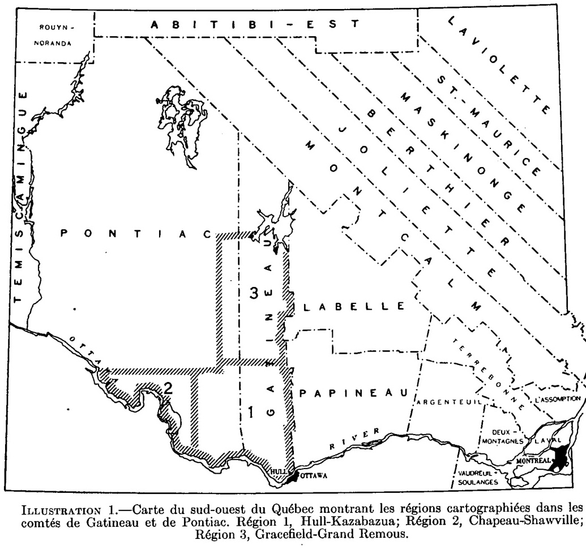
ILLUSTRATION 1.—Carte du sud-ouest du Québec montrant les régions cartographiées dans les comtés de Gatineau et de Pontiac. Région 1, Hull-Kazabazua; Région 2, Chapeau-Shawville; Région 3, Gracefield-Grand Remous.
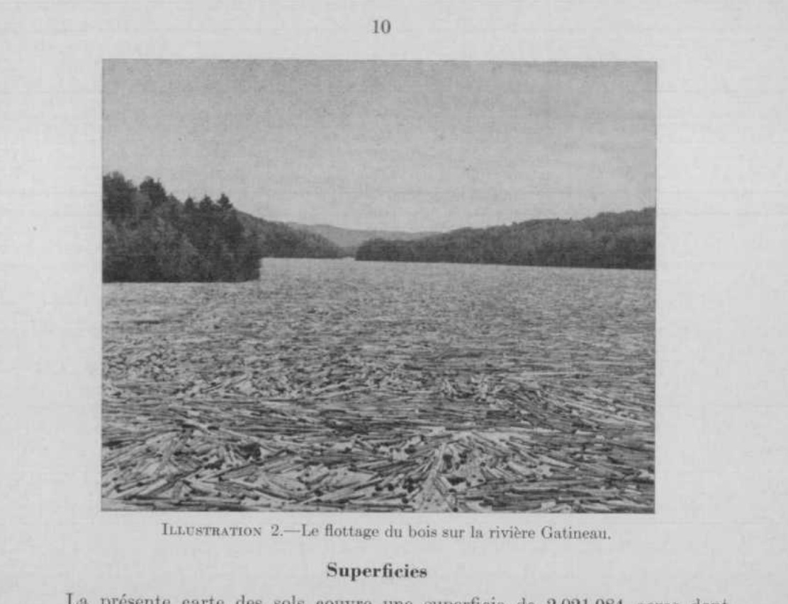
ILLUSTRATION 2.—Le flottage du bois sur la rivière Gatineau.
Superficies
La présente carte des sols couvre une superficie de 2,021,984 acres dont 1,134,810 acres situées dans le comté de Gatineau et 887,174 dans le comté de Pontiac. La superficie totale de ce dernier comté est de 6,118,400 acres et celle de Gatineau, 1,556,480 acres.
Population
En 1951, la population du comté de Gatineau était de 35,264; celle du comté de Pontiac, de 20,696. Le taux d'accroissement est plus rapide dans Gatineau que dans Pontiac dû à l'expansion des centres urbains. En 1956, la population de Gatineau s'était haussée à 40,754 tandis que celle de Pontiac passait à 20,995. Les principaux centres urbains du comté de Gatineau sont Aylmer, Maniwaki et les banlieues de la ville de Hull. Fort-Coulonge et Shawville sont des villages incorporés du comté de Pontiac ayant chacun une population dépassant les mille habitants.
En 1951, la population du comté de Gatineau se composait de 12,125 urbains et de 23,139 ruraux dont 10,273 vivaient sur des fermes. La même année, le comté de Pontiac comptait 2,590 urbains et 18,106 ruraux dont 8,932 occupaient des fermes.
Transports et marchés
L'activité économique des deux comtés est étroitement rattachée aux centres urbains de Hull et Ottawa. La route 8 longe la rivière Outaouais et véhicule la plus importante circulation est-ouest entre Montréal, Hull et Sheenboro. Des ponts à Portage-du-Fort et à l'Île-aux-Allumettes relient cette route à la province d'Ontario. Trois autres ponts unissent directement les villes de Hull et Ottawa. De plus, quelques traversiers font la navette d'une province à l'autre en divers points de la rivière Outaouais. La route 11 est la voie nord-sud reliant Maniwaki à
Hull et débouchant sur la route 58 qui elle-même relie Mont-Laurier à Montréal et à la région abitibienne. Ce réseau routier est complété par plusieurs routes secondaires et chemins de forêt.
Les transports par rail et par eau occupent une place importante. Le Pacifique-Canadien opère un réseau ferroviaire de Hull à Maniwaki, le long de la vallée de la Gatineau, et de Hull à Waltham le long de la rivière Outaouais. La voie principale du National-Canadien entre Ottawa et North Bay traverse la partie sud du comté de Pontiac. Le transport par eau se limite au flottage du bois mou pour la pulpe ou la construction (illustration 2). La Gatineau est la principale voie d'eau utilisée à cet effet mais la rivière Outaouais et plusieurs cours d'eau de moindre importance sont aussi utilisés de même que plusieurs lacs et étangs.
Ottawa et Hull sont les principaux débouchés pour les produits agricoles de la région étudiée.
FACTEURS DE FORMATION DU SOL
Le sol se forme par l'action du climat, de la végétation, du relief et du drainage sur le matériau originel.1
Le climat détermine, en partie, le type génétique de sol pouvant se former dans une région donnée. La végétation, elle-même dépendante du climat, exerce son influence propre sur la formation du sol. Le relief, compte tenu de la porosité des matériaux, conditionne la quantité et la rapidité du ruissellement, l'infiltration et l'aération du sol. Le drainage dépend de nombreux facteurs et sert lui-même de critère de différenciation entre les divers sols. Le matériau originel est la substance première qui a subi l'action du relief du drainage et du climat pour former les sols actuels.
Une étude de chaque agent formateur du sol aidera à expliquer quelques unes des variations observées entre les divers sols et suggérera les conditions générales présidant à leur utilisation et à leur gestion.
Climat
Le climat de l'ouest du Québec est du type frais tempéré. A l'intérieur de la région cartographiée, il y a des différences climatiques mineures dues à des facteurs locaux: élévation, mouvements d'air, exposition des pentes et voisinage d'importantes étendues d'eau. Ces différences paraissent affecter le développement du sol et causer la différenciation, sur un même matériau originel, entre les sols bruns podzoliques de la série Gatineau et les podzols de la série Sainte-Agathe, les sols Gatineau occupant la position la plus méridionale sous un climat légèrement plus chaud et plus sec.
Températures et périodes sans gel
Les températures moyennes mensuelles et annuelles enregistrées à cinq postes météorologiques de la région étudiée apparaissent au tableau 1. On y remarque que le Barrage Mercier situé dans le nord du comté de Gatineau est le plus septentrional, le plus élevé de ces postes et exhibe une moyenne annuelle inférieure de trois degrés à celle des postes les plus méridionaux.
1 Correspond à l'ancien terme roche-mère.
TABLEAU 1.—MOYENNES DES TEMPÉRATURES MENSUELLES ET ANNUELLES1
(en degrés Fahrenheit)
Mois
Barrage Mercier
Maniwaki
Chelsea
Ottawa
Pembroke
Novembre
30
30
33
32 .
33
Décembre
15
15
18
17
17
Janvier
9
11
12
12
12
Février
10
11
11
13
14
Mars
23
23
24
25
26
Avril
37
39
39
41
41
Moyenne
21
22
23
23
24
Mai
51
54
54
55
55
Juin
61
63
64
65
64
Juillet
65
66
69
70
69
Août
63
64
67
66
66
Septembre
54
56
58
58
59
Octobre
43
44
47
46
46
Moyenne
56
58
60
60
60
Moyenne de l'année
39
40
41
42
42
1Compilé d'après: Monthly Meteorological Records, Canada Department of Transport, Toronto, 1952.
TABLEAU 2.—PÉRIODES SANS GEL1, 2
—
Barrage Mercier
Maniwaki
Chelsea
Ferme expérimentale d'Ottawa
Pembroke
Années d'observation
23
32
22
44
54
Période sans gel de 32° F.
(jours)
la plus courte
moyenne
la plus longue
72 115 128
21 101 138
131 154 176
114 141 174
83 132 166
Période sans gel de 28° F.
(jours)
la plus courte
moyenne
la plus longue
104 126 153
108 130 152
129 156 173
128 151 179
Dernier gel (32° F.) du printemps
le plus hâtif
Date moyenne
le plus tardif
11 mai 26 mai 18 juin
1er mai 29 mai 15 juillet
16 avril 7 mai 21 mai
15 avril 11 mai 27 mai
23 avril 16 mai 20 juin
Dernier gel (28° F.) du printemps
Date moyenne
le plus tardif
20 mai 6 juin
16 mai 6 juin
3 mai 18 juin
7 mai 19 mai
Premier gel (32° F.) d'automne
le plus hâtif
date moyenne
le plus tardif
29 août 18 septembre 9 octobre
17 juillet 7 septembre 3 octobre
23 septembre 8 octobre 29 octobre
10 septembre 29 septembre 17 octobre
1er septembre 25 septembre 21 octobre
Premier gel (28° F.) d'automne
le plus hâtif
date moyenne
22 septembre 23 septembre
3 septembre 23 septembre
24 septembre 6 octobre
17 septembre 5 octobre
1Compilé de: Climatic Summaries, Vol. III, Frost Data, Department of Transport, Toronto, 1956. 2Données pour gels de 28° F. compilées de: Monthly Record of Meteorological Observations, Canada Department of Transport, Toronto, 1955.
TABLEAU 3.—MOYENNES DES PRÉCIPITATIONS MENSUELLES ET ANNUELLES1, 2
Barrage Mercier
Mani- waki
Chelsea
Ottawa (Ferme Expéri- mentale)
Lac à la Loutre
Shaw- ville
Fort Coulonge
Sheen- boro
Altitude, pieds...
740
570
329
260
700
545
370
570
Nombre d'années d'observation...
31
40
30
62
7
9
8
8
Novembre...
3.0
2.8
2.9
3.0
2.7
2.6
2.5
2.4
Décembre...
3.0
2.6
3.4
2.6
2.9
2.8
2.5
2.2
Janvier...
2.6
2.1
3.0
2.9
2.5
2.5
1.6
1.9
Février...
2.1
1.7
2.3
2.5
1.7
1.8
2.0
1.6
Mars...
2.6
2.2
2.9
2.7
2.3
2.5
2.5
2.4
Avril...
2.7
2.2
2.7
2.7
2.1
2.9
2.5
2.3
Total...
16.0
13.6
17.2
16.4
14.2
15.3
13.5
12.8
May...
2.6
2.5
3.0
2.5
3.1
2.9
3.2
1.9
Juin...
3.5
3.1
3.1
3.5
2.9
3.3
3.4
3.2
Juillet...
3.8
3.4
3.0
3.4
3.5
3.4
3.5
3.3
Août...
3.5
3.0
2.6
2.6
2.8
2.6
3.1
3.2
Septembre...
3.9
3.3
3.3
3.2
3.2
3.3
3.4
3.4
Octobre...
2.7
2.7
2.5
2.9
3.5
2.5
3.0
2.8
Total...
10.2
18.1
17.3
18.1
19.0
18.0
19.6
17.7
Total de l'année.......
36.0
31.7
34.5
34.4
33.1
33.2
33.1
30.5
1 Compilé du: Bulletin météorologique, Ministère de l'Industrie et du Commerce, 1958, (Québec), et du: Monthly Records of Meteorological Observations, Meteorological Branch, Canada Department of Transport, Toronto, 1958. 2 Dix pouces de neige égalent 1 pouce de pluie.
Le tableau 2, indiquant les périodes sans gel, montre qu'à Maniwaki, il existe de grands écarts dans la durée de la saison sans gel tandis qu'à Ottawa et Chelsea l'amplitude de ces variations est beaucoup plus restreinte. La période de végétation basée sur une température minima de 28°F. est d'environ deux semaines plus longue que celle basée sur un minimum de 32°F. La saison moyenne de 126 jours à Barrage Mercier représente la plus courte saison sans gel de 28°F. ou moins.
Précipitation et humidité du sol
Les précipitations moyennes, mensuelles et annuelles, sont rapportées au tableau 3. Les précipitations enregistrées aux huit postes offrent une échelle de valeur assez étendue; toutefois on ne note que de faibles différences entre les postes de la principale région agricole située le long de la rivière Outaouais. Les précipitations sont légèrement plus fortes durant les mois d'été qu'en autre temps. Durant l'été, c'est Barrage Mercier qui enregistre les plus fortes précipitations.
Pour estimer les conditions d'humidité du sol dans la région étudiée, il faut comparer les chiffres relatifs à la préciptation avec ceux de l'évaporation. A Ottawa,1 l'évaporation en surface libre a été de 19.3 pouces, du 1er mai au 30 septembre, sur une période de 24 années, alors que la précipitation était de 15.2 pouces, produisant dans le sol un déficit moyen de 4.1 pouces d'eau.
1 Rapport de la Division de la Grande Culture, des Sols et de la Mécanique agricole, pour la période de 1936 à 1948, Ministère de l'Agriculture du Canada, Ottawa 1950.
TABLEAU 4.--INTENSITÉ DES SÉCHERESSES DURANT UNE PÉRIODE DE 26 ANS,
À OTTAWA1
Insuffisance d'humidité en pouces
Nombre d'années où une insuffisance s'est produite durant les mois de:
Les déficits annuels moyens en pouces d'eau tels que compilés par Marie Sanderson2 pour les trois points touchant la région cartographiée sont de 1.9 pour Ottawa, de 3.3 pour Renfrew (Sand Point) et de 1.0 pour Pembroke.
Le tableau 4 indique que les déficits d'eau surviennent à Ottawa le plus régulièrement dans les mois de juillet à septembre. Généralement ces déficits sont de moins de deux pouces, mais des sécheresses prolongées, réduisant le rendement des récoltes, peuvent survenir occasionnellement, surtout pendant le mois d'août.
Végétation naturelle
La forêt constitue la végétation naturelle de toute la région étudiée. L'association forestière dominante occupe les endroits où le drainage est bon sans être excessif, soit sur les montagnes, les monticules et les collines de till glaciaire. Cette association comprend l'érable à sucre (Acer saccharum) comme espèce dominante et d'autres arbres à feuillage caduc tels que le bouleau jaune ou merisier (Betula lutea), le hêtre (Fagus grandifolia), l'érable rouge (Acer rubrum), le tilleul (Tilia americana), le frêne (Fraxinus americana), le bouleau blanc (Betula papyrifera), le chêne rouge (Quercus borealis) et le tremble (Populus tremuloides). De plus, ces endroits bien drainés supportent quelques conifères tels que le sapin (Abies balsamea), l'épinette (Picea glauca) et le pin blanc (Pinus Strobus).
Sur les sols à drainage excessif, l'association la plus commune est celle où dominent les conifères. On y voit le pin blanc, le pin rouge (Pinus resinosa), le pin gris (Pinus Bankiana), le sapin baumier et l'épinette blanche (Picea glauca). Ces associations comprennent également quelques feuillus comme le bouleau blanc, le tremble et le chêne rouge.
Les sols des vallées laurentiennes et de la portion supérieure de la vallée l'Outaouais dont le drainage varie d'imparfait à bon, supportent une association mixte formée des essences que nous avons déjà mentionnées mais où les feuillus ont prédominance sur un nombre très variable de conifères.
Les sites imparfaitement drainés, où la prédominance d'humidité cause un abaissement des températures du sol, supportent une végétation composée en parties à peu près égales de feuillus et de conifères. Ces derniers y sont représentés surtout par l'épinette blanche, le thuya occidental (cèdre), le sapin baumier et le mélèze laricin (Larix laricina) alors que les feuillus comprennent surtout l'érable rouge, l'orme, le bouleau blanc et le frêne blanc.
Les sols mal drainés, les sols organiques, les sites marécageux, ou affectés par un plan d'eau élevé sont recouverts d'une végétation de conifères où dominent l'épinette noire (Picea mariana), l'épinette blanche, le mélèze laricin, le sapin baumier et le thuya occidental ou cèdre. Les feuillus des endroits mal drainés sont le frêne noir (Fraxinus nigra), l'orme, le saul (Salix spp.) et le tremble.
Relief
La plus grande partie de l'aire cartographiée appartient aux hautes terres du bouclier laurentien, tandis qu'au sud, une étroite bande appartient aux basses terres de la vallée de l'Outaouais. Le bouclier laurentien offre l'aspect d'une pénéplaine formée de collines se nivelant à des élévations de 800 à 1400 pieds au-dessus du niveau moyen de la mer et creusée par les vallées de rivières et les bassins lacustres dont l'altitude moyenne est de 400 à 800 pieds. Le relief des collines varie de vallonné à montagneux et celui des vallées et des bassins varie d'ondulé à uni.
La vallée de l'Outaouais a une élévation moyenne de 200 pieds dans la partie est, près de Hull et se relève jusqu'à 400 pieds à l'ouest, près de Chapeau. Cette vallée, caractérisée par un relief ondulé à uni, est découpée par quelques ravins et varie considérablement en largeur mais n'étend en moyenne que sur quelques milles vers le nord à partir de la rivière.
Drainage
Hydrographie
Toute la région étudiée fait partie du bassin hydrographique de la rivière Outaouais qui coule de l'ouest vers l'est et reçoit les eaux venant du nord à travers les comtés de Pontiac et de Gatineau. Dans ce dernier comté, le plus important tributaire de l'Outaouais est la Gatineau qui naît à quelques milles seulement des sources de l'Outaouais. La rivière Gatineau coule vers le sud et après avoir formé le lac Baskatong traverse le centre du comté du même nom pour se déverser dans l'Outaouais à Hull. Sur son parcours, la Gatineau reçoit les eaux des lacs Trente-et-un-mille et Ste-Marie de même que d'un grand nombre de cours d'eau secondaires.
Dans le comté de Pontiac, trois rivières principales drainent la région cartographiée. Ce sont, de l'ouest à l'est, la rivière Noire débouchant dans l'Outaouais à Waltham, la Coulonge débouchant à Davidson et la Quyon, à Quyon. En outre, le comté compte de nombreux cours d'eau de moindre importance s'écoulant du nord vers la rivière Outaouais.
La région du bouclier laurentien est partout parsemée de lacs et de rapides rivières. Si l'on excepte la rivière Outaouais, les étendues d'eau représentent 7.7 pour cent du comté de Gatineau et 4.0 pour cent de la superficie cartographiée dans le comté de Pontiac. Le volume et la forte dénivellation des eaux de ce bassin hydrographique ont permis l'installation de nombreuses usines hydro-électriques. De plus, ces cours d'eau et lacs, situés dans un magnifique décor naturel, constituent un attrait touristique remarquable.
Drainage du sol
Le drainage du sol est diversifié par la pente du terrain et la porosité des matériaux.
Les particularités de drainage ne peuvent être pleinement appréciées sans une description complète de chaque cas. Il est, cependant, possible de grouper
les sols selon des classes définies de drainage; les plus couramment employées réfèrent à des drainages excessif, bon, imparfait, mauvais et très mauvais. Un même genre de drainage peut cependant résulter de causes différentes. Par exemple, un drainage excessif peut être causé par des pentes très fortes, par une très grande porosité des matériaux ou encore par une combinaison de ces deux facteurs.
Dans les vallées des Laurentides on peut observer une grande variabilité dans les conditions de drainage et cela sur de très courtes distances, à cause de variations considérables dans la porosité des matériaux et le degré des pentes. La grande perméabilité des matériaux est responsable du drainage excessif des sols de sable grossier et de gravier indépendamment de leur topographie ou de leurs pentes. Les dépressions marécageuses sont fréquemment associées à ces sols grossiers car l'incapacité de ces matériaux à retenir les eaux de drainage permet qu'elles s'infiltrent rapidement vers les endroits bas. Les dépressions marécageuses sont rares sur les sites argileux car les argiles peuvent absorber et retenir des quantités d'eau considérables. Les hautes terres du bouclier Laurentien ont en général un drainage bon à excessif à cause du relief formé de pentes courtes et raides entraînant un ruissellement rapide.
En comparaison avec les sols des hautes terres, ceux de la vallée de l'Outaouais offrent des variations de drainage beaucoup moins marquées; à cause de leur topographie unie et de leur haute teneur en matériaux fins, les derniers souffrent généralement d'un drainage imparfait à mauvais. Les argiles peu perméables qui forment le solum ou le substratum de la majorité des sols de la vallée sont en grande partie responsables de la lenteur du drainage. Les ravins, enfoncés dans les argiles à certains endroits, ont cependant accéléré le ruissellement des eaux et leur infiltration dans le sous-sol, contribuant ainsi à la formation des sols bien drainés. Les sols à drainage excessif ne se trouvent que sur de profonds dépôts de sable poreux.
Matériaux originels
Assises géologiques
Les assises géologiques de la région cartographiée sont d'âge précambrien, sauf celles à l'ouest et au sud-ouest de Hull, celles de l'île aux Allumettes et d'une partie de l'île Calumet qui sont d'âge paléozoïque.
La formation Ottawa, à l'ouest de Hull, est surtout composée de calcaire; sa partie inférieure comprend des strates de schiste argileux, de dolomie et de grès. Cette formation représente une subdivision du groupe Trenton-Black River appartenant à l'Ordovicien moyen. Le groupe Chazy de l'Ordovicien inférieur est représenté par la formation Rockcliffe composée de schiste argileux interstratifié de grès et s'étendant en une longue bande au nord de la rivière Outaouais entre Breckenridge et les rapides de la Chaudière. A l'ouest d'Aylmer, une étroite bande de la formation Oxford du groupe Beekmantown est composée de dolomie et de calcaire, et appartient également à l'Ordovicien inférieur. Des assises Beekmantown se rencontrent également à certains points du rivage de l'Outaouais entre Quyon et Norway Bay. La partie nord-ouest de l'Île Calumet est formée d'assises de roc Chazy tandis que l'île aux Allumettes comprend des assises du Chazy et du Beekmantown.
Les formations précambriennes appartiennent surtout à la série Grenville qui consiste principalement en roches métamorphiques tels le calcaire cristallin,
le quartzite, et diverses sortes de roches gneissiques. Ces vieilles assises ont subi des intrusions relativement peu volumineuses de granite, de syénite, de pegmatite ainsi que de quelques roches basiques comme les gabbros.
Dépôts de surface
Les dépôts de surface, formant les matériaux originels des sols de la région étudiée, peuvent être classés en six groupes selon leur origine; glaciaire, fluviale, marine, lacustre, alluvionnaire et organique. L'ordre d'énumération correspond à l'ordre de déposition de ces matériaux.
Les glaciers continentaux ont recouvert la région d'une couche de till d'épaisseur variable. Ce matériel consiste en roc moulu dont la finesse varie de l'argile au limon et au sable et, en fragments rocheux allant du gravier aux «boulders».
Illustration 3.—Les étroites vallées comme celle-ci, qui débouche sur le lac Blue Sea, offrent une grande variété de sols. Les sols glaciaires Larose et Ste-Agathe bordent la vallée de chaque côté, les sols lacustres de la série Montcerf occupent le fond de la vallée et les alluvions Brébeuf et Ripon couvrent les rives du cours d'eau au centre de la vallée.
Les tills qui couvrent presque tout le bouclier laurentien, sont dérivés des roches ignées ou métamorphiques sous-jacentes tels que le gneiss, le quartzite, le calcaire cristallin et les granites. Ils contiennent généralement beaucoup de boulders arrondis ou semi-angulaires. Les tills minces dérivés du roc acide d'âge précambrien ont servi de matériau originel aux sols Lakefield et St-Colomban, tandis que les tills de même origine plus profonds ont donné naissance aux sols Gatineau, Ste-Agathe (illustration 3) et Aumond. Le sol Larose s'est développé aux endroits où l'assise géologique est en grande partie composée de calcaire cristallin.
Les tills dérivés de roches paléozoïques peuvent aussi être classés selon leur composition et leur profondeur. Des tills minces et acides forment le matériau
originel des sols Stonefield ; des tills également minces mais calcaires ont donné les sols Farmington. Enfin, des tills calcaires de profondeur moyenne ont servi de matériau originel aux sols St-Bernard et Matilda.
Les dépôts fluviaux formés par les cours d'eau glaciaires et post-glaciaires se rencontrent surtout le long des principales vallées et sur le pourtour des lacs ou de la mer qui existait dans la vallée de l'Outaouais à la fin de la période glaciaire. Le tri des matériaux par les eaux fluvio-glaciaires a été peu prononcé aux abords des glaciers où des graviers mêlés de pierres arrondies et même des boulders ont été déposés et forment maintenant le matériau originel des sols St-Faustin. Des dépôts de gravier acide mieux assortis et moins grossiers forment le matériau originel des sols St-Gabriel et Mont-Rolland, alors que le sol Calumet est issu de graviers calcaires. Quelques-uns de ces graviers furent recouverts de un à quatre pieds d'alluvions fines et forment le matériau originel du sol Coulonge.
Certains graviers reposent sur l'argile et forment le matériau originel du sol Lesage, tandis que d'autres, dérivés en grande partie des assises calcaires du Paléozoïque et contenant des coquillages marins, forment le matériau originel du sol Oka.
Après la retraite des glaciers, une mer a recouvert la partie basse de la vallée de l'Outaouais et la vallée de la Gatineau devait alors former l'estuaire d'une grande rivière s'écoulant vers cette mer. Cet estuaire de largeur variable était vraisemblablement relié à plusieurs bassins lacustres importants.
Lors de la cartographie nous avons reconnu trois types principaux de dépôts argileux profonds d'origine marine ou lacustre. Le plus épais de ces dépôts s'est effectué en eau profonde. Le contenu argileux, de ce dépôt est supérieur à 60 pour cent, et d'une structure massive uniforme. Cette argile marine se rencontre presque exclusivement dans la vallée de l'Outaouais et forme la matériau originel des sols Rideau, Ste-Rosalie et Laplaine.
Les dépôts lacustres de la région de Maniwaki diffèrent considérablement de l'argile que nous venons de mentionner car ils sont généralement lamellés ou varvés; leur teneur en argile dépasse rarement 40 pour cent, tandis que la proportion de limon y excède souvent les 50 pour cent. Ces matériaux limono-argileux forment le matériau originel des sols Bouchette, Montcerf et Maniwaki.
D'autres dépôts sont intermédiaires en teneur d'argile et de limon entre les deux types de dépôts déjà mentionnés et forment le matériau originel des sols Brandon, Chapeau, Dalhousie et Pontiac. Ces dépôts occupent la vallée inférieure de la Gatineau et ce qu'on peut appeler la terrasse supérieure de la vallée de l'Outaouais. A grande profondeur, ces dépôts intermédiaires ressemblent aux dépôts marins et sont généralement d'une composition argileuse très uniforme, mais près de la surface, ils deviennent plus limoneux et souvent lamellés.
Des matériaux argileux d'environ deux pieds d'épaisseur recouvrent le till calcaire sur de faibles étendues le long de la rivière Outaouais plus particulièrement près de Deschênes, et forment le matériau originel des sols Châteauguay.
Des alluvions, dont la texture varie depuis le sable grossier (ou le gravier) jusqu'au loam fin, recouvrent quelques tills et une grande partie des dépôts argileux.
Les sables grossiers et les sables graveleux des plaines de délavages glaciaires se sont déposés surtout dans la partie supérieure des vallées laurentiennes, et forment le matériau original des sols Morin et Déligny. Par ailleurs, les sols Uplands, Ste-Sophie et St-Jude se sont formés sur des sables moyens et assez
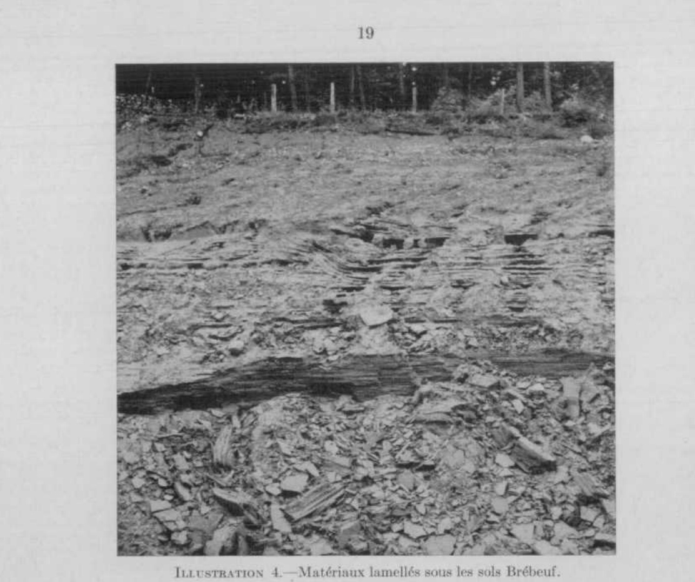
Illustration 4.—Matériaux lamellés sous les sols Brébeuf.
fins, de composition homogène et reposant sur les argiles marines. Quant aux sols Ivry et Bevin, ils se sont formés sur des dépôts de sable fin, parfois inter-stratifiés de minces couches de limon et de sable très fin. Enfin les sols St-Thomas, Achigan et Vaudreuil dérivent des sables très fins et de grande homogénéité recouvrant l'argile de la vallée de l'Outaouais. Ces divers matériaux sableux sont généralement profonds et couvrent des étendues considérables.
De faibles épaisseurs de sable recouvrent soit le till acide des hautes terres laurentiennes, soit le till calcaire de la vallée de l'Outaouais, ou encore l'argile des basses terres du St-Laurent pour former respectivement les sols des séries Guindon, St-Benoît, St-Damase et Courval. Pour leur part, les sols Ripon que l'on rencontre au fond de certaines vallées, ont comme matériau originel un dépôt sableux comprenant un mélange de particules fines et grossières. Enfin, les sables de déposition relativement récente le long des cours d'eau actuels sont encore peu développés pédologiquement et forment les matériaux originels, de deux sols différents : le sol Ottawa dérivé de sable moyen et le sol Diable dérivé de sable très fin.
Des matériaux loameux recouvrent également certaines argiles et quelques tills. Les sols St-Jovite que l'on rencontre sur de hautes collines bordant certaines larges vallées laurentiennes ont comme matériau originel un loam sableux très fin ou un loam limoneux, d'origine éolienne, recouvrant un till rocheux d'une couche variant entre un et trois pieds d'épaisseur. Un loam sableux de quelques pieds d'épaisseur recouvre le matériel lacustre de certaines vallées et forme le matériau originel des sols Piedmont et Hull. Les sols Brébeuf, Allumette et Demers sont formés de façon semblable mais dérivent de loam sableux
fin, de loam ou de loam limoneux. Le sol Chicot de la vallée de l'Outaouais dérive d'un loam sableux de moins de trois pieds d'épaisseur sur till calcaire. Quant aux sols Côteau et Soulanges, également de la vallée de l'Outaouais, ils ont comme matériau originel deux à cinq pieds de loam sableux fin reposant sur l'argile.
Enfin, les sols Lachute se rencontrent le long des rivières actuelles ou une récente alluvion de loam en constitue le matériau originel.
Pour compléter cette longue liste de matériau originel, mentionnons les dépôts organiques qui se sont accumulés dans certaines dépressions de terrain.
FORMATION DES SOLS ET CLASSIFICATION
La formation des sols est déterminée par le climat, la végétation, le relief, le drainage et le matériau originel, ce dernier étant l'élément passif sur lequel les autres agissent pour produire un genre spécifique de profil de sol. Le profil d'un sol réfère à la disposition des couches horizontales (ou horizons) produites par les processus pédologiques. Elles se distinguent les unes des autres par la composition chimique, la couleur, la texture et la structure. D'après leur profil, les sols minéraux de la région étudiée peuvent être classés dans les grands groupes suivants : les podzols, les sols bruns podzoliques, bruns forestiers, gris-brun podzoliques, gris boisés, les gleysoliques gris foncé, les gleysols, les lithosols et les alluvions récentes. Les sols organiques sont classés d'après leur degré de décomposition, en terres noires, terres noires tourbeuses et tourbes.
Grand groupe des podzols
Les sols du groupe podzol ont un drainage variant de bon à imparfait. Les membres bien drainés ont un horizon (A2) intensément éluivé, couleur de cendre, en dessous de la mince couche humifère (A0) brute de la surface. Sous cette couche gris cendré se trouve l'horizon (B2) de couleur uniforme d'un brun rougeâtre à jaunâtre. Tous les horizons de ce sol sont acides. Les podzols (illustration 5) de la région étudiée se sont développés sur des matériaux sableux ou loameux.
Les podzols imparfaitement drainés ou podzols à gley ont la même séquence et le même nombre d'horizons que les podzols bien drainés, mais à cause d'une aération et d'un drainage imparfaits, le sol est marqué de marbrures grises et gris brunâtre contrastant avec le brun rougeâtre et le brun jaunâtre. Ces sols, dont tout le solum est acide, sont très répandus dans la région étudiée et comprennent presque tous les sables et les loams à drainage imparfait comme ceux des séries St-Jude, Achigan et Allumette.
Grand groupe des sols bruns podzoliques
Le solum des sols bruns podzoliques est comme celui du podzol, bien drainé, acide et doté de couleurs uniformes. L'horizon (A2) du podzol est absent, sauf sous forme d'une très mince couche occasionnelle. Le principal sol de ce groupe est le Gatineau.
Grand groupe des sols bruns forestiers
Les sols bruns forestiers sont bien drainés et de couleur brune uniforme mais se distinguent nettement par leur horizon de surface organo-minéral (A1) qui remplace la couche d'humus brut des sols podzoliques. Les sols bruns forestiers ont une réaction neutre à alcaline et contiennent des carbonates libres au moins dans la partie inférieure du solum. Ces sols ont une distribution restreinte dans
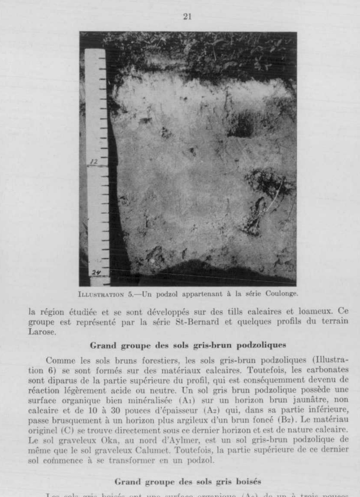
Illustration 5.—Un podzol appartenant à la série Coulonge.
la région étudiée et se sont développés sur des tills calcaires et loameux. Ce groupe est représenté par la série St-Bernard et quelques profils du terrain Larose.
Grand groupe des sols gris-brun podzoliques
Comme les sols bruns forestiers, les sols gris-brun podzoliques (Illustration 6) se sont formés sur des matériaux calcaires. Toutefois, les carbonates sont diparus de la partie supérieure du profil, qui est conséquemment devenu de réaction légèrement acide ou neutre. Un sol gris brun podzolique possède une surface organique bien minéralisée (A1) sur un horizon brun jaunâtre, non calcaire et de 10 à 30 pouces d'épaisseur (A2) qui, dans sa partie inférieure, passe brusquement à un horizon plus argileux d'un brun foncé (B2). Le matériau originel (C) se trouve directement sous ce dernier horizon et est de nature calcaire. Le sol graveleux Oka, au nord d'Aylmer, est un sol gris-brun podzolique de même que le sol graveleux Calumet. Toutefois, la partie supérieure de ce dernier sol commence à se transformer en un podzol.
Grand groupe des sols gris boisés
Les sols gris boisés ont une surface organique (A0) de un à trois pouces d'épaisseur, reposant sur un horizon éluivé et de couleur pâle (A2), reposant à son tour sur un horizon plus argileux et de couleur plus foncée (B2). Le matériau originel est généralement de réaction alcaline. Ce groupe est représenté par le sol Chapeau.
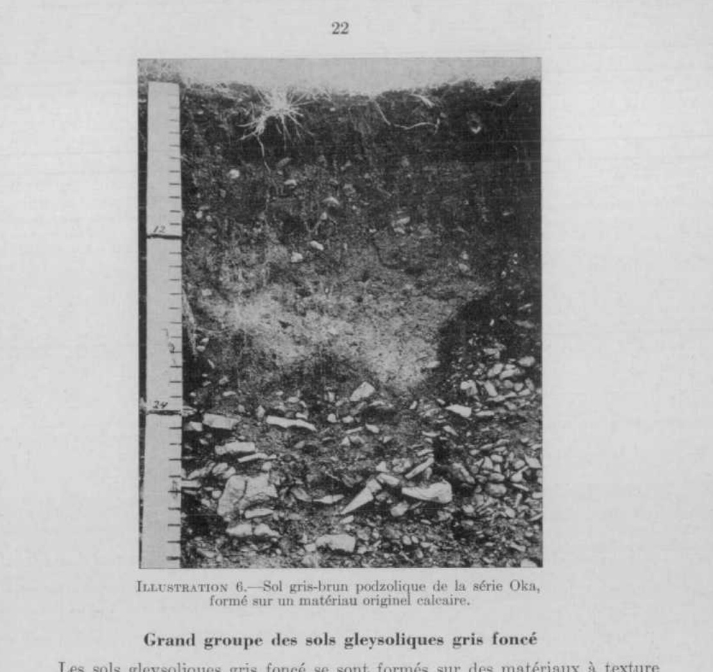
ILLUSTRATION 6.—Sol gris-brun podzolique de la série Oka, formé sur un matériau originel calcaire.
Grand groupe des sols gleysoliques gris foncé
Les sols gleysoliques gris foncé se sont formés sur des matériaux à texture fine et ayant un drainage naturel très imparfait ou quelque peu mauvais. Leur surface consiste en une couche organique minéralisée de plus de trois pouces reposant sur un horizon discontinu quelque peu éluvé et tacheté de gley. En dessous se trouve un horizon qui se différencie du matériau originel par des couleurs marbrées ou mouchetées ainsi que par sa structure. Le Ste-Rosalie et le Dalhousie sont deux importants sols de ce groupe. Bien que placé dans ce groupe, le Montcerf possède un humus plutôt brut.
Grand groupe des lithosols
Les terrains Farmington et Stonefield groupés sous le nom de lithosol se sont formés sur des dépôts de till sur le roc, tellement minces, que des profils de sols normaux n'ont pu se former.
Grand groupe des gleysols
Les gleysols se sont formés sous un drainage naturel très mauvais. Ils ont, en surface, une couche noire ou très foncée, d'humus brut de plus de quatre pouces d'épaisseur reposant sur un sol minéral gris bleuté parfois tacheté de marbrures. En dehors de cette couche de gley causée par l'insuffisance d'air (oxygène), il y
a peu de différentiation du profil. Les conditions de mauvais drainage ont produit des gleysols sur divers types de matériaux comme c'est le cas pour les sols Vaudreuil et Maniwaki.
Alluvions récentes
Les alluvions récentes n'ont pas été assez longtemps en place pour acquérir un profil défini. Ce groupe est représenté par les sols Ottawa, Diable et Lachute.
Classification en séries et en types
Trois critères ont servi à classifier les sols de la région: la nature du matériau originel, les conditions naturelles de drainage et le type de profil (groupe de sol). La classification selon ces critères aboutit à la série de sol. Les sols d'une même série dérivent d'un même matériau originel et sous des conditions de drainage identiques ont évolué vers le même genre de profil.
Chaque série a un nom qui lui est propre (par exemple Pontiac) auquel on adjoint une désignation texturale qui en spécifie le type (par exemple: loam Pontiac, loam argileux Pontiac). Les désignations texturales réfèrent à la texture de la surface cultivée du sol et comprennent douze classes: sable, sable loameux, loam sableux, loam, loam limoneux, limon, loam limono-argileux, loam sablo-argileux, loam argileux, argile sableuse, argile limoneuse et argile (voir l'illustration 22 du lexique). Les superficies de chacun des sols et terrains de la région cartographiée sont données au tableau A de l'appendice.
La clé présentée au tableau 5 résume donc cette classification basée sur le matériau originel d'abord et ensuite sur le drainage. Le groupe auquel chaque sol appartient est également indiqué et, en certains cas, sert à différencier l'une de l'autre deux séries qui ont le même matériau originel et le même drainage, comme par exemple le sol brun podzolique Gatineau et le podzol Ste-Agathe.
TABLEAU 5.—CLÉ DES SOLS DES COMTÉS DE GATINEAU ET DE PONTIAC
(e) Matériaux bien assortis, dérivés de roches précambriennes non calcaires et déposés sur de l'argile
Bien drainé Loam sablo-graveleux Lesage (P)Le
C. Sols sur dépôts argileux
(a) Loam argileux, mince sur till calcaire
Bien drainé Loam argileux Châteauguay (GBP)Ch
(b) Loam limono-argileux à argile limoneuse
Bien drainés Loam limono-argileux Bouchette (P)Bc Loam à loam limoneux Bouchette (P)Bel
Mal drainé Loam limono-argileux à loam argileux Montcerf (GG)Mf
Très mal drainé Loam limono-argileux Maniwaki (G)Mw
(c) Loam limono-argileux à loam limoneux sur argile
Dans les descriptions qui suivent, la couleur du sol est suivie d'un ensemble de symboles qui réfèrent au système de couleurs Munsell. La signification des mots et termes propres aux sols est donnée dans un lexique, à la fin du rapport.
Sols sur tills
Série Gatineau (Gt)
Les sols Gatineau, (Illustration 7), les plus répandus du comté de Gatineau où ils couvrent 382,877 acres, viennent en second lieu dans le comté de Pontiac, avec 113,677 acres. Ces sols bien drainés se sont formés sur un till dérivé des formations précambriennes comme le granit, le gneiss, le gabbro, l'anorthosite et le calcaire cristallin. Leur relief est généralement vallonné à montagneux, et parfois légèrement vallonné. Le matériau originel est d'une épaisseur moyenne de 4 à 12 pieds quoique, en certains endroits, elle devient plus mince au point que le roc sous-jacent est parfois exposé. Ces sols sont en majorité excessivement rocheux; les endroits moyennement rocheux ne constituent qu'un faible pourcentage de la superficie totale.
La série Gatineau appartient au groupe de sols bruns podzoliques, alors que la série Ste-Agathe, formée sur le même type de till, appartient aux podzols. On trouve les sols Gatineau sur les collines de faible altitude (500' à 1000'), sur le rebord de l'escarpement laurentien ou dans les vallées. Il y a plusieurs endroits où les sols Gatineau et Ste-Agathe se retrouvent ensemble.
Le danger d'érosion sur les sols Gatineau est minimisé par la grande perméabilité du solum et la longueur relativement courte des pentes. Cependant, l'érosion est sévère partout où le terrain est cultivé dans le sens de la pente. En général, il y a peu d'érosion nocive parce que les terrains déboisés sont surtout utilisés comme pâturages. Les bois comprennent surtout des feuillus comme l'érable à sucre, le chêne rouge, le hêtre, le tilleul, le frêne blanc et l'orme.
Les sols Gatineau ont une gamme de texture peu étendue; tous ont été cartographiés comme loams sableux. La description suivante est celle d'un profil à surface cultivée du loam sableux Gatineau.
Horizon
Profondeur en pouces
Ap
0-6
Loam sableux fin, brun jaunâtre foncé ou brun foncé (10YR 4/4)3; structure granuleuse fine; très friable et perméable; pH 5.6 à 5.9.
B2
6-17
Loam sableux, fin, brun jaunâtre (10YR 5/4 à 5/6); structure granuleuse très fine et monogranulaire; très friable et perméable; pH 5.6 à 5.9.
B3
17-24
Loam sableux olive (2.5Y 4/4); structure très fine, granuleuse à cuboïde anguleuse; friable; pH 5.6 à 5.9.
C
24+
Till non altéré de loam gris olive à gris, plusieurs fragments graveleux et pierres de différentes grosœurs; structure pseudo-laminée à cuboïde ou massive; compact; pH 5.6 à 6.0.
En forêt, le sol possède une litière superficielle d'environ un pouce d'épaisseur formée d'humus brut, de feuille et de tiges et qui repose sur l'horizon B2 décrit plus haut.
Agriculture
La majorité des sols Gatineau ont été laissés boisés à cause de leur état pierreux et de leur topographie qui les rend peu aptes aux fins agricoles. Le terrain déboisé est surtout laissé en pâturages non amélioré et la partie cultivée demeure négligeable.
L'enlèvement des pierres n'est pas économique: il faut souvent utiliser la dynamite pour faire éclater les énormes boulders ou les affleurements de roc.
Pour bien produire, le sol doit être chaulé et fertilisé avec des engrais complets et du fumier. L'emploi du fumier est particulièrement avantageux pour améliorer en même temps la capacité de rétention d'eau et le niveau des éléments nutritifs.
Les sols Gatineau sont hâtifs et devraient être semés tôt au printemps pour que les plantes puissent bénéficier de l'abondance d'humidité disponible au début de la saison de végétation.
Série Ste-Agathe (Ag)
Les sols Ste-Agathe, au nord de la région cartographiée, occupent 121,683 acres dans le comté de Gatineau et 216,537 acres dans le comté de Pontiac. Comme les sols Gatineau, ils sont bien drainés et se sont formés sur du till dérivé de roches précambriennes: gneiss, granit, gabbro, anorthosite. La série Ste-Agathe appartient cependant aux podzols tandis que la série Gatineau fait partie des sols bruns podzoliques.
3 Munsell color notation, Munsell Color Company Inc., Baltimore 2, Maryland, U.S.A.
Série Aumond (Am)
La série Aumond (Illustration 7), représente le membre imparfaitement drainé des sols Gatineau et Ste-Agathe. Elle se rencontre en petites étendues dispersées au nord de Maniwaki et couvre 3,334 acres. Les sites particuliers à ce sol sont les pentes assez douces et longues où peut s'accumuler l'eau d'infiltration venant des collines de till situées plus haut. La plupart des terrains sont modérément pierreux mais il y en a aussi d'excessivement pierreux.
L'eau pénètre rapidement à travers le solum perméable mais refuse de traverser le matériau originel sous-jacent formé de till compact et descend plutôt la pente en s'infiltrant à travers la base du solum; le drainage est de moins en moins bon vers le bas des pentes.
Illustration 7. — Cette vue, près de Bois Franc, montre les sols bien drainés de la série Gatineau sur la colline de l'arrière plan et les sols Aumond, imparfaitement drainés sur la pente.
Le loam sableux est le seul type de la série Aumond, laquelle appartient au groupe des podzols à gley. La description suivante est celle d'un sol cultivé.
Horizon
Profondeur en pouces
Description
Ae
0-5
Loam sableux brun grisâtre très foncé (10YR 3/2); structure granuleuse; friable et perméable; pH 5.3 à 5.6. Des plaques de l'horizon A2 apparaissent par endroits sous la couche cultivée.
B2
5-12
Loam sableux brun jaunâtre foncé, avec taches de brun rougeâtre foncé (5YR 3/4) et de brun grisâtre (2.5Y 5/2); structure granuleuse fine à cuboïde sub-anguleuse; très friable et perméable; pH 5.6 à 5.9.
Bg
12-24
Loam sableux brun grisâtre, avec larges taches olive (2.5Y 4/4) ou brun grisâtre foncé (10YR 4/2); structure cuboïde sub-anguleuse; friable et perméable; pH 5.8 à 6.2.
C
24+
Till de loam sableux gris olive (5Y 4/2-4/3), avec marbrures assez distinctes de brun grisâtre et de brun jaunâtre foncé; structure massive; ferme à compact; pH 5.8 à 6.2.
En forêt, la couche de surface est une litière organique de quelques pouces d'épaisseur reposant sur un horizon minéral gris et appauvri (A2) de 2 à 4 pouces d'épaisseur qui s'incurve par endroits dans l'horizon B2 sous-jacent.
Agriculture
Le sol Aumond est en grande partie défriché et utilisé pour le pâturage ou la grande culture. Les rendements sont bons où le sol est bien entretenu. Afin de réprimer l'érosion, éviter de cultiver de haut en bas des pentes.
Pour être efficace, le drainage doit se faire en contrepente, en ayant soin de couper l'eau d'infiltration par des drains souterrains ou des fossés en amont des endroits les plus mal drainés. Ces drains ou fossés doivent être creusés à 30 pouces de profondeur au moins et s'enfoncer jusque dans le matériau originel compact. Ceci permettra d'éliminer les eaux d'infiltration et contribuera à réprimer l'érosion.
Une fois le drainage établi, on pourra s'attendre à un bon rendement par des traitements à la chaux, au fumier et aux engrais chimiques complets.
Terrain Lakefield (Lk)
Les sols Lakefield couvrent 56,467 acres dans le comté de Gatineau et 66,342 acres dans le comté de Pontiac. On les rencontre en terrain vallonné ou ondulé, à des altitudes variant entre 600 et 1300 pieds. Les boulders sont fréquents à la surface du terrain aussi bien que dans le sous-sol.
Ces sols comprennent des profils bruns podzoliques et des podzols minces (ou minimals), formés sur un mince till de loam sableux. De plus, le terrain comprend des dépressions très mal drainées ou marécageuses, ainsi que de nombreux affleurements de roc. Étant donné de telles variations, il n'est pas possible d'attribuer au Lakefield le nom de série mais il convient d'y référer comme à un genre de terrain (land type).
Le terrain Lakefield est surtout formé de sol bien drainé, perméable et possédant une capacité moyenne de rétention d'humidité. Cependant, la mince couverture de till sur le roc ne peut emmagasiner toute l'eau de précipitation et le surplus s'accumule dans les dépressions du roc où se forment des sols marécageux.
La couverture forestière de ce terrain comprend l'érable à sucre, l'érable rouge, le thuya (cèdre) et le bouleau blanc.
En terre vierge, où un till épais a permis le développement d'un podzol minimal, les caractéristiques du profil sont les suivantes:
Horizon
Profondeur en pouces
A0
2 - 0
Humus noir formé de feuilles décomposées, de racines et d'un peu de matière organique minéralisée; très friable et perméable; pH 4.0 à 4.5.
A2
Une mince couche, d'un pouce ou moins, grise et éluivée, est parfois apparente sous le A0.
B21
0 - 8
Loam sableux brun rougeâtre; taches brunes et brun jaunâtre; friable et perméable; pH 5.0 à 5.4.
B22
8-22
Loam sableux brun jaunâtre pâle; friable et perméable; pierres et fragments graveleux; pH 5.0 à 5.6.
C
22-28
Till de loam sableux gris brunâtre pâle; légèrement altéré; très ferme et peu perméable; nombreuses pierres et fragments graveleux; pH 5.1 à 5.8.
L'horizon C n'est pas toujours présent; souvent le solum brun repose directement sur le roc.
Agriculture
Une faible partie des sols Lakefield est déboisée et utilisée surtout pour le pâturage et le foin. Les nombreux boulders et affleurements rocheux, la rude topographie et les fréquents petits marécages découragent une utilisation plus intense de ces sols.
Le terrain entre les affleurements et les marécages n'est que modérément fertile. Le mince solum, fortement acide, est exposé à souffrir de sécheresses intermittentes. Le chaulage et la fertilisation avec des fertilisants complets sont nécessaires pour obtenir de bons rendements.
Vu les nombreux obstacles naturels, les champs sont de dimensions réduites et irrégulières; leur exploitation est difficile et souvent non économique. Le reboisement est à conseiller en nombreux cas, particulièrement où le terrain ne fournit qu'un maigre pâturage broussailleux.
Terrain St-Colomban (Cb)
Les sols St-Colomban se trouvent surtout dans la partie sud du comté de Gatineau où ils occupent 12,755 acres sur les basses collines du bouclier laurentien dont l'altitude varie entre 300 et 900 pieds. Dans le comté de Pontiac, ces sols couvrent 5,050 acres.
Le matériau originel est un till dérivé de roches précambriennes gneissiques et granitiques, semblable à celui des sols Gatineau et Ste-Agathe. Toutefois, le till St-Colomban est plus poreux et plus jaune (plus oxydé) que les autres tills laurentiens. Il contient beaucoup de pierres et de gravier anguleux et subanguleux. Son épaisseur sur le roc est souvent de moins de 3 pieds. Il semble originer d'une moraine d'ablation alors que les autres tills font partie de moraines de fond.
Il faut référer au St-Colomban comme à un type de terrain (land type), car les variations admises dans la définition de cette unité cartographique sont plus grandes que celles permises au niveau de la série. Le terrain St-Colomban comprend des podzols développés sur till, des affleurements couvrant parfois près de la moitié de la surface, ainsi que des marécages et de la tourbe.
Le drainage externe des sols de till est modéré, et l'eau de précipitation traverse rapidement les matériaux gravelo-rocheux pour atteindre le substratum imperméable de roc et couler latéralement vers la plus proche dépression marécageuse. Le till mince et discontinu a un faible pouvoir de rétention d'eau et devient souvent très sec au cours de l'été.
Les sols St-Colomban sont généralement boisés. La végétation est souvent discontinue et variée à cause des bandes d'affleurement rocheux et des variations extrêmes dans le drainage. L'érable et le pin dominent généralement sur les parties sèches, alors que le cèdre et le mélèze croissent dans les dépressions humides.
La description suivante donne les caractéristiques du profil de podzol que l'on trouve dans ces terrains de till.
Horizon
Profondeur en pouces
A0
1 - 0
Humus noir semi-décomposé; racines abondantes.
A2
0 - 2
Loam sableux éluivé gris brunâtre clair; friable et perméable.
B21
2 - 5
Loam sableux brun rougeâtre; forte proportion de pierres et de gravier; sans structure et lâche.
B22
5-20
Loam sableux à loam sablo-graveleux brun jaunâtre; nombreux fragments rocheux à angles aigus; lâche et excessivement perméable.
B3
20-20
Till de loam sablo-graveleux brun jaunâtre clair à gris brunâtre clair ; ferme ; se brisant en fragments irréguliers.
D
30+
Roc précambrien.
Le profil est très acide et comprend généralement des pH de 4.0 à 5.0 en surface et de 5.5 à 6.0 dans la partie inférieure du sous-sol.
Agriculture
Les sols St-Colomban sont impropres à l'agriculture à cause de leurs nombreux boulders, affleurements et marécages. L'érable à sucre pousse bien aux endroits où les sols sont profonds et secs. Plusieurs autres espèces d'arbres pourraient aussi y croître avec succès. Les petits vergers de famille auraient avantage à y être établis plutôt que sur les sols non-pierreux et imparfaitement drainés du voisinage; pourvu que l'excès de boulders ne cause pas un trop sérieux inconvénient.
Terrain Larose (La)
Le terrain Larose occupe 39,949 acres dans le comté de Gatineau et 10,688 acres dans le comté de Pontiac. Il inclut des sols formés sur un till contenant du calcaire cristallin ou formés sur le roc calcaire en place et exhibant des profils bruns forestiers, bruns podzoliques et des podzols. Les sols bruns forestiers se rencontrent là où le calcaire a une influence prépondérante, tandis que des sols bruns podzoliques ou des podzols se trouvent sur le matériau originel pauvre en calcaire. Ce terrain comprend également des affleurements de calcaire cristallin de la formation Grenville avec d'autres types de roc. Les boulders, moins abondants sur les sols Larose que sur les sols de till environnants, sont constitués surtout de gneiss, de quartz et de granit.
Le terrain Larose a un relief général plus ou moins vallonné tandis que le micro-relief a une apparence brisée due à la présence de nombreux affleurements de calcaire. Le drainage est excessif à cause d'un ruissellement externe rapide, de la grande perméabilité du sous-sol et de son faible pouvoir de rétention d'eau. Le matériau originel lui est excessivement perméable là où il est formé de calcaire désagrégé en cristaux grossiers.
La végétation naturelle est surtout formée d'érable à sucre et de chêne rouge avec une faible proportion de thuya (cèdre). Le thuya est particulièrement abondant sur les terrains où la culture a été abandonnée. L'herbe à la puce foisonne le long des routes.
Parmi les divers types de profils observés sur le terrain Larose, les bruns forestiers, formés sur le calcaire cristallin, présentent les principales caractéristiques suivantes :
Horizon
Profondeur en pouces
A1
0- 2
Loam sableux organique, brun rougeâtre très foncé (5YR 3/2-2/1); structure grumeleuse; très friable et perméable; pH 6.3 à 7.1.
Un horizon éluivé peut se rencontrer occasionnellement sous la couche organique.
B21
2- 5
Loam sableux brun rougeâtre foncé (5YR 3/4-3/3); structure granuleuse très fine parmi des grains de mica et de calcaire cristallin altéré; très friable et perméable; pH 6.6 à 7.4.
B22
5-22
Loam sableux grossier; brun rougeâtre (5YR 4/4-5/4); avec nombreux fragments anguleux de calcaire cristallin ou cristaux de calcite; très friable et perméable; pH 7.4 à 7.6.
B322-30 Cristaux de calcite brun rougeâtre clair à gris rosé, partiellement altérés et tachés de sesquioxides; très perméable à l'air et à l'eau; pH 7.6 à 7.9. CD Calcaire cristallin blanc, formant l'assise rocheuse ou de gros boulders, traversé par des fissures verticales par où l'eau s'infiltre profondément.
La couleur rougeâtre qui prévaut dans les sols Larose est un caractère important qui aide à les différencier des sols de till environnants.
Agriculture
La sécheresse du terrain Larose et le bas niveau des éléments nutritifs sont responsables de la médiocrité des récoltes. Une bonne partie du terrain mis en culture a été abandonné à un bas niveau de fertilité. Les plantes à racines profondes comme la luzerne sont pourtant bien adaptées à ces sols; si elles ne viennent pas bien, il faudrait craindre une déficience du sol en potasse et en phosphore.
Les champs qu'on ne peut cultiver avec succès devraient être reboisés. Le reboisement des pentes supérieures peut contribuer à régulariser le ruissellement sur le terrain en général.
Série St-Bernard (Bn)
Les sols St-Bernard couvrent 5,389 acres, et se rencontrent surtout près d'Aylmer, dans le comté de Gatineau, de Portage-du-Fort, et de Pontiac. Leur altitude varie entre 300 et 400 pieds. Ces sols se sont formés sur un till dérivé de dolomie et de calcaire dolomitique. Le matériau originel contient des carbonates libres. Les pierres qui se trouvent sur ces terrains à l'état naturel ont été enlevées des champs cultivés.
Les sols St-Bernard ont un bon drainage naturel et une capacité moyenne pour la rétention de l'eau. Le solum est perméable et absorbe l'eau de pluie assez rapidement pour annuler le danger d'érosion excepté là où la culture est pratiquée sur des pentes abruptes.
La végétation naturelle se compose surtout d'érable à sucre et de hêtre. Cette série appartient au groupe des sols bruns forestiers. Les caractères propres au loam St-Bernard cultivé sont donnés dans la description de profil suivante:
Horizon
Profondeur en pouces
Ap
0 - 6
Loam brun très foncé (10YR 2/2); quelques fragments graveleux et quelques pierres; structure granuleuse bien développée; friable et perméable; pH 6.7 à 7.4.
B21
6-12
Loam brun rougeâtre foncé (5YR 3/4-3/2); quelques pierres et fragments graveleux; structures granuleuse et cuboïde subanguleuse bien développée; friable et perméable; pH 7.2 à 7.4.
B22
12-18
Loam brun à brun foncé (10YR 5/3-4/3); nombreux fragments graveleux et quelques pierres anguleuses; structure cuboïde sub-anguleuse; moins friable que ci-dessus; modérément perméable; carbonates libres parfois présents; pH 7.5 à 7.7.
C
18+
Till de loam graveleux à loam sableux, brun grisâtre à brun jaunâtre foncé (10YR 5/2-4/4); manque d'uniformité de la couleur dû à des marbrures et à des pierres partiellement décomposées; effervescence à l'acide qui débute lentement mais s'accentue et dure longtemps.
Agriculture
Les sols St-Bernard peuvent être employés avec succès pour la culture de la plupart des plantes adaptées à la région. Comme la terre se draine bien et
69779-7-3
se réchauffe rapidement au printemps, elle est souvent utilisée pour les cultures maraîchères commerciales ou familiales (Illustration 8). Les vergers croissent bien sur ces sols profonds mais les fruits peuvent être sujets au « cœur liégeux ». Cette maladie de même que le « cœur brun » du navet peuvent être corrigés par des applications de bore. La plupart des récoltes de grande culture donnent de bon rendements. Les sols St-Bernard se classent parmi les meilleurs pour le maïs à ensilage et au premier rang pour la luzerne et les autres légumineuses.
Illustration 8. — Ces sols de la série St-Bernard conviennent bien à la culture maraîchère.
Les sols St-Bernard doivent être protégés contre l'érosion par l'eau. La fertilité naturelle peut être maintenue ou augmentée par l'emploi des fertilisants chimiques, du fumier et des engrais verts. La chaux ne doit pas être employée.
Série Matilda (Md)
Les sols Matilda couvrent 1,878 acres près d'Aylmer et s'associent aux sols St-Bernard. Ils occupent les pentes des collines de till qui reçoivent les eaux d'infiltration et qui ont un drainage imparfait. Ils sont modérément perméables et contiennent un peu de gravier et des pierres. Cette série appartient au groupe des sols bruns forestiers (à gley).
La texture des sols Matilda varie du loam au loam sableux mais ces variations texturales n'ont pas été cartographiées. La description suivante donne les caractéristiques du sol cultivé.
Horizon
Profondeur en pouces
Description
Ae
0 - 1
Loam à loam sableux brun foncé (7.5YR 3/2); structure granuleuse; quelques pierres et fragments graveleux; friable et perméable; pH 7.0 à 7.6.
B2t
7 - 13
Loam à loam sableux brun (10YR 3/2), contenant des pierres; structure granuleuse; faibles taches de gley; friable et perméable; parfois calcaire; pH 7.0 à 7.7.
B22
13-21
Loam sableux brun jaunâtre, avec enclaves de loam; distinctes marbrures d'olive pâle, de gris et de brun foncé (10YR 5/4-5/6 et 2.5Y 5/4-6/2); calcaire; pH 7.4 à 7.8.
C
21+
Till de loam sableux à loam brunâtre pâle (10YR 6/2), contenant environ 20 pour cent de gravier et beaucoup de pierres; calcaire; pH 7.4 à 8.0.
Agriculture
Les sols Matilda sont presque entièrement déboisés et employés pour la grande culture, ou les pâturages. Ils ne conviennent pas aux cultures hâtives, aux vergers et à la luzerne, mais sont bien adaptés aux céréales, aux fourrages et surtout aux pâturages. Là où le drainage naturel a été amélioré artificiellement, la luzerne peut croître normalement et le rendement des cultures peut se comparer avec celui obtenu sur les sols St-Bernard. Toutefois, le drainage des sols Matilda comporte des difficultés parce que les eaux de drainage s'infiltrent latéralement dans le sous-sol et ne peuvent en être retirées que par des fossés profonds ou par des drains souterrains.
Terrain Farmington (F)
Les sols Farmington occupent 6,611 acres dans le comté de Gatineau et 17,901 acres dans le comté de Pontiac. Ils se rencontrent surtout près d'Aylmer, de Bristol Mines, de Portage-du-Fort et sur l'île aux Allumettes.
Le terrain Farmington (Illustration 9) comprend tous les sols till très minces sur roc calcaire et dont la profondeur varie depuis quelques pouces jusqu'à un maximum d'environ 15 pouces. Par ailleurs, l'assise rocheuse est exposée sur une grande partie du terrain. Les profils comprennent des lithosols et sols bruns forestiers.
Le terrain est généralement uni et parfois ondulé. Le drainage naturel de ces sols minces varie de modérément bon aux endroits presque unis, à excessif sur les ondulations et imparfait dans les dépressions. Ces terrains ont un faible pouvoir de rétention d'eau et deviennent très secs au cours de l'été.
A cause du peu de profondeur du sol, les arbres n'ont jamais poussé de façon très dense, bien qu'on observe de bons peuplements d'érable à sucre. Plusieurs sites, qui ont probablement été déboisés, présentent plutôt l'aspect de parcs avec des bosquets d'ormes ou de thuyas et des endroits découverts, engazonnés et parsemés de touffes de genévrier.
La plupart des sols Farmington ont une surface de loam brun grisâtre foncé, de structure granulaire et de réaction près de la neutralité, reposant sur du roc calcaire partiellement altéré ou sur un loam brun foncé contenant plusieurs fragments de roc calcaire.
Agriculture
A cause des nombreux affleurements rocheux et du peu de profondeur du sol, la plus grande partie des terrains Farmington n'est pas arable. Les pierres sont généralement peu nombreuses et petites mais on remarque à certains endroits des accumulations de boulders transportés par les glaciers.
La plus grande partie du terrain est en forêt ou en pâturages non améliorés; seule une faible portion peut être vouée à la culture. Le sol se réchauffe rapidement au printemps et les cultures hâtives ont plus de chances de succès que les cultures tardives. La croissance des herbages est généralement bonne au printemps mais devient pauvre au cours des sécheresses estivales. La luzerne pousse parfois assez bien, ce qui suggère que ses racines peuvent s'enfoncer dans les fissures du
69779-7-3½
ILLUSTRATION 10.—Sol Stonefield appartenant au groupe des lithosols.
L'horizon B3 est souvent très mince ou entièrement absent. Le profil brun podzolique que l'on trouve en forêt, a un à deux pouces de matière organique sur un loam graveleux brun foncé tel que l'horizon B2 décrit plus haut.
Agriculture
Comme les sols Stonefield sont minces, secs et peu fertiles naturellement, on les emploie rarement pour la culture. Les champs sont surtout employés comme pâturages, lesquels donnent un assez bon rendement au printemps mais se dessèchent complètement à l'été. On y cultive quelques récoltes maraîchères hâtives, car le sol se réchauffe vite au printemps. Les récoltes maraîchères tardives ne sont possible qu'avec l'irrigation. La luzerne pourrait probablement réussir une fois l'acidité corrigée selon les besoins locaux. Le chaxlage, la fertilisation au fumier et aux engrais chimiques et l'irrigation au moment opportun sont nécessaires pour obtenir des rendements satisfaisants.
Série Oka (O)
Les sols Oka occupent 986 acres près d'Aylmer. Ce sont des sols bien drainés, à topographie ondulée, formés sur des matériaux graveleux et calcaires issus des tills locaux ou des fragments de roc calcaire. Cette roche-mère a été plus ou moins travaillée par l'action des vagues et son arrangement varie depuis le gravier loameux, bien assorti et de plusieurs pieds d'épaisseur jusqu'au matériel de till mal assorti et contenant parfois des couches de gravier. Ces matériaux peuvent aussi contenir des coquillages.
Les sols Oka se présentent surtout en association avec les sols St-Bernard desquels ils n’ont généralement pu être séparés à l’échelle de cartographie utilisée.
L’aspect des profils Oka varie selon la nature du matériau originel qui peut ou non contenir une importante quantité de galets calcaires et de coquillages. La description suivante se rapporte à un sol cultivé appartenant au groupe gris-brun podzolique.
Description d'un profil du sol Oka
Horizon
Profondeur en pouces
Description
Ap
0- 8
Loam sableux à loam graveleux brun foncé à très foncé (7.5YR 3/2-10YR 3/2); structure granuleuse; plusieurs fragments. de calcaire; pH 7.0 à 7.6.
A2
8-22
Loam graveleux brun à brun jaunâtre (7.5YR-10YR 4/4); structure granuleuse; contient parfois de nombreux fragments plats de calcaire empilés les uns sur les autres; coquillages parfois présents en quantité variable; pH 7.0 à 7.4.
B2
22-32
Loam à loam graveleux brun rougeâtre (5YR 4/4-4/3), avec taches brun rougeâtre foncé (5YR 3/3-2/2); structure cuboïde sub-anguleuse; pH 7.0 à 7.4.
C
32+
Loam graveleux brun grisâtre (10YR 5/2), parfois ressemblant à du till, parfois comprenant des fragments de calcaire de forme plate dont la grosseur varie entre 1 à 5 pouces; coquillages occasionnels; assez ouvert et perméable; fortement calcaire; pH 7.4 à 7.8.
En forêt, le profil montre un horizon superficiel bien minéralisé, de couleur brun très foncé et d’une épaisseur de 3 à 5 pouces. Cette couche repose directement sur l’horizon A2, de couleur plus pâle, décrit plus haut.
Agriculture
Par comparaison avec les sols St-Bernard qu’ils voisinent, les sols Oka sont plus perméables, plus secs, moins loameux et ont une plus basse capacité de rétention d’eau. Toutefois, ces deux sols possèdent beaucoup de caractéristiques en commun et peuvent être cultivés de la même façon. Comme les sols St-Bernard, les sols Oka sont adaptés à une grande variété de cultures dont les grandes cultures, les cultures maraîchères et les vergers. Ils sont particulièrement bien adaptés à la luzerne et aux autres légumineuses.
Sols formés sur matériaux graveleux
Série Calumet (Ca)
Les sols Calumet couvrent un total de 1,216 acres dans les deux comtés. Leur matériau originel est un dépôt graveleux formé en grande partie de calcaire cristallin et de fragments de roc précambrien. Ce matériau est très poreux et rarement humide. Le terrain est généralement ondulé et excessivement drainé; les cailloux y sont rares ou absents.
Plusieurs profils indiquent la formation d’un podzol au-dessus du sol gris-brun podzolique mais la description suivante du profil de sol cultivé ne montre pas l’horizon A2 du podzol.
Description d'un profil du sol Calumet
Horizon
Profondeur en pouces
Description
Ap
0- 7
Loam sableux brun grisâtre foncé (10YR 4/2); quelques fragments graveleux; pH 5.5 à 6.5.
B2(P)
7-24
Loam sableux fin, quelque peu graveleux, brun pâle à brun (10YR 6/3-5/3); pH 5.8 à 6.5.
B2(GBP)
24-36
Loam graveleux ou sableux à grains grossiers, brun foncé (7.5YR 3/2); pH 6.2 à 7.2.
C
36+
Gravier de calcaire cristallin de couleur pâle avec un peu de gravier de roches précambriennes non calcaires; forte effervescence; pH 7.4 à 7.8.
L'horizon B2 (P) sous la couche cultivée varie entre 4 et 30 pouces d'épaisseur; l'horizon brun foncé (B21 GBP) au-dessus du matériau originel, varie entre 2 et 20 pouces.
En forêt, le profil se compose d'une mince litière recouvrant un horizon organique minéralisé de deux à trois pouces d'épaisseur, de couleur foncée et de texture de loam sableux. Immédiatement en dessous se trouve une couche éluviée, très pâle, d'environ une pouce d'épaisseur qui repose sur le loam sableux brun pâle à brun B2 (P) décrit plus haut. Cet horizon B2 (P) peut aussi être considéré comme l'horizon A2 de sequum gris-brun podzolique.
Agriculture
Les sols Calumet ont peu d'importance agricole; ils sont de faible étendue, et servent surtout de source de gravier pour la construction des routes et autres besoins.
Les sols cultivés sont surtout adaptés aux plantes à racines profondes comme la luzerne. Les champs devraient être ensemencés le plus tôt possible au printemps pour obvier à la sécheresse d'été. Pour assurer la croissance normale des plantes le sol a besoin de fumier et d'engrais chimiques complets. Les plantes à racines superficielles ne peuvent atteindre la chaux pourtant surabondante dans le matériau originel; il peut donc être nécessaire de chauler le sol arable.
Série St-Faustin (Ft)
Les sols St-Faustin couvrent respectivement 24,986 et 15,341 acres dans les comtés de Gatineau et de Pontiac. Ils occupent les vallées à des hauteurs s'échelonnant entre 600 et 800 pieds et offrent un relief ondulé à légèrement vallonné, souvent en forme de kame.
Le matériau originel est un dépôt fluvio-glaciaire de graviers généralement mal assortis, souvent très caillouteux et parfois même chargés de boulders. Plusieurs de ces dépôts ont une épaisseur dépassant les 30 pieds. Les matériaux sont issus des diverses roches formant l'assise précambrienne. Les cailloux et les boulders arrondis se rencontrent parfois aussi bien à la surface du terrain que dans la masse du dépôt.
La très grande perméabilité des matériaux est la cause du drainage excessif des sols St-Faustin. La rétention d'eau est passable dans le solum mais faible dans le matériau originel et il y a peu de chance qu'un mouvement d'eau capillaire ascendant puisse s'établir à partir des profondeurs de la nappe phréatique.
La végétation forestière est de belle venue et comprend l'érable à sucre, le tremble, le hêtre, le pin blanc et le sapin.
La série St-Faustin appartient aux podzols. La description qui en est faite plus bas se rapporte à un site vierge.
Horizon
Profondeur en pouces
A0
2 - 0
Humus brut brun foncé et racines; pH 4.5 à 5.0.
A2
0 - 2
Loam sableux éluvié gris pâle.
B21
2 - 8
Loam sableux brun foncé à brun, contenant un peu de gravier; structure monogranulaire; quelques pierres ou cailloux arrondis; lâche et très perméable; pH 5.2 à 5.4.
B22
8-16
Loam sableux à loam sablo-graveleux ou à gravier loameux, brun jaunâtre; structure monogranulaire; pH 5.2 à 5.4.
B3
16-24
Gravier et sable brun jaunâtre pâle; pH 5.4 à 5.6.
C
24+
Gravier, cailloux arrondis et pierres gris brunâtre pâle; pH 5.6 à 6.0.
Agriculture
Les sols St-Faustin sont peu adaptés à l'agriculture, non à cause de quantités excessives de pierres mais à cause d'une faible capacité de rétention d'eau et d'une faible fertilité. En certains endroits, les accidents de terrain rendent difficile l'usage des machines agricoles. Les champs sont presque tous en pâturages dont la production herbacée est généralement maigre et de pauvre qualité.
Il faut ensemencer ces terrains le plus tôt possible au printemps, tout en évitant les dommages du gel, chauler et fertiliser avec du fumier et des engrais chimiques complets. Une fertilisation peu abondante et souvent répétée aura l'avantage de réduire la perte des éléments de fertilité dans les eaux de drainage. Plusieurs chaulages sont nécessaires pour corriger la haute acidité de ces sols.
L'amélioration des sols St-Faustin les plus loameux et les plus unis paraît justifiable, mais le reboisement s'impose sur les pentes raides, graveleuses et desséchées.
Série St-Gabriel (G)
Les sols St-Gabriel couvrent 8,435 acres dans le comté de Gatineau et 19,878 acres dans le comté de Pontiac. Formés sur les matériaux graveleux des plaines de délavages glaciaires, ils occupent les vallées de la région montagneuse à des altitudes de 500 à 700 pieds. Les dépôts graveleux sont composés en grande partie de matériel quartzitique, granitique et gneissique modérément bien trié et généralement non caillouteux ou pierreux. Ces dépôts reposent sur le till ou sur le roc et varient en épaisseur de quelques pieds à plus de 10 pieds.
Bien que le terrain soit ondulé ou uni, les sols sont excessivement drainés à cause de leur faible pouvoir de rétention d'eau et de la très grande perméabilité du matériau originel. Cette eau s'accumule dans les dépressions de terrain et y produit des conditions marécageuses. Une telle association de terrains très secs et très humides est défavorable à l'exploitation agricole.
Sur le terrain fortement ondulé, éloigné des ruisseaux et des marécages, l'érable à sucre, le pin blanc et le bouleau blanc sont les arbres les plus communs, mais en terrain plat on rencontre plus souvent l'épinette blanche, le tremble et le thuya (cèdre).
Horizon
Profondeur en pouces
A0
2- 0
Matière organique gris très foncé à brun très foncé; un peu de sable; pH 4.5 à 5.5.
A2
0- 2
Loam sableux à sable loameux éluvié, gris pâle ou gris brunâtre pâle; un peu de gravier; pH 4.5 à 5.0.
B21
2- 5
Loam sableux à sable loameux, avec un peu de gravier, brun rougeâtre foncé à brun rougeâtre; structure monogranulaire; généralement lâche et excessivement perméable, parfois cimenté par la matière organique et le fer; pH 4.8 à 5.5.
B22
5-16
Gravier loameux ou sableux brun vif à rouge jaunâtre; lâche et excessivement perméable; pH 4.9 à 5.9.
B3
16-28
Sable graveleux ou gravier brun jaunâtre à brun jaunâtre pâle avec bandes brun foncé; structure monogranulaire; lâche et ouvert; pH 5.0 à 5.9.
C
28+
Gravier brun jaunâtre pâle avec parfois des lits de sable ou de gravier caillouteux; lâche et excessivement perméable; pH 5.6 à 6.2.
La surface du sol cultivé est un loam sableux ou un sable loameux brun foncé qui repose directement sur l'horizon B22 décrit plus haut.
Agriculture
Un fort pourcentage des sols St-Gabriel a été déboisé et mis en culture. Cette opération a été relativement facile sur ces terrains dépourvus de pierres et bien drainés mais les fermes sont arides, de basse fertilité et de peu de valeur. La plupart des champs sont maintenant abandonnés ou utilisés pour maigres récoltes de foin ou de pâturage.
De tels sols secs ne conviennent pas aux plantes à racines superficielles. La luzerne et les autres plantes à racines profondes seraient mieux adaptées une fois l'acidité corrigée et le niveau de fertilité relevé. L'exploitation profitable n'est possible que dans le cas de quelques cultures spéciales et le reboisement s'impose généralement.
Série Mont-Rolland (Mt)
Les sols Mont-Rolland occupent une superficie de 13,424 acres dans la partie sud des hautes-terres. Ils se sont formés sur des dépôts graveleux de delta ou de délavage glaciaires qui présentent une topographie unie ou ondulée. Ces dépôts graveleux sont semblables au matériau originel des sols St-Gabriel, mais tandis que ces derniers sols sont des podzols, les sols Mont-Rolland appartiennent au groupe brun podzolique.
Les sols Mont-Rolland ont un très faible pouvoir de rétention d'humidité et une grande porosité qui les rend excessivement drainés. La description suivante est celle d'un profil examiné en terrain cultivé.
Horizon
Profondeur en pouces
Ap
0–6
Loam sablo-graveleux brun, contenant parfois beaucoup de petits cailloux arrondis; très friable et très perméable; pH 5.2 à 5.6.
B21
6–12
Loam sablo-graveleux brun rougeâtre; très perméable; pH 5.2 à 5.6.
B22
12–30
Loam sablo-graveleux brun jaunâtre foncé; contenant parfois beaucoup de petits cailloux arrondis; très perméable; pH 5.2 à 5.6.
C
30+
Gravier ou gravier et sable dérivés de granit, de gneiss et de quartz; lâche et très perméable; pH 5.5 à 6.0.
En forêt vierge, une litière organique recouvre directement l'horizon B21 et on n'observe pas d'horizon A2 comme dans le cas des sols St-Gabriel.
Agriculture
Un large pourcentage des sols Mont-Rolland a été déboisé et utilisé pour les récoltes de grande culture et les pâturages. La culture extensive ne convient pas à ces terrains arides et de faible fertilité naturelle. Un réchauffement printanier très rapide permet d'ensemencer très tôt et d'obtenir des récoltes avant que le terrain ne devienne trop sec. Une fertilisation généreuse devrait également stimuler une rapide croissance avant la sécheresse. Durant la période sèche, on doit s'attendre à un pauvre rendement des pâturages.
Des applications répétées de chaux sont nécessaires pour satisfaire aux besoins du sol Mont-Rolland, acide dans le sous-sol aussi bien qu'en surface. Les plantes à racines profondes peuvent mieux utiliser la fertilité et l'humidité disponibles que les plantes à racines superficielles. Les champs qui ne sont pas productifs devraient être reboisés.
Série Lesage (Le)
Les sols Lesage comprennent 5,483 acres de terrain ondulé sur la rive est de la rivière Gatineau, à des hauteurs de 250 à 600 pieds. Leur matériau originel est un dépôt graveleux de 2 à 10 pieds d'épaisseur et reposant sur argile. La texture du dépôt, dans sa partie supérieure, varie du loam sableux au loam sablo-graveleux. On ne trouve aucune grosse pierre en surface ni dans les sous-sols mais les petits cailloux arrondis sont parfois abondants.
Les sols Lesage sont bien drainés, mais le substratum argileux ralentit la percolation des eaux de drainage. Ces sols sont donc moins secs que les sols St-Gabriel et Mont-Rolland.
La végétation arborescente se compose principalement d'érable à sucre, d'érable rouge, de chêne rouge et de hêtre.
Le sol Lesage, un podzol, a les caractéristiques suivantes en terrain cultivé :
Horizon
Profondeur en pouces
Ae
0-6
Loam sableux brun foncé; fins granules parmi des matériaux monogranulaires; très friable et perméable; pH 5.0 à 5.4.
B21
6-10
Loam sableux brun vif, avec une quantité variable de gravier; structure principalement monogranulaire; lâche et perméable; pH 5.2 à 5.4.
B22
10-20
Loam sableux à loam sablo-graveleux brun; structure monogranulaire; lâche et perméable; pH 5.2 à 5.6.
C
20+
Gravier gris brunâtre pâle; très perméable; pH 5.4 à 5.8.
Sur les pentes, on trouve parfois des endroits humides là où le substratum argileux est près de la surface ou exposé. En forêt, le sol possède une couche organique semi-décomposée, brun foncé, d'environ deux pouces d'épaisseur, reposant sur une couche de loam sableux gris pâle et d'environ deux pouces d'épaisseur.
Agriculture
La majorité des sols Lesage a été déboisée et utilisée pour la grande culture. D'importantes étendues ont été employées comme gravières pour différentes fins. Une fois le gravier enlevé, l'argile se trouve exposée ou très près de la surface. Ces fonds de gravières d'étendue relativement grande, pourraient être remis en culture après un nivellement du terrain et un drainage adéquat. Les légumineuses seraient particulièrement bien adaptées à ces terrains riches en éléments nutritifs de toutes sortes à l'exception de l'azote.
À l'état normal, les sols Lesage sont acides: Le chalandage est nécessaire pour la plupart des cultures mais plus particulièrement pour les légumineuses. L'emploi de la chaux, du fumier et des engrais chimiques complets permet d'amener ces sols, surtout les types minces sur argile, à un bon niveau de fertilité. Le terrain se réchauffe vite au printemps et peut être ensemencé dès que les gels nocifs sont passés. Les sols Lesage sont assez bien adaptés à la plupart des cultures mais ils conviennent particulièrement aux plantes à racines profondes qui peuvent utiliser au mieux l'humidité du sol.
Sols sur dépôts argileux
Série Châteaugay (Ch)
De petites étendues (262 acres) du sol Châteaugay ont été cartographiées près de Deschênes et Breckenridge dans le comté de Gatineau. Ces sols se sont formés sur un loam argileux ou une argile de deux à cinq pieds d'épaisseur et recouvrant un till calcaire. Ce sol se rencontre sur des pentes convexes et est modérément bien drainé.
Le sol Châteauguay appartient au groupe gris-brun podzolique. La surface cultivée de ce sol (environ sept pouces) est un loam argileux brun grisâtre foncé, granulé et friable, dont le pH varie de 6.2 à 6.6. L'horizon sous-jacent (A2) est un loam argileux ou une argile contenant des plaques de sable. Cet horizon est d'environ 22 pouces d'épaisseur et possède une réaction allant de pH 6.2 à pH 6.5. Sous le A2, l'horizon B2 est une argile ou un loam argileux brun foncé à brun dont la structure dominante est cuboïde sub-anguleuse et dont le pH varie de 6.4 à 6.8. Cet horizon B2 contient parfois des plaques de texture plus grossière. Le substratum (D) de till calcaire se trouve généralement à une profondeur de trois pieds.
En forêt, la couche de surface organo-minérale (A1) est un loam argileux brun foncé, bien granulé, d'environ quatre pouces d'épaisseur.
Agriculture
Comme le sol Châteauguay possède un bon drainage naturel, une bonne aération, un excellent pouvoir de rétention d'eau et une assez bonne fertilité naturelle, il convient d'excellente façon à toutes les récoltes adaptées au climat de la région.
Série Bouchette (Bc, Bcl)
Les sols Bouchette couvrent 21,363 acres dans la partie nord du comté de Gatineau. On les trouve au fond des étroites vallées dont l'altitude varie entre 500 et 700 pieds. Le terrain est bien drainé, libre de pierres, légèrement ondulé et découpé par quelques ravins. La grande perméabilité du solum supérieur permet l'aération et une bonne distribution de l'humidité. Le sous-sol est toutefois massif et peu perméable à l'air et à l'eau.
Le contenu en limon du matériau originel est de 50 à 60 pour-cent tandis que le contenu d'argile dépasse rarement 40 pour-cent et est généralement de moins de 30 pour-cent. Ce haut pourcentage de limon qui caractérise les dépôts lacustres des vallées supérieures les différencie nettement des dépôts argileux des basses-terres. Le matériel limoneux des sols Bouchette est varvé ou lamellé et se fracture facilement sur le plan horizontal mais s'oppose au mouvement vertical de l'eau et à la pénétration des racines profondes.
La texture dominante dans la série Bouchette est le loam limono-argileux (Bc) et presque tous les sols cartographiés ont été réunis sous ce type, même si des déviations vers une texture légèrement plus grossière ou plus fine ont été admises. Cependant, là où le solum est passablement plus profond et quelque peu plus grossier que la moyenne, le type de loam (Bcl) a été cartographié. Ce type s'est apparemment formé aux endroits où les dépôts lacustres ont été couverts par une mince couche de matériel dérivé des collines de till environnantes.
La description suivante d'un profil cultivé donne les caractéristiques de ce sol appartenant au grand groupe des podzols.
Horizon
Profondeur en pouces
Ap
0 - 6
Loam limono-argileux à loam brun grisâtre foncé à brun (10YR 4/2-4/3 ou 2.5Y 4/2) ; structure granuleuse à grumeleuse très fine ; très friable et perméable ; pH 5.4 à 5.8
A2
En site vierge, on observe une couche de ¼ à 1 pouce d'épaisseur de l'horizon blanchi ou éluvié du podzol.
69779-7-4½
B2
6-10
Loam limono-argileux à loam limoneux brun jaunâtre foncé à brun olive (10YR 4/4-2.5Y 4/4) ; fine structure granuleuse à grumeleuse ; très friable et perméable ; pH 5.5 à 6.0.
B3
10-22
Loam limono-argileux olive (5Y 4/3-5/3) ; structure massive vésiculaire ou formée de lamelles d'environ 3 mm. d'épaisseur ; faibles marbrures ; ferme et beaucoup moins perméable que les couches supérieures ; pH 5.6 à 6.2.
C
22+
Argile limoneuse à loam limono-argileux gris à pris pâle (2.5Y 7/2 et 5Y 5/1-7/2) ; marbrures de jaune-olive ; la couleur et la texture des lamelles est variable ; le matériel en place est très ferme et résiste à la pénétration de l'eau et des racines ; les lamelles se séparent facilement les unes des autres dans le matériel brisé de la masse ; pH 6.5 à 7.0.
Agriculture
Les sols Bouchette sont probablement les meilleurs des vallées laurentiennes supérieures. Toutes les superficies accessibles de ces sols ont été déboisées et utilisées pour la production du lait et l'agriculture mixte. Sur maintes fermes, cette série ne représente qu'une faible étendue parmi des sols accidentés et rocheux, ce qui rend leur exploitation plus difficile et plus coûteuse.
Le matériau originel lamellé ne permet pas le libre mouvement de l'eau dans le sous-sol. Quand la terre gèle alors que les espaces interlamellaires sont gorgés d'eau, il se produit une expansion considérable qui soulève les racines des plantes, les clôtures et les chemins.
Ces conditions défavorables pourraient sans doute être corrigées par l'amélioration du drainage du sous-sol. Toutefois, des fossés ouverts assez rapprochés découperaient trop les champs, tandis que le drainage souterrain, tout en étant efficace, serait probablement trop coûteux. L'usage d'instruments spéciaux serait à conseiller pour briser ces lamelles et créer des sillons de drainage et d'aération.
Le contenu en matière organique du sol de surface est plutôt bas et gagnerait à être augmenté pour favoriser la croissance des plantes. Les sols Bouchette conviennent à la plupart des récoltes communes à la région et répondent bien aux applications de fumier, de chaux et de fertilisants complets. Il faut protéger ces sols contre l'érosion par l'eau, bien que sous le présent genre d'exploitation cette force destructrice n'agit que modérément.
Série Montcerf (Mf)
Les sols Montcerf sont associés aux sols Bouchette comme membres caténaires, imparfaitement à quelque peu mal drainés. Ils couvrent 18,675 acres, sur terrain plat ou légèrement déprimé, à des hauteurs allant de 500 à 700 pieds. Les sols Montcerf possèdent un matériau originel laminé (illustration 11), mais au contraire des sols Bouchette, leur solum supérieur n'est ni friable ni perméable. Ces conditions sont défavorables à la distribution de l'eau à travers le sol ; l'eau des pluies n'est absorbée que très lentement et les plantes souffrent d'asphyxie si les précipitations sont prolongées. Par ailleurs, l'emmagasinage d'eau n'est pas suffisant pour surmonter les périodes de sécheresse.
La topographie unie est responsable du peu d'érosion sur les sols Montcerf. La végétation naturelle comprend surtout des conifères parmi lesquels domine l'épinette.
Les sols cultivés ont généralement une surface de loam limono-argileux et c'est sous cette classe texturale que toute la série a été cartographiée, bien que
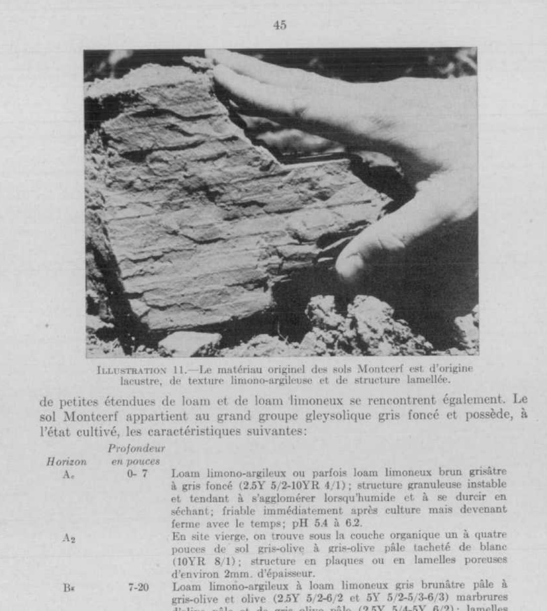
Illustration 11. — Le matériau originel des sols Monteerf est d'origine lacustre, de texture limono-argileuse et de structure lamellée.
de petites étendues de loam et de loam limoneux se rencontrent également. Le sol Monteerf appartient au grand groupe gleysolique gris foncé et possède, à l'état cultivé, les caractéristiques suivantes :
Horizon
Profondeur en pouces
Ae
0 - 7
Loam limono-argileux ou parfois loam limoneux brun grisâtre à gris foncé (2.5Y 5/2-10YR 4/1) ; structure granuleuse instable et tendant à s'agglomérer lorsqu'humide et à se durcir en séchant ; friable immédiatement après culture mais devenant ferme avec le temps; pH 5.4 à 6.2.
A2
En site vierge, on trouve sous la couche organique un à quatre pouces de sol gris-olive à gris-olive pâle tacheté de blanc (10YR 8/1) ; structure en plaques ou en lamelles poreuses d'environ 2mm. d'épaisseur.
Bg
7 - 20
Loam limono-argileux à loam limoneux gris brunâtre pâle à gris-olive et olive (2.5Y 5/2-6/2 et 5Y 5/2-5/3-6/3) marbrures d'olive pâle et de gris olive pâle (2.5Y 5/4-5Y 6/2) ; lamelles de 3 à 5 mm. d'épaisseur et agrégats cuboïdes; très ferme lorsqu'en place mais se brisant facilement sur le plan horizontal lorsque séparé de la masse; pénétration verticale de l'eau, de l'air et des racines empêchées par chaque lamelle formant barrière; pH 5.7 à 7.1
C
20+
Loam limon-argileux à argile limoneuse ou parfois à loam argileux gris-olive (5Y 5/2) avec marbrures olive pâle (2.5Y 5/4); structure lamellée s'opposant au mouvement de l'eau et des racines; lamelles de 2 à 8 mm. d'épaisseur et de couleur variable; très ferme; pH 6.6 à 7.1.
On observe certaines variations dans la texture des divers horizons du profil mais elles n'ont pas d'effet sur le comportement du sol cultivé et n'ont pas fait l'objet de séparations sur les cartes. Les variations du contenu en matière organique et de la structure du solum supérieur n'ont pas non plus motivé la création d'unités cartographiques séparées. Les principales variations se
rencontrent sur le terrain en pente, au pied des collines contenant beaucoup de calcaire cristallin. Ces étroites bandes de terrain, plus riches en matière organique, possédant une meilleure granulation et un sous-sol plus perméable, sont également plus productives que la moyenne des sols Montcerf.
Agriculture
Les sols Montcerf sont presque tous utilisés pour la grande culture. Ils ont une bonne fertilité mais sont difficiles à cultiver. Un drainage adéquat est nécessaire pour la production de bonnes récoltes; sur beaucoup de fermes, le système de drainage établi est inadéquat pour la plupart des cultures. A cause du manque de perméabilité du sol, presque toute l'eau de précipitation doit s'écouler en surface ou s'évaporer. Le labour en planches bombées améliore l'élimination de l'excès d'eau, mais il paraît impossible d'améliorer à la fois le drainage de surface et l'emmagasinage de l'eau sans corriger la structure du sous-sol. L'usage d'instruments capables de briser les stratifications du sous-sol jusqu'à environ 18 pouces augmenterait l'emmagasinage de l'eau utilisable et permettrait une plus profonde pénétration des racines.
Le bas pourcentage de matière organique dans les sols Montcerf favorise une mauvaise structure de la couche cultivée. Cette couche tend à revenir à une consistance dure et massive même après avoir été bien effritée par les travaux de culture. Les amendements organiques aideraient à corriger cette condition et à maintenir une structure granulaire.
Le chulage est nécessaire pour améliorer la réaction de ce sol acide et favoriser une meilleure croissance des cultures et plus spécialement des trèfles. La luzerne ne pousse pas bien sur ce terrain dont le sous-sol manque de drainage et d'aération.
Les améliorations de rendements obtenus par les engrais chimiques sont conditionnés par l'état de friabilité et de drainage du sol et par le climat. La condition physique du sol devrait être améliorée le plus possible avant d'investir considérablement dans les engrais chimiques.
Série Maniwaki (Mw)
Les sols Maniwaki ne couvrent que 4,518 acres et font partie de l'association caténaire Bouchette-Montcerf. Ces sols occupent des sites très mal drainés formant la transition entre les sols Montcerf et les dépressions organiques. Le très mauvais drainage est causé non seulement par la topographie en dépression mais aussi par l'imperméabilité du sous-sol. A l'état naturel, ces sols humides sont couverts de sapin, d'épinette, d'aune, de thuya (cèdre), de mélèze, d'orme et de frêne noir.
Le sol vierge Maniwaki, un gleysol tourbeux, est doté d'une couche superficielle de matière organique brute ayant une épaisseur de 6 à 10 pouces. Toutefois, la mise en culture modifie considérablement l'apparence du sol de surface, car les labours et autres pratiques culturales opèrent un mélange de matières minérales grises et de fine texture du sous-sol avec la couche organique qui subit aussi une importante contraction par suite du défrichement et du drainage artificiel. Les caractéristiques de ce loam limono-argileux cultivé sont données dans la description suivante :
Horizon
Profondeur en pouces
Ap
0-7
Loam limono-argileux brun grisâtre très foncé (2.5Y 3/2); moyenne structure granuleuse; friable; légèrement plastique lorsqu'humide; pH 6.0 à 6.3.
Bs7- 9Loam limono-argileux gris à gris foncé (5Y 5/1-4/1); agrégats cuboïdes sub-anguleux parmi des matériaux lamellés et massifs; légèrement plastique et collant lorsqu'humide; ferme lorsque sec; pH 6.4 à 6.8. (Cet horizon contient souvent de l'humus venu du haut).
Cg9-20Loam limono-argileux à argile limoneuse gris à gris-olive pâle (5Y 6/1-6/2); quelques marbrures de brun vif (7.5YR 5/5-5/8); structure et consistance comme dans le Bg; pH 6.6 à 6.9.
C20+Loam limono-argileux à argile limoneuse gris-olive à olive pâle (5Y 5/2-2.5Y 5/4); matériaux massifs et lamellés; légèrement plastique et collant; imperméable; pH 6.8 à 7.2.
Agriculture
Près de la moitié des sols Maniwaki sont utilisés pour la grande culture, plus particulièrement le foin et le pâturage. A cause du réchauffement lent et du mauvais drainage, le terrain est peu utilisé pour les grains. Les prairies et les pâturages sont souvent infestés de mauvaises herbes hydrophiles qui ne peuvent être éliminées que par un meilleur drainage. L'herbe à canari (phalaride) est le fourrage le mieux adapté aux conditions naturelles de drainage.
L'effet du chalandage et de l'application des engrais chimiques n'est pas connu. Le contenu en matière organique est apparemment adéquat mais la décomposition est lente à cause du manque de drainage et d'aération. Conséquemment, le fumier ne peut bénéficier autant au sol Maniwaki qu'aux sols bien drainés.
Série Baudette (Bd)
Les sols Baudette couvrent 1,797 acres, principalement au nord de Quyon. Ces sols se sont formés sur des dépôts limoneux recouvrant la plaine d'argile marine. Le terrain est plat à légèrement ondulé et possède un drainage imparfait. Les eaux de pluie sont presqu'entièrement absorbées par le dépôt de limon perméable mais ne peuvent s'infiltrer librement à cause de l'imperméabilité du substratum argileux.
Le profil varie en texture du loam, limoneux au loam limono-argileux mais contient aussi des couches de loam sableux très fin. L'épaisseur du dépôt de limon sur argile est de 2.5 à 4 pieds. La description suivante donne les caractéristiques en terrain cultivé de ce sol gleysolique gris foncé.
Horizon
Profondeur en pouces
Ac
0- 7
Loam limono-argileux à loam limoneux brun grisâtre; structure granuleuse; friable; pH 5.6 à 6.2.
Bg1
7-28
Loam limono-argileux à loam limoneux brun grisâtre; marbrures brunes et gris brunâtre pâle; généralement lamellé; souvent interstratifié de minces couches de loam sableux fin; friable et légèrement plastique; pH 5.8 à 6.4.
Bg2
28-40
Loam limono-argileux à loam limoneux, avec minces interstratifications de loam sableux très fin, gris brunâtre pâle avec marbrures de brun jaunâtre foncé; pH 5.8 à 6.4. (Cet horizon est parfois absent).
C
40+
Argile marine grise, très plastique et imperméable; pH 6.6 à 7.2.
Agriculture
Après avoir été améliorés par le drainage artificiel et le chalandage, les sols Baudette font une bonne terre agricole qui peut produire de hauts rendements de toutes les principales récoltes de grande culture. Comme pour les sols Ste-
Rosalie, la bonne gestion comprend le drainage artificiel, le chaulage, la fertilisation au phosphore et parfois, l'ameublement du sous-sol.
Série Pontiac (Pc, Pch, Pcl)
Les sols Pontiac occupent 33,317 acres dans Gatineau et 22,585 acres dans Pontiac. Se trouvant entre 350 et 550 pieds d'élévation, ils se sont formés sur les plus hauts dépôts argileux de la vallée de l'Outaouais et de la Gatineau, là où ces dépôts ont une surface de texture loameuse. Ces matériaux donnent aux sols Pontiac une variation de texture allant du loam au loam limoneux et au loam limono-argileux. La gradation continuelle dans la texture depuis l'argile jusqu'au loam superficiel indique une continuité de sédimentation mais sous des conditions très différentes. Les matériaux loameux de surface ont vraisemblablement été déposés dans des eaux peu profondes et agitées tandis que l'argile s'est sédimentée dans des eaux profondes et calmes. Une plus grande épaisseur de matériaux loameux à proximité des collines suggère qu'une partie du loam de surface a été tiré des tills environnants.
Les sols Pontiac sont bien drainés, sont pas pierreux et se trouvent sur des douces pentes unies et convexes. Leur solum est très perméable et peut absorber rapidement la précipitation normale de la saison de végétation. Lorsque le sol est gelé et imperméable, le ruissellement augmente et peut être cause d'érosion considérable (illustration 12) durant les pluies abondantes et lors de la fonte des neiges. La bonne distribution de l'eau dans le sol est favorisée par la gradation de texture entre la surface loameuse et le sous-sol argileux.
Les sols Pontiac et Dalhousie sont souvent réunis dans une même unité cartographique. De façon générale, les sols Pontiac ont une texture plus grossière que les Dalhousie. Les quelques boisés qui se rencontrent encore sur les sols Pontiac sont constitués d'érable rouge, d'érable à sucre, de bouleau blanc, de pin blanc, de sapin, de pruche, d'orme et de hêtre.
La série Pontiac comprend trois types dont le loam (Pcl), le loam argileux (Pch) et le loam limoneux à limono-argileux (Pc). Ces deux dernières classes texturales réunies sous une même unité (Pc) couvrent la très grande majorité des sols de la série dont la surface cultivée se compose de 20 à 30 pour-cent de sable, de 40 à 60 pour-cent de limon et d'environ 20 pour-cent d'argile. D'après les quelques sites vierges encore existants, il convient de classer les sols Pontiac soit parmi les profils bruns podzoliques soit parmi les podzols minimaux. La description suivante indique les caractéristiques du loam limoneux cultivé:
Horizon
Profondeur en pouces
Ae
0-8
Loam limoneux à limono-argileux brun grisâtre foncé à brun foncé; fine structure granuleuse; très friable et perméable; pH 5.1 à 6.0.
B2
8-12
Loam limoneux à limono-argileux brun à brun jaunâtre foncé (10YR 4/4-5/3 ou 7.5YR 4/4); fine structure granuleuse; très friable et perméable; couleur plus foncée dans la partie supérieure de l'horizon et gradation en couleur, texture et structure vers l'horizon sous-jacent; couleur olive (2.5Y-5Y 4/4) et faibles marbrures brunes souvent observées dans la zone de transition vers l'horizon inférieur; pH 5.1 à 6.2.
CD
12-24
Loam argileux à argile brun grisâtre (2.5 Y 5/2); structure cuboïde sub-anguleuse, modérément fine à moyenne; ferme et modérément perméable; pH 5.6 à 6.8.
D
24+
Argile gris-olive (5Y 5/2); structure cuboïde grossière à massive ou lamellée; légèrement perméable; pH 6.8 à 7.2.
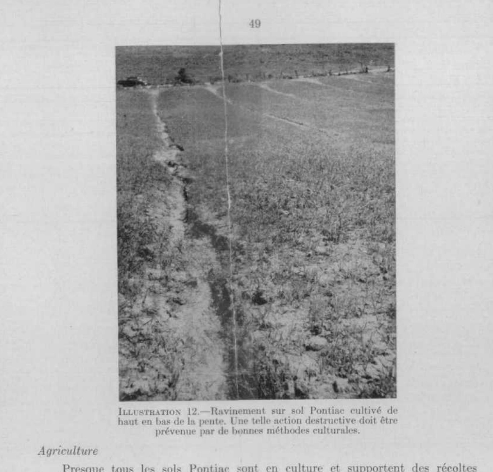
Illustration 12. — Ravinement sur sol Pontiac cultivé de haut en bas de la pente. Une telle action destructive doit être prévenue par de bonnes méthodes culturales.
Agriculture
Presque tous les sols Pontiac sont en culture et supportent des récoltes de grande culture et des fourrages pour les animaux laitiers. Le terrain est adapté à une grande variété d'usages. La fertilité naturelle qui est passable à bonne, peut encore être relevée. Le chaulage est nécessaire pour la plupart des cultures mais spécialement pour les légumineuses. De bonnes récoltes de luzerne et d'autres légumineuses sont possibles sur ce sol modérément bien aéré.
La forte teneur en limon dans le sol de surface rend le terrain très mou et inapte à supporter la machinerie très lourde ou le piétinement des animaux, durant la période humide du printemps. La surface du sol devient susceptible à l'érosion par l'eau lorsqu'elle est gelée ou pleinement saturée d'eau. Durant la saison de végétation, le danger d'érosion est faible si l'on a soin de ne pas disposer les cultures sarclées de haut en bas des pentes.
Le rendement des récoltes varie dans de larges limites selon le mode d'exploitation et l'usage de la chaux, du fumier et des engrais chimiques.
Série Chapeau (Cp)
De faibles étendues (738 acres) de sols Chapeau ont été cartographiées dans le nord de Gatineau et l'ouest de Pontiac. Ces sols, formés sur des argiles de nature généralement lamellée, ont une topographie ondulée favorisant un rapide ruissellement des eaux.
Presque tout le terrain est en culture. Dans les petites étendues encore à l'état vierge, le profil est coiffé de 1 à 2 pouces d'humus assez brut d'un gris ou d'un brun très foncé. Sous l'humus se trouve un horizon éluivé (A2) gris brunâtre de 2 à 5 pouces d'épaisseur qui à son tour repose sur une argile légèrement plus colorée et de texture légèrement plus lourde que dans l'horizon supérieur ou inférieur. Ces caractéristiques du Chapeau l'apparentent au sol gris forestier. Une description complète du profil cultivé fait suite :
Horizon
Profondeur en pouces
Ap
0-7
Argile limoneuse à argile, grisâtre à brun grisâtre foncé (2.5 Y 4/2-5/1); structures granuleuses et cuboïde sub-angulaire; très ferme à l'état sec et collante à l'état mouillé; pH 5.3 à 5.5.
B1
7-13
Argile à argile limoneuse, brun grisâtre (2.5Y 5/2); structure cuboïde sub-angulaire, moyenne à grossière; dure à l'état sec et plastique à l'état humide; pH 5.5 à 5.7.
B2
13-17
Argile brun grisâtre ou brun grisâtre foncé (10YR 4/2-5/2); moyenne structure cuboïde; très dure à l'état sec et plastique à l'état humide; pH 5.5 à 5.8.
B3
17-24
Argile brun grisâtre à brun grisâtre foncé (2.5Y 5/2-4/2); parfois lamellée; pH 5.8 à 6.2.
C
24+
Argile brun grisâtre à brun grisâtre pâle (2.5Y 5/2-6/2); parfois massive et de couleur uniforme et parfois lamellée avec des tons de pâle et de foncé parmi les lamelles; pH 6.8 à 7.2.
Agriculture
Les sols Chapeau servent à la grande culture et produisent des rendements passables lorsque les pluies sont modérées et bien distribuées, mais parfois les sécheresses limitent les récoltes.
La couche de sol cultivée est pauvre en matière organique et difficile à travailler. Il n'y a qu'une très étroite marge d'humidité du sol permettant à la fois de cultiver avec assez de facilité et de maintenir une bonne structure. Le taux d'augmentation des rendements dû à l'application de chaux et d'engrais chimiques ne nous est pas connu.
Série Dalhousie (D, Dh)
Les sols Dalhousie (illustration 13) couvrent 19,732 acres dans Gatineau et 18,573 dans Pontiac. Ils se sont formés sur des argiles déposées à des altitudes s'échelonnant entre 350 et 550 pieds et, généralement de composition plus grossière et moins uniforme que les argiles de plus bas niveaux.
Ces sols se rencontrent fréquemment entre les collines de till pierreux dans d'étroites vallées dont les côtés s'inclinent vers le centre. Une grande partie des eaux de ruissellement venant des collines doit traverser les sols Dalhousie pour atteindre les ruisseaux qui assurent le drainage naturel. Le terrain uni, en pente douce et le sol perméable, s'opposent au danger d'érosion. Le sol retient une forte quantité d'eau et possède un drainage imparfait à quelque peu mauvais.
La majorité des sols Dalhousie sont des loam argileux et sont indiqués sur la carte par le symbole D. On rencontre cependant des étendues où la surface du sol est une argile, représentée sur la carte par le symbole Dh partout où il a été possible d'en faire une cartographie séparée. Les profils du loam argileux et de l'argile sont semblables si ce n'est pour cette différence de texture du sol
de surface et ils appartiennent au groupe des sols gleysoliques gris foncé. La description suivante est celle du loam argileux cultivé.
Horizon
Profondeur en pouces
Ap
0-8
Loam argileux brun grisâtre très foncé (10YR 3/2); structure granuleuse; ferme, modérément plastique et collant à l'état humide; pH 5.3 à 6.3.
Bg
8-30
Argile limoneuse à argile, brun grisâtre foncé à gris-olive ou gris-olive foncé (2.5Y-5Y 4/2-5/2); structure cuboïde sub-angulaire fine et moyenne; fines marbrures à l'intérieur des agrégats, marbrures faibles ou absentes à l'extérieur des agrégats (les coupes apparaissent marbrées); fermes agrégats; plastique et collante à l'état humide; pH 6.2 à 7.0.
C
30+
Argile gris-olive à gris foncé (5Y 5/2-4/1); structure cuboïde assez bien développée ou parfois lamellée; plastique et collante à l'état humide; pH 6.4 à 7.4.
ILLUSTRATION 13.—Les sols Pontiac et Dalhousie, formés sur des sédiments loameux et argileux, occupent la vallée unie, à mi-distance, et les sols Gatineau couvrent les collines glaciaires.
Agriculture
Presque tous les sols Dalhousie sont cultivés et produisent des récoltes de grande culture: grain, foin, maïs à ensilage, racines fourragères et pâturage. Étant exempts de pierres et généralement faciles à drainer, ils sont excellents pour l'Agriculture. Leur haute capacité de rétention d'eau et leur structure granuleuse favorisent un excellent système radiculaire et permettent à ces sols de résister aux sécheresses mieux que tous les autres de la région.
Les sols Dalhousie sont parmi les producteurs pour les céréales, le foin mélangé et le pâturage. La luzerne pousse assez bien, mais il y aurait lieu d'en augmenter la longévité par le chaulage et le drainage. Le sol possède une bonne fertilité naturelle qu'il est facile de maintenir ou d'augmenter par des doses
modérées d'engrais chimiques complets, de fumier et de chaux. L'effet des fertilisants et des amendements est de longue durée car le sol retient bien les éléments qui lui sont ajoutés.
Série Brandon (B)
Les sols Brandon occupent 3,962 acres et se sont formés sur des dépôts argileux souvent lamellés. Leur drainage naturel est mauvais à cause d'une topographie plane ou légèrement déprimée et d'une percolation très lente des eaux à travers les matériaux de fine texture.
La série ne comprend qu'un seul type, l'argile, et appartient aux sols gleysoliques gris foncé. La description suivante donne les caractéristiques du profil de sol cultivé.
Horizon
Profondeur en pouces
Ae
0-7
Argile à argile limoneuse brun grisâtre très foncé (2.5Y-10YR 3/2); structure cuboïde et granulaire, agrégats moyens et fermes; pH 5.4 à 6.4.
Bg1
7-12
Argile à argile limoneuse gris brunâtre pâle (2.5Y 6/2) quelque peu marbrée; structure cuboïde ou en pseudo-plaques; pH 5.4 à 6.4.
Bg2
12-30
Argile grise à gris-olive (5Y 4/2-5/1); marbrures brun jaunâtre foncé (10YR 4/4); parfois lamellée et parfois dotée d'une structure cuboïde sub-anguleuse assez bien formée; plastique et collante à l'état humide; pH 5.6 à 6.6.
C
30+
Argile grise (5Y 5/1) généralement lamellée; lamelles d'environ 4 mm. d'épaisseur et souvent séparées par du limon; pH 6.8 à 7.2.
Agriculture
Tous les sols Brandon sont cultivés et servent aux pâturages et aux récoltes de grande culture. Ils ont une très grande fertilité, une topographie unie et sont exempts de pierres.
Le chaulage apporte généralement une importante amélioration. Le succès des cultures dépend largement de l'efficacité du drainage artificiel. L'élimination des eaux de surplus est difficile à cause de la basse position du terrain qui reçoit tout le drainage des hautes terres environnantes.
Les sols Brandon ne conviennent pas bien aux plantes à racines profondes; la luzerne n'est cultivée qu'en mélange avec le trèfle; elle a tendance à disparaître graduellement et doit être souvent réensemencée.
Série Rideau (Ri, Rih)
Les sols Rideau occupent 6,676 acres dans les deux comtés, à des altitudes de 150 à 300 pieds. On les trouve au nord de Hull et près de Luskville, sur des terrains légèrement ondulés ou presque plats et découpés par des ravins. Ces sols se sont formés sur d'épais dépôts marins d'argile généralement uniforme et dépourvue de varves ou lamelles.
Dans les sols Rideau, les conditions d'humidité sont plutôt complexes à cause de la haute capacité de rétention d'eau du sol, de la lenteur des échanges et de phénomènes d'expansion et de contradiction qui affectent le taux d'infiltration. Après la fonte des neiges il y a généralement excès d'humidité, l'expansion de l'argile est à son maximum et l'aération est réduite au minimum. Dans cet état, le sol ne peut plus absorber d'eau et toute la pluie qui y tombe doit ruisseler
à la surface et peut causer de l'érosion. Une fois mouillée, le sol ne perd son humidité que très lentement à cause de la mauvaise structure et du manque d'aération interne. Cette perte d'humidité se fait surtout par évaporation. En séchant, le sol se contracte, se fendille et se durcit. Le sol séché n'absorbe l'eau que très lentement et souvent la pluie des brèves averses d'été s'évapore et ruisselle au loin sans atteindre les plantes. Ceci explique pourquoi les sols Rideau souffrent de sécheresse alors que d'autres sols environnants sont adéquatement pourvus d'humidité. Sur les sols Rideau on constate fréquemment de l'érosion en plaques, en rigolets et en ravins.
La série Rideau appartient aux sols gleysoliques gris foncé. Le type d'argile lourde (Rih) n'occupe qu'une faible superficie. Le type principal est l'argile (Ri) dont le profil cultivé se décrit comme suit :
Horizon
Profondeur en pouces
Ac
0-7
Argile brun grisâtre (10YR-2.5Y 5/2); structure granuleuse et cuboïde sub-angulaire; ferme à dure sous les conditions moyennes d'humidité; plastique et collante lorsque très humide; tendant à se former en mottes dures; modérément perméable et aérée sous les conditions d'humidité moyennes; pH 5.5 à 6.2.
A2
7-9
Argile gris-olive à gris brunâtre pâle (5Y 5/2-2.5Y 6/2); faibles marbrures; pH 5.5 à 6.0.
Bg
9-24
Argile gris-olive à gris brunâtre (5Y-2.5Y 5/2); faibles marbrures; très mal aérée, peu perméable, plastique et collante à l'état humide; modérément aérée et perméable à l'état sec ou peu humide; structure cuboïde; pH 5.8 à 6.4.
C
24+
Argile gris-olive à grise (5Y 4/2-5/1); structure massive à l'état humide; rétrécissement important au séchage et formation de larges cubes; pH 6.6 à 7.3.
Agriculture
Les sols Rideau sont tous en culture. Ils conviennent bien aux foin, aux grains et aux pâturages, mais non aux vergers, aux pommes de terre et au jardinage. Le sol de surface contient peu d'humus et pour cette raison il est plus difficile à cultiver que le Ste-Rosalie ou le Laplaine.
Bien que difficile à établir, la luzerne rend bien lorsque le sol a été chaulé, aeré et fertilisé. Une fois établie cette plante résiste aux sécheresses de l'été, se nourrit des réserves minérales inutilisées du sous-sol argileux et demande peu de fertilisation additionnelle.
Pour la plupart des récoltes, c'est la chaux, le fumier et le phosphore qui donnent les meilleures augmentations de rendement. Lorsque le fumier n'est pas disponible il faut appliquer de l'azote pour la plupart des cultures à l'exception des luzernières bien établies.
La bonne préparation du terrain pour les semis demande un soin particulier. Lorsque le terrain est travaillé à l'état trop humide, il se forme des grosses mottes dures. D'autre part, quand le terrain est trop sec les mottes résistent à la fragmentation et les travaux de culture demandent une traction considérable.
Il faut prévenir le ravinement qui tend à se produire le long des rigolets et des fossés. Si on tolère un début d'érosion le long des berges où les sols Rideau sont situés, il sera très difficile de l'arrêter. Pour prévenir le ravinement, il faut éviter d'utiliser les pentes raides pour les récoltes cultivées, d'y faire
déboucher directement les rigoles d'égouttement et, maintenir engazonnés les rebords des champs surplombant des escarpements.
Série Ste-Rosalie (R, Rl, Rh)
Les sols Ste-Rosalie (illustration 14) se rencontrent près de Hull, Luskville et Quyon et couvrent 13,779 acres, à des altitudes allant de 150 à 350 pieds. Le terrain est plat et dépourvu de pierres. Le profil s'est formé sur d'épais dépôts marins d'argile grise. A cause du manque de pente le ruissellement est très lent. L'argile massive ne permet qu'une percolation interne excessivement lente. Il en résulte un mauvais drainage. Par ailleurs, la topographie plane favorise la pénétration de la pluie dans le sol et contribue ainsi à une excellente utilisation de l'humidité durant les périodes de sécheresse. Au point de vue de l'économie de l'eau du sol, les Ste-Rosalie ont donc un grand avantage sur les Rideau.
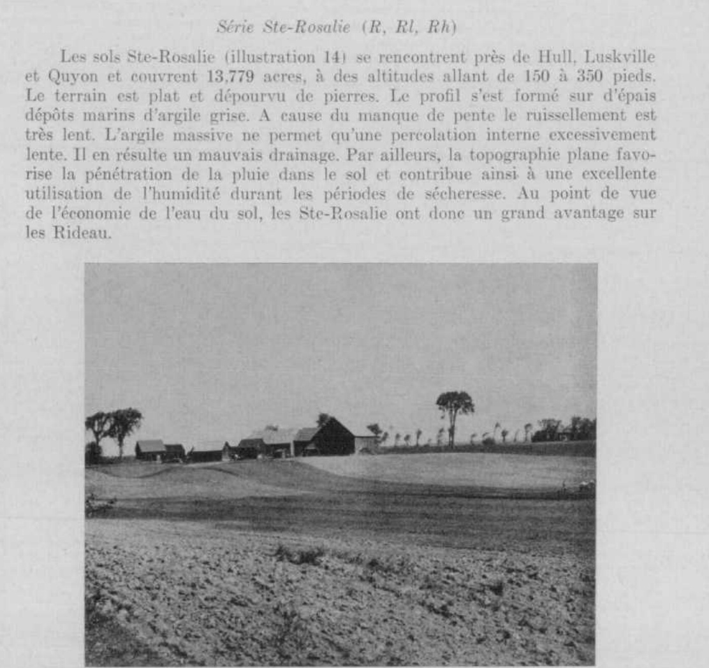
ILLUSTRATION 14.—Les ondulations bien drainées sont occupées par les sols Pontiac et les terrains bas et mal drainés, par les sols Ste-Rosalie.
La série Ste-Rosalie comprend les trois types suivants: l'argile lourde (Rh) que l'on trouve sur la plus basse terrace formée par érosion, l'argile (R) et le loam argileux (Rl) qui se trouvent surtout aux niveaux élevés où l'érosion fluviale n'a pas agi. La seule différence essentielle entre ces trois types réside dans la texture de la couche arable. Cependant, il convient de noter que les marbrures où la couleur rouille du sous-sol sont plus intenses dans le loam argileux que dans l'argile, et dans l'argile plus que dans l'argile lourde.
A l'ouest de Eardley, on trouve de l'argile brun-rougeâtre mélangée à l'argile grise du sol Ste-Rosalie. La réaction de cette argile lourde est plus élevée que la moyenne pour la série et la structure y est aussi mieux développée. Ces caractéristiques suggèrent que ces endroits ont été le théâtre d'éboulis de terrains qui auraient par la suite été nivelés par les courants de la rivière Outaouais.
La série Ste-Rosalie appartient aux sols gleysoliques gris foncé. La description suivante est celle d'un type de sol cultivé: l'argile Ste-Rosalie.
Horizon
Profondeur en pouces
Ae
0- 7
Argile brun grisâtre très foncé (10YR 3/2); structure moyenne, granuleuse; ferme à l'état sec, modérément plastique et collante à l'état humide; perméable et aérée; pH 5.5 à 6.0.
Ap2
7- 8
Argile brun grisâtre foncé (2.5Y 4/2); légèrement marbrée de brun jaunâtre (10YR 5/4); large structure cuboïde subangulaire; pH 5.5 à 6.0.
Bg1
8-18
Argile brune (rouillée) (7.5YR 4/4); marbrures moyennes et distinctes de brun grisâtre (2.5Y 5/2); fins agrégats cuboïdes, difficiles à séparer; plastique et collante à l'état humide; normalement mal aérée; pH 5.5 à 6.3.
Bg2
18-24
Argile grise (5Y 5/1); larges marbrures distinctes de brun jaunâtre foncé (10YR 4/4); agrégats cuboïdes fins à moyens se séparant assez aisément; très plastique et très collante à l'état humide; pH 6.5 à 6.8.
C
24+
Argile grise, colorée de brun grisâtre foncé (2.5Y 4/2) le long des racines décomposées; structure massive ou cuboïde grossière; très plastique et très collante; pH 6.7 à 7.3.
Agriculture
Les sols Ste-Rosalie sont tous en culture et employés pour les grandes cultures et les pâturages. Les caractéristiques les plus désirables de ce terrain sont la topographie plane, l'absence de toute pierre, la présence d'un horizon superficiel humifère, bien granulé, à surface organique, la facilité de cultiver et de maintenir une bonne structure et enfin la haute fertilité naturelle. Cependant, la couche rouillée en-dessous de la surface organique, possède une structure massive qui empêche le libre passage de l'eau, de l'air et des racines.
C'est le sol Ste-Rosalie qui, dans le passé, a largement servi aux récoltes-argent de grain et de foin. Tout en résistant à maints abus, le sol a parfois perdu de sa fertilité au point de réduire les rendements à un niveau non-profitable. Heureusement, la fertilité du sous-sol a été à peine attaquée par les plantes à racines superficielles cultivées dans le passé. Cette richesse pourra être rendue accessible aux plantes à racines profondes par un meilleur drainage artificiel, par le chaulage et au besoin par le défoncement du sous-sol en vue de faciliter l'aération.
Cette abondance d'éléments nutritifs dans le sous-sol permet d'augmenter les rendements des récoltes simplement en approfondissant la zone où les plantes s'alimentent. Le moyen le plus efficace pour atteindre cet objectif est le drainage souterrain, toutefois très coûteux. Comme solution de rechange, le labour en planches bombées a amélioré les drainages externe et interne au point de permettre la culture de la luzerne. L'aération du sous-sol a été parfois accomplie en brisant la couche rouillée alors que le terrain se trouvait dans des conditions appropriées d'humidité. Des données supplémentaires concernant cette pratique sont toutefois nécessaires.
La chaux aide à corriger les conditions physiques, à neutraliser l'acidité de la couche arable et suscite une importante augmentation des rendements. Après le drainage, l'aération du sous-sol et le chaulage, le phosphore constitue le plus avantageux apport aux sols Ste-Rosalie. Le faible contenu en phosphore assimilable du sol Ste-Rosalie est dû, comme dans les autres sols de la région, au prélèvement continu fait par les récoltes et à une fertilisation inadéquate.
Si l'on parvient à aérer le sol Ste-Rosalie et à y faire pousser en rotation de bonnes récoltes de luzerne, il n'y aura plus de problèmes de fertilité, la luzerne puisant sa nourriture dans le riche sous-sol.
Série Laplaine (Lp)
Le sol Laplaine forme le membre mal drainé de l'association Rideau et Ste-Rosalie. Il couvre 998 acres, principalement près de Hull et de Luskville.
Le profil formé d'argile marine grise, s'est constitué dans des conditions de drainage stagnant sur un terrain légèrement déprimé et complètement dépourvu de pierres. La surface est fortement organique : parfois le sol Laplaine voisine d'épais dépôts organiques. La végétation naturelle se compose surtout de thuyas (cèdres), de frênes et d'ormes.
La série Laplaine appartient aux sols gleysoliques gris foncé, à surface tourbeuse. Dans les conditions moyennes, le sol cultivé a les caractéristiques suivantes :
Horizon
Profondeur en pouces
Ae
0-8
Argile noire (5YR 2/1) de haute teneur organique; agrégats granuleux et cuboïdes sub-anguleux; un peu ferme sous humidité moyenne; légèrement plastique et collante à l'état très humide; perméable; pH 5.8 à 6.7.
Bg
8-12
Argile lourde, grise (5Y 5/1); fines marbrures brun jaunâtre (2.5Y 5/4); faible structure cuboïde grossière; très dure à l'état sec, très plastique et collante à l'état très humide; mal aérée et peu perméable; pH 6.2 à 6.8.
C
12+
Argile grise et gris-olive (5Y 5/1-5/2); faibles marbrures olive (5Y 5/3); structure cuboïde grossière à la partie supérieure passant à une structure massive en profondeur; non aérée; collante et plastique; présence occasionnelle de carbonates libres; pH 7.0 à 7.6.
Agriculture
Parmi les sols argileux de la plaine, les sols Laplaine furent les plus récents à être exploités, car leur mise en culture a nécessité d'importants travaux de drainage. Leur grande réserve de fertilité est due à leur haute teneur en matière organique et à la faible éluviation subie. Cependant, cette fertilité ne peut se traduire en bons rendements que si l'on réalise un bon drainage et une bonne aération du sous-sol. Il est bon d'amener le sous-sol minéral à se mélanger à la matière organique de surface. Cette opération améliore les propriétés physiques et chimiques de la surface. À l'état naturel, la surface est riche en azote total mais pauvre en phosphore et en potassium. Ce déséquilibre cause la maturité tardive et la verse des céréales. Le fumier, même à doses massives, ne peut rétablir l'équilibre entre ces trois principaux éléments nutritifs; il faut recourir aux fertilisants chimiques riches en phosphore et en potassium. Le chaulage peut ou non être nécessaire selon la réaction variée de la surface cultivée.
Les sols Laplaine sont utilisés pour les pâturages et les récoltes de grande culture. Le maïs à ensilage y est rarement cultivé et la fléole (mil) et autres herbes conviennent mieux que les céréales et les légumineuses.
Sols sur des sédiments sableux
Série Morin (Mo, Moc, Mol)
Les sols Morin (Illustration 15) occupent 40,710 acres dans le comté de Gatineau et 54,942 acres dans le comté de Pontiac. On les rencontre à des élévations de 400 à 900 pieds, sur du terrain uni ou légèrement ondulé. Leur matériau originel est le sable moyen ou grossier du fond des vallées des Laurentides ou de la bordure septentrionale de la vallée de l'Outaouais. Ce sable est dérivé des assises précambriennes de nature quartzitique, gneissique et granitique. On y trouve ni caillou ni boulder, mais parfois une faible proportion de gravier. La fraction sable comprend généralement 50 à 70 pour cent de particules grossières et moyennes. Le drainage excessif du sol résulte de la perméabilité de ce matériau originel sableux et de son épaisseur qui dépasse souvent 10 pieds.
ILLUSTRATION 15. — Cette région du lac Ireland comprend les sols suivants : les sols Mont-Rolland et Piedmont à l'avant plan; le sol Pontiac sur les pentes; le sol Morin, dans la vallée, avec des dépressions marécageuses; le sol Gatineau sur les collines de l'arrière plan.
Les sites boisés sont couverts surtout de pin blanc, de pin rouge, d'épinette blanche, de sapin et de pruche, mais on y voit aussi le bouleau blanc, le bouleau jaune et l'érable à sucre.
Les trois types cartographiés dans la série Morin sont le sable (Mo), le sable grossier (Moc) et le sable loameux (Mol). Ces différences de texture du sol de surface n'affectent en rien l'apparence du profil. La série Morin appartient au groupe des podzols. Les caractéristiques du profil sont indiquées dans la description suivante du sable loameux, à l'état cultivé.
Horizon
Profondeur en pouces
Description morphologique et analytique
Ap
0 - 6
Sable loameux brun à brun foncé (10YR 4/3 7.5YR 3/2); structure monogranulaire et fins granules; lâche; très perméable; pH 5.0 à 5.3.
$\text{A}_2$
6- 8
Restant de la couche grise éluviée.
$\text{B}_{21}$
8-18
Sable brun-vif à rouge jaunâtre (7.5YR 5/8-5YR 4/8) ; avec parfois un peu de gravier distribué à travers tout l'horizon ; structure monogranulaire ; très lâche, très ouvert et très perméable ; pH 5.2 à 5.5.
$\text{B}_{22}$
18-30
Sable brun jaunâtre (10YR 5/5-5/8), avec parfois un peu de gravier dispersé à travers l'horizon ; structure monogranulaire ; très lâche, très ouvert et très perméable ; pH 5.4 à 5.6.
$\text{B}_3$
30-45
Sable jaune brunâtre (10YR 5/6-5/8) ; autres caractéristiques comme dans l'horizon supérieur.
$\text{C}$
45+
Sable moyen à grossier jaune pâle (10YR 7/4-8/4) avec ou sans lits de gravier ; très perméable ; pH 5.6 à 6.0.
En forêt, l'horizon $\text{A}_2$ est coiffé d'une litière organique de 4 à 6 pouces d'épaisseur.
Agriculture
Sur les fermes où de meilleurs sols étaient disponibles, les sables Morin sont généralement demeurés boisés. Là où ils constituaient les seuls terrains dépourvus de pierres, bien drainés et unis, des étendues considérables ont été déboisés. Certaines de ces étendues ont été fertilisées pour la culture de la pomme de terre ; la pratique de la grande culture y a été une faillite complète.
La culture de la pomme de terre exige un chaulage judicieux, basé sur l'analyse du sol, des applications de fumier et parfois aussi l'irrigation. En général, ce n'est qu'en culture intensive qu'on peut maintenir ces champs qui autrement ne peuvent produire des récoltes profitables.
Série Déligny (De)
Les sols Déligny couvrent 2,528 acres et se rencontrent surtout près de Bristol Ridge dans le comté de Pontiac. Leur matériau originel est le même que celui des sols Morin, mais leur drainage est imparfait. Les sols Déligny sont excessivement perméables et sont composés de sable moyen à grossier, contenant parfois une faible proportion de gravier. Le drainage imparfait est dû à une nappe phréatique élevée, laquelle résulte de la faible épaisseur de sable sur des matériaux imperméables comme l'argile et le roc. Le terrain est presque plat. Les sols Déligny ont surtout été cartographiés en complexes avec les sols Morin. Dans l'association naturelle formée par les deux sols, le Déligny occupe d'étroites bandes légèrement en dépression parmi le Morin qui se situe sur les ondulations bien drainées.
Les sols Déligny appartiennent au groupe de podzols à gley. En forêt, le profil comprend une couche organique d'environ 3 pouces d'épaisseur surmontant un horizon éluvié ($\text{A}_2$) de couleur grisâtre et d'environ 4 pouces d'épaisseur qui repose sur l'horizon $\text{B}_{2\text{g}}$ de la description suivante du profil cultivé.
Horizon
Profondeur en pouces
$\text{A}_c$
0 - 6
Sable à sable loameux noir (2.5Y 2/0), riche en matière organique; structure monogranulaire; très perméable; pH 5.0 à 5.4.
$\text{A}_2$
6 - 8
Sable éluvié brun grisâtre (10YR 5/2), formant des plaques parmi du matériel de même nature que celui décrit plus bas (en $\text{B}_{2\text{g}}$); pH 5.0 à 5.4.
$\text{B}_{2\text{g}}$
8-24
Sable grossier et sable moyen brun jaunâtre (10YR 5/4), contenant une faible proportion de gravier; marbrures gris brunâtre; structure monogranulaire; très perméable; pH 5.4 à 5.8.
Cg24+
Sable grossier et sable moyen olive pâle (2.5Y 5/4), avec un peu de gravier; structure monogranulaire; très perméable mais manquant d'aération parce que saturé d'eau presque continuellement; pH 5.4 à 5.8.
Agriculture
Les sols Déligny sont partiellement en culture et partiellement boisés. Ils ont une faible fertilité naturelle et doivent être chaulés et fertilisés avec des engrais complets. Ce sont des sols frois contenant un excès d'eau durant une partie de la saison de végétation, surtout durant le printemps. Conséquemment, ils ne peuvent être ensemencés tôt et la pousse printanière débute lentement.
La nappe d'eau peut être abaissée par le drainage artificiel mais cette opération comporte le risque de mettre l'eau hors d'atteinte des plantes.
Série Ripon (Rn)
Les sols Ripon occupent 8,595 acres dans Gatineau et 4,122 acres dans Pontiac. On les trouve généralement dans les vallées, le long des ruisseaux, sur un terrain plat ou légèrement ondulé. Le matériau originel est un sable loameux, le plus souvent de 4 à 8 pieds d'épaisseur, reposant sur des matériaux de faible porosité comme le limon, l'argile ou des stratifications de sable fin, d'argile et de limon. La fraction sable comprend des proportions à peu près égales de sable fin à très fin et de sable moyen à grossier. Ces matériaux sont poreux, aérés et bien drainés.
La série Ripon appartient aux podzols et ne comporte qu'un seul type, le sable loameux (Rn), dont la description à l'état cultivé est donnée ci-après.
Horizon
Profondeur en pouces
Ae
0-8
Sable loameux brun grisâtre foncé à brun foncé (10YR 4/2-5/3); très fine structure granuleuse parmi les grains de sable; très friable et très perméable; pH 5.4 à 5.6.
B21
8-14
Sable loameux et sable brun jaunâtre foncé à brun; structure monogranulaire; lâche, ouvert et aéré; pH 5.4 à 5.8.
B22
14-24
Sable grossier à très fin, brun jaunâtre pâle à brun pâle ou olive pâle (2.5Y 6/4-5/4); lâche, ouvert et aéré; Ph 5.4 à 5.8.
B3
24-38
Sable et sable loameux olive pâle à olive (2.5Y-4/4); avec plaques et bandes de matériel fin; consistance variant de lâche à très ferme; faibles marbrures; modérément perméable; pH 5.6 à 5.8.
C
38+
Stratifications de sable, de limon et d'argile; grises à gris pâle (10YR 4/1-7/2); l'argile est parfois assez continue et massive au lieu d'être stratifiée; faible perméabilité; pH 5.6 à 6.2.
En forêt, la surface du sol est formée d'une couche organique de 2 à 3 pouces d'épaisseur sous laquelle se trouve un horizon minéral grisâtre et éluivé mesurant 2 à 3 pouces et reposant sur l'horizon B21 décrit plus haut.
Agriculture
La plupart des sols Ripon ont été déboisés et sont maintenant utilisés pour la culture générale et certaines cultures spéciales comme les pommes de terre. Parmi les sols très sableux, ils sont les plus productifs. Ceci paraît être dû au bon drainage comme à la profonde aération qui permettent le développement des racines en profondeur, et à un faible mouvement d'eau capillaire qui s'élève jusqu'au sous-sol pour y maintenir une légère humidité.
Les cultures tirent bon profit de la chaux, du fumier et des engrais complets. Le terrain chaulé et fertilisé convient bien aux cultures sarclées en rotation avec les légumineuses; les herbes à racines superficielles y sont par contre à déconseiller. Les semences, surtout les semences de céréales, devraient être faites le plus tôt possible au printemps pour que les plantes puissent profiter des conditions d'humidité dont jouissent ces terrains hâtifs au début de la saison de végétation.
Les rendements varient dans de larges limites; ceux des champs non chaulés et non fertilisés sont pauvres, mais une bonne gestion permet de produire des rendements satisfaisants.
Série Ivry (I, If)
Les sols Ivry (Illustration 16) couvrent 38,357 acres dans le comté de Gatineau et 41,465 acres dans le comté de Pontiac. Ils se rencontrent sur du terrain ondulé à vallonné, à des altitudes de 400 à 800 pieds. Le matériau originel est un sable fin à très fin, exempt de pierres, qui, en maints endroits, a été accumulé en dunes par l'action des vents. L'épaisseur du dépôt sableux excède souvent vingt pieds. La fraction fine et très fine du sable représente généralement 70 à 80 pour cent de tout le sol. Ce matériau originel est parfois de composition assez uniforme mais plus souvent il contient de minces couches de limon alternant avec des couches de sable très fin. Le drainage excessif du sol résulte de la porosité des matériaux sableux qui permettent une assez rapide percolation des eaux aussi bien dans le profil qu'à travers le matériau originel.
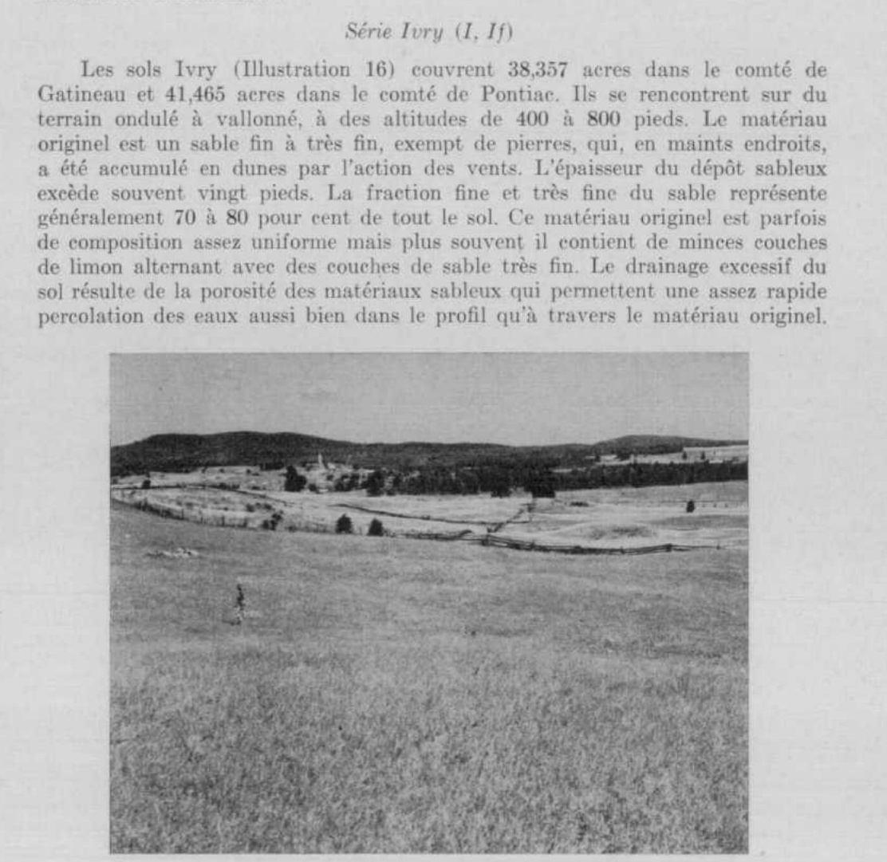
Illustration 16.—Près de Messines, les ondulations excessivement drainées sont couvertes par les sols Ivry et les sols Bevin occupent les dépressions imparfaitement drainées.
La végétation forestière est surtout composée de pin blanc, de pin rouge, d'épinette blanche, de sapin, de tremble, de bouleau blanc, de bouleau jaune (merisier), d'érable à sucre et d'érable rouge.
La série Ivry comprend deux types; le sable fin (I) et le sable très fin et loameux (If). Les endroits sérieusement affectés par l'érosion éolienne ont été indiqués comme phase séparée (Ie). Ces sites érodés comprennent, en plus des dunes de sable, des profils tronqués et des profils enterrés.
En terrain cultivé, la surface du sol est un sable fin à très fin, brun foncé à brun grisâtre foncé et le sous-sol est un sable fin brun jaunâtre. La description suivante représente le profil vierge de podzol du sable fin (I) Ivry, le type le plus important de la série.
Horizon
Profondeur en pouces
Description
A0
1½- 0
Humus brut brun grisâtre très foncé à brun très foncé (10YR 3/2-2/1); très friable et perméable; pH 4.5 à 5.0
A2
0- 1
Sable très fin éluivé, gris rosé à gris brunâtre pâle (7.5YR-10YR 6/2); friable et perméable; pH 5.0 à 5.2.
B21
1- 6
Sable fin brun jaunâtre à brun foncé; structure monogranulaire; ortstein très peu fréquent; très poreux et perméable; pH 5.2 à 5.6.
B22
6-12
Sable fin, brun vif (7.5 5/6-5/8); structure monogranulaire; lâche et perméable; pH 5.4 à 5.6.
B3
12-18
Sable fin brun jaunâtre à jaune pâle (10YR 5/6-5Y 7/4); autres propriétés comme dans l'horizon B22.
C1
18-30
Sable fin gris brunâtre pâle (2.5Y 6/2); bien tassé; perméable; pH 5.4 à 5.8.
C2
30+
Sable fin et sable très fin, olive pâle à gris brunâtre pâle (2.5Y 5/4-6/2); parfois avec minces couches horizontales de texture loameuse ou limoneuse; fermement tassé; perméable; pH 5.6 à 6.2 dans la partie supérieure du matériau originel.
Cette description s'applique aussi au sable loameux très fin à l'exception de celui d'une texture plus fine dans les 6 à 10 premiers pouces de la surface.
Agriculture
Une grande proportion des sols Ivry ont été mis en culture et sont maintenant utilisés pour la culture générale. Cependant, le peu de fertilité et l'aridité du terrain n'ont permis que de faibles rendements. Une culture intensive, faisant usage d'irrigation et d'assez larges quantités d'engrais, aurait plus de chances de succès.
Les sols Ivry se réchauffent rapidement au printemps et pourraient être préparés et semés beaucoup plus tôt qu'ils ne le sont généralement. Ceci permettrait aux plantes d'utiliser l'humidité disponible au début de la saison de végétation. En certains endroits, des cultures spéciales comme la pomme de terre ont été réussies. Le terrain a besoin d'être chaulé pour corriger l'acidité naturelle et pour fournir le calcium nécessaire aux plantes. Dans une rotation incluant les pommes de terre, le chaulage se fait après la récolte des tubercules. En plus du chaulage et de la fertilisation, le sol doit recevoir une protection adéquate contre l'érosion éolienne, particulièrement dans les champs de grande étendue. Pour réduire la vitesse du vent il faut planter des brise-vent le long des champs. Les superficies les plus susceptibles à l'érosion ne doivent pas être mises en culture ou doivent être reboisées; la forêt qui couvre une grande partie des sols Ivry constitue probablement la meilleure récolte qu'on puisse tirer de ces sols à moins d'y faire une bonne culture intensive.
Série Bevin (Be, Bel)
Les sols Bevin occupent 8,640 acres dans Gatineau et 5,785 acres dans Pontiac, sur terrain plat ou en dépression. Comme les sols Ivry, ils se sont formés sur
du sable fin. Le mauvais drainage des sols Bevin est causé par le haut niveau de la nappe d'eau souterraine qui se maintient à quelques pieds de la surface. Ce haut niveau d'eau est maintenu soit par le voisinage immédiat d'un cours d'eau ou d'un lac, soit par une couche imperméable de roc ou de matériel non consolidé à quelques pieds sous la surface du sol.
La végétation forestière se compose surtout d'épinette, de sapin, de thuya (cèdre), de mélèze et de quelques feuillus dont l'érable rouge et l'orme.
La série appartient au groupe de podzols à gley et comprend le loam sableux (Bel) et le sable à sable loameux (Be). Le profil cultivé de ce dernier type possède les caractéristiques suivantes :
Horizon
Profondeur en pouces
Ae
0-6
Sable loameux ou sable gris très foncé (5YR 3/1); fins granules parmi les grains de sable; très perméable; pH 5.0 à 5.4.
A2
6-7
Sable fin loameux, gris; reliquat d'une couche ayant 2 à 4 pouces d'épaisseur en sites naturels.
B21
7-16
Sable ou sable loameux brun vif à brun rougeâtre (7.5YR 5/6-5YR 5/4); marbrures brun jaunâtre (10YR 5/8) et brun grisâtre (10YR 5/2); très perméable, mais imparfaitement aéré lorsque saturé d'eau; pH 5.3 à 5.8.
B22
16-20
Sable et sable loameux avec marbrures de brun grisâtre, brun jaunâtre foncé et rouge jaunâtre (10YR 6/2-4/4, 2.5YR 5/2, 5YR 4/8); perméable; non aéré la plupart du temps; pH 5.4 à 5.8.
C
20+
Matériaux marbrés, gris olive et olive, (5Y 5/2-5/3) formés de sable uniforme ou de stratifications de sable de limon et d'argile; faiblement perméable; saturé d'eau de façon permanente; pH 5.6 à 6.0.
Agriculture
La plupart des sols Bevin ont été laissés à l'état boisé, mais certaines superficies sont utilisées pour la grande culture. Les rendements, passables à pauvres, peuvent être améliorés par un drainage artificiel adéquat, par le chalage et l'usage du fumier et des engrais chimiques complets.
Les sols Bevin sont tardifs et ne conviennent pas aux cultures qui exigent une longue saison de végétation. Les légumineuses ne poussent pas bien si l'on ne diminue pas l'acidité et n'améliore pas de beaucoup le drainage. La maturité des grains peut être compromise si le drainage n'est pas amélioré. Le rendement et la qualité des récoltes de culture sarclées et de grande culture dépendent beaucoup de l'efficacité du drainage artificiel, d'une fertilisation et d'un chaulage adéquats. En général, les meilleurs rendements sont obtenus durant les années sèches et les moins bons durant les années humides.
Série Guindon (Gu)
Les sols Guindon (Illustration 17) couvrent 16,556 acres et sont distribués à peu près également entre les comtés Gatineau et Pontiac, à des élévations variant entre 500 et 900 pieds. Ces sols se trouvent sur des terrains en pente ou légèrement vallonnés. Le profil s'est formé dans des matériaux sableux recouvrant le till ou le roc des collines des Laurentides sur une épaisseur de 2 à 5 pieds. La superposition de ces matériaux sableux sur les matériaux glaciaires a adouci le micro-relief mais n'a pas fait disparaître complètement les boulders et les affleurements rocheux. En conséquence, les sols Guindon ne sont pas complètement exempts de pierres comme le sont les sols Ivry, mais ils
sont beaucoup moins rocheux que les sols de till, Gatineau ou Ste-Agathe. On ne voit généralement pas de pierres libres à la surface des sols Guindon, cependant les gros boulders du till sous-adjacent émergent à travers le mince dépôt sableux.
Le drainage naturel est bon et le solum est très perméable. Toutefois, le mouvement vertical de l'eau est retardé par le till ou le roc; c'est pourquoi le sous-sol est marqué de marbrures de gley le long des pentes recevant les eaux d'infiltration de terrains plus élevés.
La série Guindon appartient aux podzols. En terrain cultivé, la surface est un sable limoneux brun foncé. A l'état naturel, le profil possède les caractéristiques suivantes :
Horizon
Profondeur en pouces
A0
4-0
Matière organique noire (10YR 2/1), humus du type brut; très absorbant et très perméable; pH 3.8 à 4.2.
Sable rouge jaunâtre (5YR 4/6-5/6); structure monogranulaire; très perméable; pH 4.8 à 5.2.
B22
26-36
Sable loameux ou sable brun vif à brun jaunâtre (7.5YR 5/6, 10YR 5/4-5/6), avec faibles marbrures.
D
36+
Till rocheux, gris brunâtre pâle.
ILLUSTRATION 17.—Le terrain Lakefield occupe les collines rocheuses au-delà du lac entouré des sols sableux des séries Guindon, Ivry et Morin.
Agriculture
Étant moins pierreux que les sols de till environnants, les sols Guindon ont dans une large proportion subi le déboisement, pour être voués au pâturage et à la culture.
Les rendements sont généralement faibles car la fertilité naturelle est basse et les éléments nécessaires aux plantes ne leur sont pas fournis. Des rendements passables pourraient être obtenus en chaulant, en fertilisant et en faisant une
Série Ste-Sophie (Sp)
Les sols Ste-Sophie occupent 2,784 acres dans la région des basses terres. On les trouve surtout dans le comté de Pontiac, près de Quyon et Shawville, associés aux sols Uplands. Le matériau originel est un sable moyen à fin sur argile et ayant une épaisseur moyenne de 4 à 5 pieds et dépassant rarement 8 pieds. Le terrain est généralement ondulé, bien drainé et perméable jusqu'à une profondeur d'environ trois pieds. Les eaux de pluie s'infiltrent rapidement à travers la partie supérieure du sol, mais plus bas leur mouvement est réprimé par la faible perméabilité de l'argile sous-jacente.
La série Ste-Sophie appartient au groupe podzol et ne comprend qu'un seul type, le sable (Sp), dont voici une description de profil à l'état naturel.
Horizon
Profondeur en pouces
A2
0-2
Humus brut, brun très foncé, avec des racines et un peu de sable; fine structure granuleuse; très friable et très perméable; pH 4.5 à 5.0.
A2
0-1
Sable ou sable loameux éluivé, gris brunâtre pâle; lâche et très perméable; pH 5.0 à 5.5.
B21
1-8
Sable ou sable loameux brun rougeâtre; structure monogranulaire; perméable; pH 5.0 à 5.5.
B22
8-18
Sable ou sable loameux brun jaunâtre; structure monogranulaire; perméable; pH 5.0 à 5.8.
C
18+
Sable aux couleurs marbrées de brun jaunâtre pâle à brun pâle ou brun vif; structure monogranulaire; pH 5.0 à 6.0.
En terrain cultivé, la surface du sol est un sable brun foncé reposant directement sur la couche de sable brun rougeâtre (B21) décrite plus haut.
Agriculture
La plupart des sols Ste-Sophie sont en pâturage ou utilisés pour les diverses cultures communes à la région. Ces sols sont acides et peu fertiles naturellement. Cependant à la suite de chaulage et de fertilisation au fumier et aux engrais chimiques ils constituent une terre agricole passable. Le terrain convient aux cultures maraîchères et aux plantes à racines profondes. Même si le sol n'est pas excessivement aride, l'irrigation y serait d'un grand profit, surtout pour les plantes à racines superficielles.
Série St-Jude (J, Jl)
Les sols St-Jude, que l'on rencontre surtout sur les basses terres du comté de Pontiac, entre Quyon et Shawville, couvrent une étendue totale de 6,535 acres. Leur matériau originel est un sable moyen à fin sur argile, comme celui des sols Uplands et Ste-Sophie.
Le terrain est plat et libre de toute pierre. Le drainage imparfait de ces sols se fait sentir particulièrement au printemps et durant les périodes de fortes pluies. La pluie est absorbée rapidement par le sol sableux et poreux, mais, à quelques pieds sous la surface, le substratum argileux arrête le mouvement vertical de l'eau. Comme le sol n'a qu'une faible capacité de rétention, l'eau se déplace latéralement à travers le sable ou s'immobilise au-dessus de la surface plane de l'argile imperméable. Il est possible d'éliminer rapidement l'excès d'eau en creusant de profonds fossés.
Les terrains boisés ont une végétation composée surtout d'érable rouge, de pruche, de bouleau blanc, de tremble, de sapin et d'épinette.
69779-7-5
La série St-Jude appartient au groupe des podzols à gley. Elle comprend le sable fin (J) et le loam sableux (Jl). La description suivante du sable fin (J) représente les conditions du profil à l'état naturel.
Horizon
Profondeur en pouces
A0
2- 0
Matière organique brute avec un peu de sable; pH 5.0 à 5.4.
A2
0- 2
Sable fin ou sable loameux, éluivé, gris pâle; pH 5.0 à 5.4.
Bg1
2- 8
Sable fin à moyen ou sable loameux brun rougeâtre; quelques marbrures; généralement friable mais formant parfois un dur ortstein; pH 5.6 à 6.0.
Bg2
8-18
Sable moyen à sable fin, fortement marbré de brun jaunâtre et de brun jaunâtre pâle; pH 5.8 à 6.2.
C
18+
Sable fin à moyen gris brunâtre pâle; quelques marbrures grises et brun vif; structure monogranulaire; pH 6.0 à 6.8.
Agriculture
Les sols St-Jude sont en partie boisés et en partie utilisés pour la grande culture et le pâturage. Ordinairement, ces sols ne sont utilisés que lorsque les meilleurs terrains ne sont pas disponibles sur la ferme ou lorsque le drainage artificiel est facile à exécuter, dû à la proximité de profondes décharges. La plupart des champs n'offrent que de bas rendements. Les pâturages mal administrés sont couverts de mauvaises herbes de toutes sortes, de spirée et de petits bouleaux gris qui prennent la place des bons herbages. Laissés sans soins, ces champs se couvrent d'arbustes mais régénèrent rarement des arbres de valeur commerciale.
Les bonnes pratiques agricoles à appliquer sur ce terrain sont un drainage efficace, une fertilisation et un chaulage adéquats. La végétation forestière est plus productive que les récoltes sur des champs non drainés, non chaulés et non fertilisés.
Les sols St-Jude sont lents à se réchauffer au printemps, à cause de la stagnation de l'eau dans le profil. Quand le sous-sol est saturé d'eau, le terrain est mou et ne peut supporter la machinerie lourde ou le piétinement des animaux. Un bon drainage artificiel est nécessaire surtout au printemps, pour permettre les travaux hâtifs, faciliter la germination et contribuer au départ rapide de la végétation.
Série St-Thomas (Th)
Les sols St-Thomas occupent 7,014 acres dans Pontiac et 1,382 acres dans Gatineau, à des élévations de 300 à 400 pieds. On les trouve surtout le long de la rivière Outaouais entre Portage-du-Fort et Luskville, sur du terrain légèrement ondulé et parfois découpé par des ravins.
Le matériau originel est un sable fin à très fin recouvrant l'argile marine sur une épaisseur dépassant 8 pieds; les fractions fine et très fine du sable dépassent 80 pour cent. Les matériaux sont de composition très uniforme et en cela ils diffèrent des matériaux des sols Ivry.
Les fins matériaux des sols St-Thomas sont très perméables et absorbent rapidement la pluie. Cette eau s'infiltre en profondeur et échappe vite au rayon d'atteinte des racines des plantes. Il en résulte un sol excessivement drainé. Les eaux de drainage s'accumulent au-dessus du substrat argileux et imperméable d'où elles migrent latéralement vers les dépressions de terrain.
Les sols St-Thomas peuvent retenir un peu plus d'humidité que les sols Uplands, tout en souffrant aussi d'aridité. Les sables St-Thomas étant très fins sont encore plus exposés à l'érosion éolienne que ne le sont les sols Uplands.
Les terrains boisés supportent une végétation composée surtout de pin blanc, de pin rouge, de chêne rouge, de hêtre et d'érable à sucre. A l'état naturel, le sol St-Thomas exhibe une couche minérale gris pâle, éluviée, de 1 à 4 pouces d'épaisseur, sous la mince litière organique de surface. La série appartient au groupe des podzols et ne comprend qu'un seul type, le sable fin à très fin (Th), dont le profil cultivé est décrit plus bas.
Horizon
Profondeur en pouces
Ae
0 - 8
Sable fin à très fin, brun rougeâtre foncé (5YR 3/3); structure monogranulaire; très friable et très perméable; pH 5.0 à 5.8.
B21
8 - 9
Sable loameux ou sable fin à très fin, brun rougeâtre (5YR 4/3); structure monogranulaire; très perméable; pH 5.0 à 5.8.
B22
9-24
Sable loameux ou sable fin à très fin brun vif (7.5YR 5/8); structure monogranulaire; très perméable; pH 5.2 à 5.8.
B3
24-30
Sable fin ou sable très fin brun jaunâtre (10YR 5/8); structure monogranulaire; très perméable.
C1
30-42
Sable très fin brun jaunâtre pâle (10YR 6/4); structure monogranulaire; légèrement ferme.
C2
42+
Sable fin et très fin brun pâle (10YR 6/3); structure monogranulaire; matériel sur place un peu ferme, mais très perméable; pH 5.7 à 6.7.
Agriculture
A cause de leur basse fertilité naturelle et de leur aridité, les sols St-Thomas ne sont cultivés que dans une faible proportion. L'absence de fertilité et d'humidité maintient généralement les rendements à un bas niveau. Le terrain ne convient pas à la culture extensive, mais pourrait avantageusement servir aux récoltes-argent dont les revenus permettent de payer les fréquentes fertilisations.
La plupart des récoltes-argent bénéficient grandement de l'irrigation. Si on ne fait pas d'irrigation, il faut semer ou planter le plus tôt possible pour profiter des excellentes conditions d'humidité du début de la saison de végétation.
La bonne gestion des sols St-Thomas comprend le choulage, l'usage des engrais chimiques et du fumier, l'irrigation et la conservation de l'humidité.
Série Achigan (Ac, Acf)
Les sols imparfaitement drainés de la série Achigan forment une association avec les sols excessivement drainés de la série St-Thomas et se rencontrent principalement entre Portage-du-Fort et Luskville, à des élévations de 300 à 400 pieds. Le terrain est plat ou en légère dépression et exempt de pierres. Le matériau originel est un sable fin à très fin, formant une épaisseur de 3 à 8 pieds sur d'argile.
Presque toutes les eaux de pluie s'infiltrent à travers le solum très perméable et s'accumulent au-dessus du substratum formé d'argile imperméable. Des eaux d'infiltration peuvent aussi envahir les sols Achigan en provenance des terrains environnants plus élevés. En comparaison avec le sol St-Jude, l'Achigan possède de meilleures conditions d'humidité à cause d'une texture plus fine et d'une plus grande épaisseur du sable sur l'argile.
La végétation forestière des sols Achigan consiste surtout d'érable rouge, de pruche, de sapin, d'épinette blanche et de pin blanc.
La série appartient aux podzols à gley et comprend deux types: le sable fin loameux (Ac) et le loam sableux à sable très fin et loameux (Acf). A l'état naturel, le sable fin loameux possède les caractéristiques suivantes :
Horizon
Profondeur en pouces
A0
2- 0
Humus noir à brun très foncé; pH 4.5 à 5.0.
A2
0- 2
Fin sable loameux, éluivé, gris pâle; pH 5.0 à 5.5.
Bs1
2- 5
Sable fin brun rougeâtre; faibles marbrures de brun jaunâtre; structure monogranulaire; formation d'ortstein très rare; friable et perméable; pH 5.4 à 6.0.
Bs2
5-15
Sable fin à très fin brun jaunâtre; marbrures de brun vif et de gris jaunâtre pâle; texture uniforme avec quantité variable de mica déposé horizontalement et formant des bandes foncées; pH 5.6 à 6.2.
Bs3
15-30
Sable fin ou très fin, brun jaunâtre pâle ou jaune brunâtre; taches et raies brun vif; le matériel en place est ferme mais il se brise facilement en grains de sable individuels une fois séparé de la masse; nombreuses particules de mica; changement très graduel des couleurs dans la partie inférieure du profil; pH 5.8 à 6.2.
C
30+
Sable fin à très fin, gris brunâtre pâle; légèrement marbré; beaucoup de mica déposé en lits horizontaux, de 1 à 2 millimètres d'épaisseur, alternativement de couleur pâle et foncée; pH 6.0 à 6.5.
Le profil du sable très fin loameux à loam sableux est comme décrit plus haut à l'exception d'un plus fort contenu de sable très fin et de limon dans la partie supérieure du sol. En terrain cultivé, le sol de surface est de couleur brune à brun foncé (7.5YR 4/2) à l'état humide et possède une réaction allant de pH 4.9 à pH 5.9. L'horizon A2 n'apparaît que sous forme de quelques plaques isolées dans les champs de culture.
Agriculture
La productivité naturelle des sols Achigan n'est pas très élevée mais peut être considérablement améliorée par un meilleur drainage, le chaulage et des applications de fumier et d'engrais chimiques complets. Le drainage artificiel doit se limiter à retirer rapidement le surplus d'eau du solum et non du matériau originel; la profondeur et la distance des fossés doivent être réglées pour atteindre ce résultat. Le sous-sol tend à conserver une bonne humidité même durant les périodes sèches de l'été. Les cultures rendent mieux durant les années plus sèches que la moyenne.
Le terrain ne convient pas aux plantes à racines profondes et la culture de la luzerne exigerait un drainage très efficace du solum inférieur. Toutefois, de modestes améliorations dans le drainage et la fertilité suffiraient pour obtenir de bonnes récoltes des trèfles rouges, alsike et ladino aussi bien que de la plupart des grandes cultures. Le terrain convient bien aux cultures sarclées et aux petits fruits.
Le chaulage est nécessaire pour fournir le calcium et pour relever le pH à un niveau plus favorable. Il faut aussi assurer, en plus de drainage, une fertilisation adéquate avec le fumier et les engrais chimiques complets.
Série Vaudreuil (Vf)
Les sols Vaudreuil n'occupent que 851 acres et se rencontrent presqu'exclusivement près de Beechgrove dans le comté de Pontiac. Cette série constitue le membre très mal drainé du caténa St-Thomas—Achigan. Elle se trouve aux
C
26-42
Sable moyen brun jaunâtre pâle à olive pâle; plaques de matériel plus fin et de couleur brun grisâtre; friable et perméable; pH 6.6 à 7.4.
D
42+
Till calcaire brun grisâtre; pH 7.5 à 7.8.
En forêt, il y a une mince couche organique de surface qui repose directement sur le loam sableux fin, granulé, de couleur rouge jaunâtre à brun vif.
Agriculture
Les sols St-Benoît ont une fertilité naturelle plutôt basse mais rendent bien lorsque fertilisés artificiellement. Ils conviennent à une grande variété de cultures et plus particulièrement aux vergers et aux récoltes maraîchères hâtives. La luzerne pousse bien dans les terrains chaulés et fertilisés.
Les bonnes pratiques agricoles à appliquer sur les sols St-Benoît sont: la conservation de l'humidité, l'augmentation de la matière organique, le chaulage, le généreux usage du fumier et les fréquentes fertilisations avec de faibles doses d'engrais chimiques complets.
Série St-Damase (Dm)
Les sols St-Damase forment plusieurs petites superficies distribuées à travers les terres basses et comprenant 1,907 acres dans Pontiac et 621 acres dans Gatineau. Ce sont d'étroites bandes de matériel alluvionnaire formé de sable moyen à fin, recouvrant l'argile sur une épaisseur de moins de quatre pieds. Le terrain n'a pas de pierres, exhibe un relief légèrement convexe ou presque plat et est imparfaitement drainé.
Les eaux de précipitation sont rapidement absorbées dans le sol et s'infiltrent librement à travers la partie supérieure du solum, jusqu'à ce que leur mouvement subisse une halte au-dessus de l'argile peu perméable du substratum. Un excès d'eau tend ainsi à s'accumuler dans le sous-sol, s'il n'y a pas de drainage artificiel. Le sol ne possède qu'une faible capacité de rétention, mais à cause du substratum imperméable, l'eau a peu de possibilité de se perdre.
La série St-Damase appartient au groupe des podzols à gley. La seule unité cartographiée (Dm) varie du loam sableux au sable loameux et est représentée dans la description suivante d'un profil cultivé.
Horizon
Profondeur en pouces
Ap
0 - 8
Loam sableux à sable loameux brun rougeâtre foncé (5YR 2/2); faible structure granuleuse; très friable et très perméable; pH 4.8 à 5.6.
B2
8-30
Loam sableux à sable loameux, rouge jaunâtre (7.5YR 4/8) dans le haut de l'horizon et passant au brun jaunâtre (10YR 5/4) dans le bas; marbrures de brun grisâtre (10YR 5/2-5/3) et de rouge jaunâtre (5YR 4/8); structure monogranulaire dominante avec un peu de structure grumeleuse; pH 5.2 à 5.8; changement abrupt pour l'horizon sous-jacent.
D
30+
Argile massive et imperméable.
En forêt, la litière organique de surface a 1 à 2 pouces d'épaisseur et repose sur une couche grise, éluviée, ayant ½ à 1½ pouce d'épaisseur, qui à son tour repose sur le loam sableux rouge jaunâtre de l'horizon B2.
Agriculture
Les sols St-Damase sont partiellement cultivés et partiellement boisés. Les champs sont voués à la grande culture et aux cultures sarclées ou maraîchères. La fertilité naturelle est basse, mais la fertilisation au fumier et aux engrais chimiques complets donne de bons résultats. Le terrain doit être chaulé pour fournir le calcium nécessaire aux plantes et pour neutraliser l'acidité du sol.
Le sol demande de fréquentes doses de fertilisants pour maintenir une production convenable et la culture intensive convient bien dans de telles conditions. Les sols St-Damase se présentent en bandes étroites au milieu des sols argileux et souvent les deux genres de terrains font partie d'un même assolement.
Série Courval (Cv)
Les sols Courval occupent 1,549 acres sur les basses-terres des deux comtés où ils forment de petites étendues dispersées. Le terrain est plat et n'a pas de pierres. Le profil s'est formé sur un dépôt sableux de 8 à 14 pouces d'épaisseur et reposant sur argile.
L'eau des pluies pénètre rapidement le sol et souvent s'y accumule en excès à cause de la topographie plane et de l'imperméabilité du substratum argileux. Le mauvais drainage naturel occasionne la mauvaise aération du sol.
La série appartient au groupe des sols gleysols gris foncé. Le sol cultivé possède les caractéristiques suivantes :
Horizon
Profondeur en pouces
Description
Ap
0-10
Loam sableux grun grisâtre; fine structure granuleuse parmi les grains de sable; très friable et très perméable; pH 5.6 à 6.2.
Bg
10-16
Argile grise; marbrures de brun vif; structure cuboïde faiblement développée à structure massive; plastique et collante à l'état humide; lentement perméable; pH 5.8 à 6.4.
C
16+
Argile grise; structure massive à cuboïde; collante et plastique; lentement perméable; pH 6.8 à 7.3.
Agriculture
Les sols Courval sont utilisés pour les pâturages et les récoltes de grande culture tout comme les terrains argileux environnants. L'exploitation profitable de ces sols pour la production agricole repose d'abord et surtout sur l'efficacité du drainage artificiel mais nécessite aussi l'usage de la chaux et des engrais chimiques complets. La basse fertilité naturelle peut être relevée simplement par des labours profonds qui mêlent l'argile riche en éléments nutritifs au sable de surface. Le mélange de l'argile au sable augmente aussi la capacité d'absorption d'humidité du sol de surface, améliore la structure comme l'aération et permet une meilleure distribution de l'humidité entre la surface et le sous-sol.
Série Ottawa (Ot)
Les sols Ottawa couvrent 7,808 acres et se rencontrent exclusivement dans le comté de Pontiac, le long de la rivière Outaouais, surtout entre Quyon et Portage-du-Fort, mais aussi à l'extrémité nord de l'Île-du-Calumet et sur le flanc sud de l'Île-aux-Allumettes. Ces sols se sont formés sur des alluvions sableuses déposées par la rivière Outaouais à une époque relativement récente. Le
sable moyen de ces alluvions est très poreux et excessivement drainé. Le profil en formation évolue vers le podzol, mais l'horizon éluivé, de couleur gris-cendre, n'est encore qu'à l'état de traces. La végétation forestière consiste surtout de pin gris avec un peu de tremble, de pin blanc et de pin rouge.
La série a été classée dans le groupe des alluvions. A l'état naturel, le sable Ottawa (Ot) possède les caractéristiques suivantes:
Horizon
Profondeur en pouces
Ao
1½ - 0
Matière organique brute, brun très foncé; quelques grains de sable blanc; très friable et très perméable: pH 4.3 à 4.6.
B2
0-12
Sable brun jaunâtre (10YR 5/5-5/6); grains grossiers, moyens et fins en proportions à peu près égales; lâche; perméable; pH 5.0 à 5.2.
B3
12-22
Sable brun jaunâtre pâle à brun jaunâtre (10YR 6/4-5/4); autres propriétés comme dans l'horizon B2.
C
22+
Sable brun pâle à brun jaunâtre pâle (10YR 6/3-6/4); lâche; excessivement poreux et rapidement perméable; pH 5.2 à 5.6.
Agriculture
Les sols Ottawa sont rarement cultivés, car tout genre d'exploitation nécessite l'emploi de l'irrigation et de fertilisations fréquentes.
L'exploitation forestière semble être la mieux adaptée à ces sols où le pin se développe assez bien.
Série Diable (Di)
Dans le comté de Pontiac, les sols Diable occupent 2,099 acres aux confluents des rivières Noire et Coulonge avec la rivière Outaouais, près de Waltham et Fort Coulonge. Dans Gatineau, ces sols couvrent 1,766 acres le long des rivières du Désert et de l'Aigle.
Les sols Diable se sont formés sur des dépôts de sables fins et très fins, apparemment dérivés des sables Ivry, qui forment des plaines d'alluvionnement, de déposition récente, le long des rivières actuelles. Le terrain, qui à distance apparaît plat, est en fait marqué de plusieurs micro-ondulations formées par d'anciennes levées qui ont l'aspect de barres étroites et arquées. Le terrain est aussi parsemé de dépressions et d'étangs en forme d'arc qui ont fait temporairement partie des méandres de la rivière et qui y sont encore maintenant reliés ou en ont été séparés par des dépôts d'alluvion.
A la crue des eaux du printemps, le terrain est inondé. Toutefois, les eaux ne couvrent la terre que durant quelques jours ou une semaine, à l'exception des dépressions où elles séjournent parfois longtemps. Dès que la rivière revient à son niveau normal, l'excès d'eau se retire rapidement du sol qui est très perméable et doit être considéré comme bien drainé sur la plus grande partie du terrain. Bien que le sol n'ait qu'un assez faible pouvoir de rétention d'eau, les plantes ne souffrent pas de manque d'humidité car le niveau du plan d'eau s'établit à quelques pieds seulement sous la surface du sol.
La série appartient au groupe des alluvions. La formation du profil est peu marquée, mais en quelques endroits où les inondations sont peu fréquentes ou absentes, un faible développement de podzol est apparent.
La texture de surface des sols Diable varie du sable loameux fin au sable loameux. Ces deux types sont intimement mêlés et ont été cartographiés dans une
seule et même unité (Di). À l'état cultivé, le sol Diable possède les caractéristiques de profil suivantes:
Horizon
Profondeur en pouces
Ae
0 - 8
Loam sableux fin à sable loameux fin, brun; fine structure granuleuse et structure monogranulaire; très friable et très perméable; pH 5.2 à 5.4.
B2
8-14
Sable loameux à loam sableux brun vif; structure monogranulaire; lâche; très perméable; pH 5.4 à 5.6.
B3
14-26
Sable loameux fin, brun jaunâtre; structure monogranulaire; lâche; très perméable; pH 5.4 à 5.6.
C
26+
Sable fin à sable fin loameux, brun jaunâtre pâle; structure monogranulaire; modérément poreux et perméable; parfois marbré; pH 5.4 à 5.8.
Agriculture
Les sols Diable n'ont pas de pierres, sont unis, perméables, faciles à travailler et conviennent à beaucoup de cultures maraîchères et à la grande culture. Ils rendent bien lorsqu'on les chaule et les fertilise au fumier et aux engrais chimiques complets. Toutefois, l'inondation du terrain peut parfois retarder les semailles et détruire les légumineuses. Le terrain est à proximité de l'eau et bien adapté au pâturage d'été. Les pâturages et les prairies devraient surtout comprendre des plantes non-légumineuses à cause du danger de destruction des légumineuses durant les périodes d'inondation prolongées.
Le fumier est le seul fertilisant communément utilisé, et les rendements pourraient être augmentés considérablement si on faisait un usage assez généreux des engrais chimiques complets. Le chaulage est nécessaire pour corriger l'acidité du sol et pour fournir du calcium aux plantes.
L'irrigation serait particulièrement facile et économique puisque l'eau est disponible partout à quelques pieds sous la surface du sol aussi bien que dans les nombreux étangs et cours d'eau adjacents. Avec l'irrigation, le chaulage et la fertilisation, il devrait être possible de maintenir la terre à un haut degré de productivité.
Sols sur dépôts éoliens
Série St-Jovite (Jv)
Les sols St-Jovite (Illustration 18) occupent 7,046 acres sur des terrains vallonnés, à des élévations de 800 à 1,000 pieds. On les trouve surtout dans le comté de Pontiac, près de Thornby et au nord du lac Danford. Le matériau originel est un dépôt éolien de loam sableux très fin à loam limoneux. Dans ce dépôt, la fraction limon forme généralement de 30 à 60 pour-cent du sol, tandis que la fraction de sable très fin varie entre 60 et 90 pour-cent. Le matériel éolien a de 2 à 4 pieds d'épaisseur et repose directement sur le till rocheux ou sur la roche précambrienne. À maints endroits, le dépôt n'est pas assez épais pour couvrir les boulders et les affleurements de roc, et le terrain apparaît modérément pierreux.
En dépit des pentes raides, les conditions d'humidité sont généralement excellentes dans les sols modérément bien drainés de la série St-Jovite. Le sol est perméable et retient assez bien l'humidité. Les risques d'érosion par l'eau, faibles sur les pentes modérées, sont beaucoup plus grands sur les pentes raides.
69779-7-6
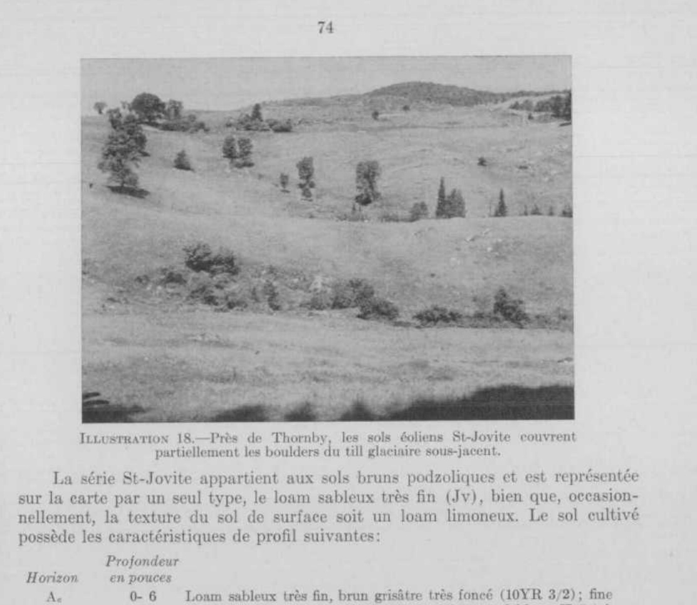
ILLUSTRATION 18.— Près de Thornby, les sols éoliens St-Jovite couvrent partiellement les boulders du till glaciaire sous-jacent.
La série St-Jovite appartient aux sols bruns podzoliques et est représentée sur la carte par un seul type, le loam sableux très fin (Jv), bien que, occasionnellement, la texture du sol de surface soit un loam limoneux. Le sol cultivé possède les caractéristiques de profil suivantes :
Horizon
Profondeur en pouces
Ae
0 - 6
Loam sableux très fin, brun grisâtre très foncé (10YR 3/2); fine structure grumeleuse; très friable et très perméable; pH 5.4 à 5.6.
B21
6 - 16
Loam sableux très fin ou parfois loam limoneux brun jaunâtre foncé à brun jaunâtre (10YR 4/4-5/4); très fine structure grumeleuse; très friable et très perméable; pH 5.6 à 5.9.
B22
16 - 28
Loam sableux très fin, olive (2.5Y 4/4) à brun jaunâtre; très friable et très perméable; pH 5.6 à 5.9.
C
28-28
Loam sableux très fin, olive (5Y 4/3-2.5Y 4/4); pH 5.6 à 5.9.
D
38+
Till dense, pierreux et de réaction acide, ou roc précambrien.
Dans tout le profil, il n'y a aucun changement brusque de couleur, la séparation des horizons est difficile et plutôt arbitraire. Les pierres et les fragments graveleux sont généralement absents dans le solum mais les gros boulders du till sous-jacent s'élèvent souvent jusqu'au niveau du solum et même parfois pointent au-dessus de la surface du sol.
Agriculture
Presque tous les sols St-Jovite ont été mis en culture et sont utilisés pour les prairies, les pâturages et les diverses récoltes de grande culture. Cependant certaines pentes raides et quelques boulders émergeant à la surface du sol peuvent aussi rendre difficile l'utilisation des machines agricoles. Par ailleurs, le sol est profond, perméable, d'une texture très désirable et possède une bonne capacité de rétention d'eau et aussi une assez bonne à bonne fertilité naturelle. Ces qualités rendent le sol susceptible de réagir très favorablement aux applications de chaux et d'engrais.
Le terrain doit être protégé contre l'érosion par l'eau qui cause l'amincissement du solum et la perte d'une importante partie de la fertilité naturelle. Il faut pratiquer la culture à contre-pente ou sur les parties les plus unies, maintenir le terrain engazonné le plus possible et protéger les pentes raides par du gazon ou des arbres.
Le chulage est nécessaire pour relever la réaction du sol au-dessus de pH 6.0 et pour fournir le calcium nécessaire à la croissance normale des plantes. Maintenir et augmenter si possible le contenu en matière organique du sol.
Sols sur sédiments loameux
Série Coulonge (Cl)
Les sols Coulonge occupent 1,370 acres dans Gatineau et 6,003 acres dans Pontiac. Le matériau originel est une alluvion loameuse de 1½ à 3 pieds d'épaisseur déposée sur le gravier des larges plaines de délavage. Le terrain est presque plat ou légèrement ondulé, libre de pierres et de drainage bon à excessif. Le pin blanc, le pin rouge, le sapin, le bouleaux blanc et le bouleau gris sont les principaux arbres des terrains boisés.
La série appartient au groupe des podzols et ne comprend qu'un seul type : le loam sableux fin (Cl) dont voici la description du profil à l'état cultivé.
Horizon
Profondeur en pouces
Ae
0 - 6
Loam sableux très fin, brun à brun foncé ou brun grisâtre foncé (7.5YR-10YR 4/2); structure grumeleuse; très friable et très perméable; pH 5.4 à 5.8.
B21
6 - 9
Loam sableux très fin, brun-vif (7.5YR 5/6); structure grumeleuse; très friable et très perméable; pH 5.8 à 6.2.
B22
9 - 18
Loam sableux très fin, brun jaunâtre (10YR 4/4-6/4); quelques fins fragments de gravier; structure grumeleuse parmi les grains de sable; très friable et très perméable; pH 5.8 à 6.2.
CD
18+
Gravier avec ou sans stratifications de sable grossier ou sable grossier avec ou sans stratifications de gravier, brun jaunâtre (10YR 4/4); lâche; très perméable; pH 5.8 à 6.2.
Une couche éluviée, gris brunâtre pâle, d'une épaisseur de ½ à 1 pouce, est généralement présente dans les sites vierges, mais absente dans les champs cultivés.
Agriculture
La plupart des sols Coulonge sont en culture et voués à la grande culture et aux cultures sarclées. Ils sont faciles à cultiver. En moyenne, les rendements des récoltes sont bas, apparemment à cause du manque de fertilisation et de chulage. Ces deux pratiques agricoles doivent être répétées fréquemment car le sol est très perméable et les éléments ajoutés qui ne sont pas absorbés par les plantes sont rapidement entrainés dans les eaux de drainage. Le terrain est mieux adapté à la culture intensive qu'à la grande culture.
L'humidité est généralement disponible pendant le printemps et le début de l'été; mais, à la mi-été ou à la fin de l'été, le terrain devient souvent excessivement sec. Conséquemment, les cultures semées tôt ou faites avec des variétés hâtives produisent de meilleurs rendements.
69779-7-6½
Série Piedmont (Pm)
Dans le comté de Pontiac, les sols Piedmont s'étendent sur 15,130 acres, surtout entre Bryson et Onslow Corner. Dans le comté de Gatineau, ces sols couvrent 6,925 acres, principalement entre Low et Chelsea, le long de la vallée inférieure de la rivière Gatineau. Partout, les sols Piedmont occupent des élévations de 500 à 600 pieds. Le matériau originel est une alluvion de loam sableux, d'une épaisseur de 2 à 6 pieds et reposant sur des matériaux à fine texture. Le sol est bien drainé, perméable et possède une bonne capacité de rétention d'humidité. Le terrain est généralement ondulé et souvent découpé par des ravins.
La série appartient au groupe des podzols et ne comprend qu'un seul type: le loam sableux (Pm). Voici la description du profil à l'état cultivé:
Horizon
Profondeur en pouces
Ae
0–8
Loam sableux à loam sableux fin, brun foncé (10YR 4/3-3/2); faible structure granuleuse; très friable et très perméable; pH 5.4 à 5.7.
B21
8-24
Loam sableux fin, brun jaunâtre à brun-vif; (10YR 5/6-7.5YR 5/8); faible structure granuleuse; très friable; perméable; pH 5.6 à 5.9.
B22
24-32
Sable loameux fin ou loam sableux, brun jaunâtre (10YR 5/4 4/4); parfois marbré de brun-vif et d'olive-pâle; ferme; modérément perméable; pH 5.6 à 5.9.
C
32-53
Stratifications de loam argileux et de sable fin, brun jaunâtre à brun jaunâtre pâle; quelques marbrures; très ferme; peu perméable; pH 5.6 à 5.9.
D
54+
Argile à loam argileux brun grisâtre, souvent lamellé ou stratifié.
Agriculture
Les sols Piedmont sont tous en culture. On y fait surtout la grande culture, mais aussi un peu de cultures sarclées. La fertilité naturelle qui n'est pas très élevée peut être améliorée, car le sol retient bien l'eau et les éléments nutritifs. En général, les récoltes ne sont que passables. Le fumier est souvent le seul engrais utilisé alors qu'il faudrait aussi chauler et fertiliser avec des engrais chimiques complets. Les trèfles et la luzerne poussent assez bien sur le terrain chaulé et fertilisé. La chaux est appliquée après la récolte des pommes de terre lorsque celles-ci font partie de la rotation.
Les sols Piedmont conviennent à une grande variété de cultures et leur productivité dépend largement de la fertilisation. Le terrain n'a pas de pierres, est hâtif, facile à travailler et naturellement bien drainé. Il faut prendre soin de prévenir l'érosion par l'eau le long des pentes les plus raides.
Série Hull (H)
Les sols Hull forment un caténa avec les sols Piedmont et couvrent 1,050 acres, le long des pentes où beaucoup d'eau d'infiltration provient des sols situés plus haut, principalement des sols Piedmont et Gatineau. Ces eaux d'infiltration, plus ou moins abondantes selon la saison et l'intensité de la précipitation, sont la cause du drainage imparfait des sols Hull. Le matériau originel des sols Hull est, comme celui des sols Piedmont, formé de 2 à 6 pieds de matériel sableux sur argile.
La série appartient aux podzols à gley et ne comprend qu'un seul type: le loam sableux (H). Le profil de ce type, à l'état cultivé, possède les caractéristiques suivantes:
Horizon
Profondeur en pouces
Ac
0 - 8
Loam sableux, brun à brun foncé; structure granuleuse; très friable et très perméable; 5.4 à 5.6.
B21
8-28
Loam sableux, brun jaunâtre; marbrures brun-vif et brun-pâle; très friable et très perméable; saturé d'eau au printemps et aux périodes de fortes précipitations; pH 5.4 à 5.6.
B22
28-40
Loam sableux, brun jaunâtre foncé; marbrures brun grisâtre; friable; modérément perméable; saturé d'eau durant une bonne partie de la saison végétative; mal aéré; pH 5.6 à 5.8.
CD
40+
Matériel argileux, massif ou stratifié de matériaux loameux ou sableux; très peu perméable verticalement; perméable le long des stratifications horizontales, lorsque celles-ci sont présentes.
Agriculture
Les sols Hull ont, presque partout, été mis en culture et servent à la grande culture et aux pâturages. Ils n'ont pas de pierres, sont assez fertiles et faciles à cultiver, bien que la topographie en pente crée quelques problèmes. Les plantes sarclées doivent être cultivées à contre-pente pour éviter l'érosion par l'eau, mais les prairies et les pâturages résistent assez bien à ce dégât. Il est difficile de se débarrasser des eaux d'infiltration sans avoir recours au drainage souterrain au travers des pentes. Des fossés profonds creusés à contre-pente enlèveraient cependant une quantité considérable d'eau et pourraient satisfaire aux exigences des plantes de grande culture. Généralement, le sol demeure très humide et frais pour une longue période au début de la saison de végétation. Le terrain est alors très mou et ne peut supporter la machinerie lourde.
Avec un drainage amélioré, le chaulage et l'application d'engrais chimiques complet en plus du fumier, les sols Hull produisent les herbes et les fourrages de façon uniforme tout au long de l'été. Les céréales et les cultures sarclées peuvent aussi donner des rendements satisfaisants quand le drainage est amélioré.
Série Brébeuf (Bf, Bfs)
Les sols Brébeuf (illustration 19) occupent 20,813 acres dans Gatineau et 21,331 acres dans Pontiac sur un terrain ondulé, à des élévations de 400 à 600 pieds. Le matériau originel n'a pas de pierres et est formé d'une alluvion de loam sableux très fin, de loam ou de loam limoneux reposant généralement sur des matériaux lacustres lamellés. L'alluvion est très perméable et permet une libre percolation de l'eau à travers le solum dont la capacité de rétention est bonne à passable. Le substrat lamellé est peu perméable et ralentit le mouvement vertical des eaux de drainage. Sur les pentes convexes des sols Brébeuf, ces diverses influences produisent un bon drainage naturel. Sous les présentes conditions de culture, les dangers d'érosion nocive par l'eau sont faibles si ce n'est lorsque le sous-sol est gelé ou saturé d'eau alors que le danger devient beaucoup plus grand.
La série appartient aux podzols et comprend deux types: le loam à loam limoneux (Bf) et le loam sableux très fin (Bfs). La description suivante représente le profil cultivé de ce dernier type qui est le plus important de la série.
Horizon
Profondeur en pouces
Ac
0- 6
Loam sableux très fin, brun foncé à brun (10YR 4/3-5/3); fine structure granuleuse; très friable; très perméable; pH 5.3 à 6.0.
Horizon
Profondeur (cm)
Description morphologique
B21
6-14
Loam sableux très fin, brun jaunâtre à brun-vif (10YR à 7.5YR 5/6-5/8) ; fine structure granuleuse ; très friable ; perméable et bien aéré ; pH 5.4 à 6.0.
B22
14-24
Loam sableux très fin, brun jaunâtre pâle à olive pâle (10YR à 2.5 6/4-5/4) ; structure granuleuse parmi les grains de sable ; très friable ; très perméable ; pH 5.6 à 6.2.
C
24+
Loam limoneux à loam sableux ou loam limono-argileux, lamellé, gris olive à gris brunâtre pâle (5Y 5/2 à 2.5Y 6/2-7/2) ; très ferme ; peu perméable dans le sens vertical ; quelques marbrures ; pH 5.6 à 6.4.
Agriculture
Les sols Brébeuf ont presque tous été mis en culture. Ils servent surtout aux grandes cultures mais conviennent à beaucoup d'autres, y compris la plupart des cultures maraîchères. Le terrain ne possède qu'une fertilité naturelle passable, mais le chaulage, le fumier et les engrais chimiques complets produisent une augmentation considérable des rendements. Les conditions d'humidité des sols cultivés sont excellentes.
ILLUSTRATION 19. — Ces étroites terrasses de la Gatineau sont occupées par les sols Brébeuf et Pontiac.
Le chaulage et les fertilisations phosphatique et potassique permettent de cultiver la luzerne. Cependant, jusqu'à maintenant, peu de chaux et de fertilisants ont été utilisés; ceci explique partiellement la médiocrité des champs de légumineuses. Les légumineuses à racines profondes conviennent mieux à ces sols que les herbes à racines superficielles. Le terrain convient plutôt aux cultures intensives quoique la culture extensive puisse aussi réussir.
La plupart des sols Brébeuf ont un relief peu accentué, qui permet la pratique de diverses cultures sans sérieux danger d'érosion. Cependant, les plus fortes pentes doivent demeurer engazonnées ou être protégées en travers par des bandes de gazon.
Les rendements varient beaucoup selon les modes d'administration. Le terrain, étant bien drainé et aéré, se réchauffe rapidement au printemps et peut
être travaillé et semé tôt. Négliger de prendre avantage de ce départ hâtif et des .excellentes conditions d'humidité du printemps c'est risquer de réduire considérablement le rendement des céréales et la germination des légumineuses.
Série Allumette (At, Atl)
Les sols Allumette occupent une superficie totale de 13,588 acres à peu près également divisée entre les deux comtés. Le terrain est en légère dépression ou plat et présente parfois des inégalités. Le matériau originel est une alluvion de loam sableux très fin, de loam ou de loam limoneux reposant sur des matériaux lacustres, lamellés et généralement de texture plus fine que l'alluvion de surface.
Les eaux de pluie sont toutes rapidement absorbées par le solum perméable et s'accumulent au-dessus du substratum peu perméable, causant ainsi un drainage imparfait et une mauvaise aération, surtout au printemps et aux périodes pluvieuses.
La série appartient au groupe des podzols à gley et comprend deux types: le loam sableux très fin (At) et le loam à loam limoneux (Atl). Voici une description du sol cultivé du type de loam sableux très fin qui est le plus important de la série.
Horizon
Profondeur en pouces
Ac
0- 6
Loam sableux très fin, brun grisâtre foncé (10YR 4/2); fine structure granuleuse; très friable; très perméable; pH 5.0 à 5.5.
A2
6- 8
Restes d'une couche grise brunâtre pâle (10YR 6/2), mêlée avec le matériel de l'horizon sous-jacent.
B2
8-24
Loam sableux fin, brun jaunâtre (10YR 5/4-5/6); marbrures olive pâle (2.5Y 5/4) et brun rougeâtre (5YR 5/4); structure multigranulaire; parfois lamellé dans la partie inférieure de l'horizon; friable et perméable; pH 5.0 à 5.6.
C
24+
Matériel gris brunâtre pâle (2.5Y 6/2); bandes brun jaunâtre (10YR 4/4-5/8); lamelles de loam sableux fin, de loam limoneux ou de loam limono-argileux; ferme; peu perméable; pH 5.4 à 6.0.
Le sol forestier possède une litière organique de 2 à 3 pouces d'épaisseur à la surface, reposant sur 4 à 6 pouces d'horizon gris brunâtre pâle (A2).
Agriculture
Une partie importante des sols Allumette a été mise en culture et est vouée à la grande culture. Le drainage artificiel élimine rapidement la sursaturation des eaux; autrement, la croissance des plantes est retardée par la fraîcheur et le manque d'aération du terrain. La chaux et les engrais chimiques complets améliorent les rendements.
Le terrain convient mieux aux fourrages qu'aux céréales. La luzerne ne peut croître que si le drainage et la réaction du sol ont été considérablement améliorés. Le trèfle pousse bien sur le terrain bien drainé, chaulé et fertilisé avec du phosphore et du potassium. Les rendements des cultures, généralement bas, augmentent rapidement sous une bonne gestion. Les meilleurs rendements s'obtiennent durant les années de précipitation relativement faible. Un printemps sec favorise les semences hâtives.
Série Demers (Dr)
Les sols Demers couvrent 3,942 acres et sont formés sur les mêmes matériaux que les sols Brébeuf et Allumette. Les sols Demers sont mal drainés et occupent des sites bas ou en dépression, qui reçoivent les eaux des terrains environnants. Le mauvais drainage et un manque d'aération résultent de l'imperméabilité des matériaux lamellés qui se trouvent à une faible profondeur dans le sous-sol.
La série appartient aux sols gleysoliques gris foncé et ne comprend qu'un seul type: le loam limoneux (Dr). Voici une description de ce sol à l'état cultivé.
Horizon
Profondeur en pouces
Description
Ac
0-6
Loam limoneux grisâtre; structure granuleuse et fragments irréguliers; modérément friable et perméable; pH 4.7 à 5.7.
A2
6-12
Loam limoneux gris pâle; structure en plaques ou lamelée; perméable; pH 5.4 à 6.0.
Bg
12-24
Lamelle brun grisâtre ou olive, de loam sableux très fin, de loam limoneux ou de loam limono-argileux; marbrures brun jaunâtre et gris pâle; lamelles fermes en place; friables lorsque séparées de la masse; peu perméable au mouvement vertical de l'eau; pH 5.5 à 6.3.
C
24+
Varves ou lamelles brun grisâtre, de loam limoneux, de loam limono-argileux ou de loam sableux fin; marbrures brun jaunâtre et olive; fermes à friables; se brisent facilement sur le plan horizontal; résistent au mouvement vertical de l'eau; pH 6.0 à 6.8.
À l'état naturel, le sol est couvert d'une tourbe de 3 à 5 pouces d'épaisseur, reposant sur un horizon organo-minéral (A1) brun grisâtre foncé, de 3 à 4 pouces d'épaisseur. Quand le sol est mis en culture, la tourbe et l'horizon A1 sont mêlés à une partie de l'horizon A2.
Agriculture
La plupart des sols Demers servent surtout à la production des fourrages. Le carex et les joncs croissent naturellement dans les prairies et les pâturages, excepté là où le drainage a été amélioré considérablement. Le sol est froid, mal drainé et se classe parmi les derniers à être prêts pour les semailles du printemps. Les céréales ne sont cultivées que sur les champs dont le drainage a été très amélioré. Une fois améliorés par le drainage et le chaulage, les sols Demers ont une assez bonne capacité de production, surtout pour les fourrages. Le creusage des fossés et l'usage de charrues à défoncer pour briser les lamelles imperméables du sous-sol peuvent aider considérablement à améliorer le drainage et l'aération.
Série Chicot (C)
Les sols Chicot couvrent 378 acres près d'Aylmer (Gatineau), à 250 pieds d'élévation. Le terrain est ondulé, modérément bien drainé et relativement exempt de pierres. Le matériau originel est un loam sableux très fin ou un sable très fin d'une épaisseur d'environ trois pieds sur un till calcaire. Le sol est perméable et retient modérément l'humidité. Durant les fortes pluies, le ruissellement peut causer de l'érosion, surtout si le sous-sol est gelé.
Le profil supérieur possède les caractéristiques des sols bruns podzoliques et le sous-sol, celles des sols gris-brun podzoliques. La série ne comprend qu'un type, le loam sableux fin. La description de ce sol, à l'état cultivé, apparaît ci-dessous:
Horizon
Profondeur en pouces
Description
Ae
0 - 8
Loam sableux fin, brun foncé (7.5YR 3/2); très fine structure granuleuse; très friable; très perméable; pH 5.8 à 6.5.
B2(BP)
8-30
Loam sableux fin à sable loameux fin, brun pâle à brun (10YR 6/3); très friable; très perméable; pH 6.5 à 7.0.
B2(GBP)
30-36
Loam sablo-argileux brun grisâtre très foncé (10YR 3/2); ferme; moyenne structure cuboïde sub-anguleuse; pH 6.8 à 7.2.
CD
36+
Till calcaire.
À l'état naturel, l'horizon brun B2(BP) vient immédiatement sous l'horizon organique de surface.
Agriculture
Les sols Chicot peuvent servir aux cultures maraîchères, aux vergers et à toutes les récoltes de grande culture. La luzerne pousse bien. La fertilité naturelle n'est pas très élevée et toutes les récoltes tirent profit de la fertilisation au fumier et aux engrais chimiques complets, le chaulage est parfois nécessaire. Le drainage naturel est suffisamment bon pour la grande culture, mais les cultures maraîchères hâtives et les vergers bénéficieraient du drainage souterrain. Les sols Chicot occupent des sites qui seront probablement bientôt envahis par l'urbanisation.
Série Côteau (Ct)
Les sols Côteau couvrent 2,195 acres de terrain ondulé sur les basses terres des deux comtés, à des élévations de 250 à 350 pieds. Le matériau originel est une alluvion de loam sableux fin, d'une épaisseur de 4 à 6 pieds, sur argile. Le drainage naturel est bon, dû partiellement au relief et partiellement à la perméabilité des matériaux, permettant une percolation modérément rapide de l'eau.
La série appartient aux podzols et ne comprend qu'un seul type, le loam sableux fin. A l'état cultivé, ce sol a les caractéristiques suivantes:
Horizon
Profondeur en pouces
Description
Ae
0-7
Loam sableux fin, brun (10YR 4/3); structure granuleuse fine parmi les grains de sable; très friable; très perméable; pH 5.3 à 5.8.
B21
7-14
Loam sableux fin, brun jaunâtre (10YR 5/8); structure granuleuse; et monogranulaire; très friable; très perméable; pH 5.3 à 6.0.
B22
14-30
Loam sableux fin, olive pâle (2.5YR 5/6); structure monogranulaire; très perméable; pH 5.3 à 6.3.
C
30-48
Loam sableux fin à sable loameux fin, gris brunâtre pâle à olive (2.5Y 6/2-5Y 5/3); pH 6.2 à 6.7.
D
48+
Argile.
Agriculture
Les sols Côteau sont tous cultivés et utilisés pour les diverses récoltes de la ferme. La fertilisation naturelle n'est que modérée, mais le chaulage, le fumier et les engrais complets permettent d'obtenir de bons rendements. Le
terrain convient à une variété de cultures mais plus particulièrement aux produits maraîchers hâtifs. En grande culture comme en culture maraîchère, les rendements varient considérablement selon la gestion et l'intensité de la fertilisation. L'irrigation pourrait élever les rendements à des niveaux encore supérieurs.
Série Soulanges (S)
Les sols Soulanges, qui appartiennent au même caténa que les sols Côteau, couvrent 2,132 acres, à des élévations de 250 à 350 pieds. Le terrain est plat ou presque plat et imparfaitement à quelque peu mal drainé. Le matériau originel est une alluvion de loam sableux très fin, d'une épaisseur de 18 à 48 pouces sur de l'argile plane.
La série ne comprend qu'un seul type, le loam sableux fin à très fin (S). La description suivante du sol cultivé représente la phase la plus mince de cette série.
Horizon
Profondeur en pouces
Ae
0 - 8
Loam sableux fin à très fin, brun grisâtre très foncé (2.5Y 3/2); fine structure granuleuse; très friable; très perméable; pH 5.2 à 5.9.
Bs1
8-12
Loam à loam sableux fin, brun grisâtre (2.5Y 5/2); larges marbrures brun jaunâtre foncé, (10YR 4/3); pH 5.8 à 6.2.
Bs2
12-24
Loam sableux brun à brun jaunâtre (10YR 5/3-5/4); moyennes marbrures brun-vif et grises; mal aéré; pH 6.0 à 6.4.
D
24+
Argile gris à gris brunâtre (10YR 6/2-2.5Y 5/2); fines marbrures rouge jaunâtre ou jaune rougeâtre (5.YR 5/6-7.5YR 6/6); très peu perméable; pH 6.5 à 7.0.
En forêt, le profil comprend une litière organique de 3 à 4 pouces d'épaisseur, sur 4 à 6 pouces de loam sableux fin, éluvié et de couleur grise. L'horizon Bs1 commence à une profondeur de 4 à 6 pouces. Lorsque le substratum argileux (D) est situé plus profondément que 24 pouces, une couche de sable fin gris brunâtre s'interpose entre les horizons Bs2 et D.
Agriculture
Les sols Soulanges sont voués à la grande culture. La fertilité naturelle, qui n'est que passable, peut être grandement stimulée par les améliorations du drainage, le chaulage et la fertilisation au fumier et aux engrais chimiques complets. Le labour en planches larges et bombées est généralement la méthode employée pour améliorer le drainage et l'aération du sol.
Le terrain convient bien aux pâturages et aux récoltes de grande culture. Les trèfles poussent bien dans les champs chaulés et dont le drainage a été amélioré. Toutefois, l'aération du sol est rarement suffisante pour assurer le succès des luzernières. Au printemps, le terrain est mou et plutôt lent à se réchauffer. Par ailleurs, les plantes souffrent rarement de sécheresse durant l'été.
Série Lachute (Lc, Lcs)
Les sols Lachute couvrent 7,200 acres. On ne les trouve qu'à l'embouchure de la rivière Gatineau et le long de ce même cours d'eau, entre Kazabazua et les rapides du Castor Blanc, à des élévations s'échelonnant entre 150 et 600 pieds.
Le matériau originel, déposé récemment le long de la rivière sous forme de plaine de débordement, est une alluvion de loam limoneux à loam sableux très fin. L'alluvionnement ou le remaniement des dépôts existants se produit encore lors du débordement annuel des eaux de la rivière, aux endroits où le courant a peu de vélocité et traverse des méandres bordés de terrains plats. Durant la période d'inondation, la rivière change souvent son cours, détruit des levées déjà existantes pour en reconstruire d'autres à peu près parallèlement au nouveau chenal.
À l'exemple de la plupart des alluvions, le matériau originel des sols Lachute est très perméable et permet d'excellentes conditions pour l'infiltration des eaux et pour l'aération. Après l'inondation printanière, l'excès d'eau se retire rapidement du sol et par la suite l'humidité du solum est quelque peu reliée au niveau de l'eau dans la rivière. La bonne capacité de rétention de l'eau, la libre infiltration et la capillarité, créent d'excellentes conditions d'humidité durant presque toute la saison de croissance et font que le terrain est peu affecté par les sécheresses.
La série appartient au groupe des alluvions et comprend deux types: le loam limoneux (Lc) et loam sableux très fin (Lcs). Ce dernier type contient une plus grande proportion de sable très fin que de limon, non seulement à la surface mais à travers tout le profil. Les deux types sont souvent entremêlés. Le loam limoneux cultivé (Lc) a les caractéristiques suivantes:
Horizon
Profondeur en pouces
Ac
0-7
Loam limoneux brun grisâtre très foncé à brun foncé (10YR 3/2-4/3); fine structure granuleuse; très friable; très perméable; pH 5.5 à 6.2.
C1
7-27
Loam limoneux olive à olive pâle (2.5Y 4/4-5/4); fine structure granuleuse; très friable; très perméable; pH 5.8 à 6.4.
C2
27+
Loam limoneux olive pâle à gris brunâtre pâle (2.5Y 5/4-6/2); sans structure; faibles marbrures; très friable et très perméable; pH 6.0 à 6.4.
Agriculture
Les sols Lachute sont tous cultivés et constituent une excellente terre pour une variété de cultures. Les inondations qui se produisent généralement une fois l'an, à la fin d'avril ou au début de mai, ne causent pas de retard sérieux des semailles. Le terrain peut être travaillé dès que les eaux se sont retirées.
Ces sols possèdent une bonne fertilité naturelle et rendent très bien lorsque chaulés et fertilisés au fumier et aux engrais chimiques. Le sous-sol est poreux, perméable et adapté aux plantes à racines profondes, mais la luzerne peut périr lorsque le terrain demeure sous l'eau durant une période de temps prolongée.
Le terrain sert aux récoltes communes de grande culture, comme le foin, les céréales, le maïs à ensilage et les plantes-racines. Les rendements obtenus sont parmi les plus hauts dans la région. Les pommes de terre sont la principale récolte-argent. Une bonne production d'herbages peut être obtenue tout au long de la saison. L'accès à l'eau tout au long de la rivière rend ces terrains particulièrement adaptés au pâturage.
69779-7-7½
Types divers de terrains
Éboulis, berges et ravins (X, Xl, Xs)
Les éboulis, les berges et les ravins profonds ont tous été cartographiés dans un même groupe de terrains différenciés exclusivement d'après la texture de la surface du sol et indiqués comme argileux (X), limoneux (Xl) et sableux à graveleux (Xs). Ces trois types couvrent respectivement 31,629, 8,198 et 9,479 acres dans toute la région cartographiée.
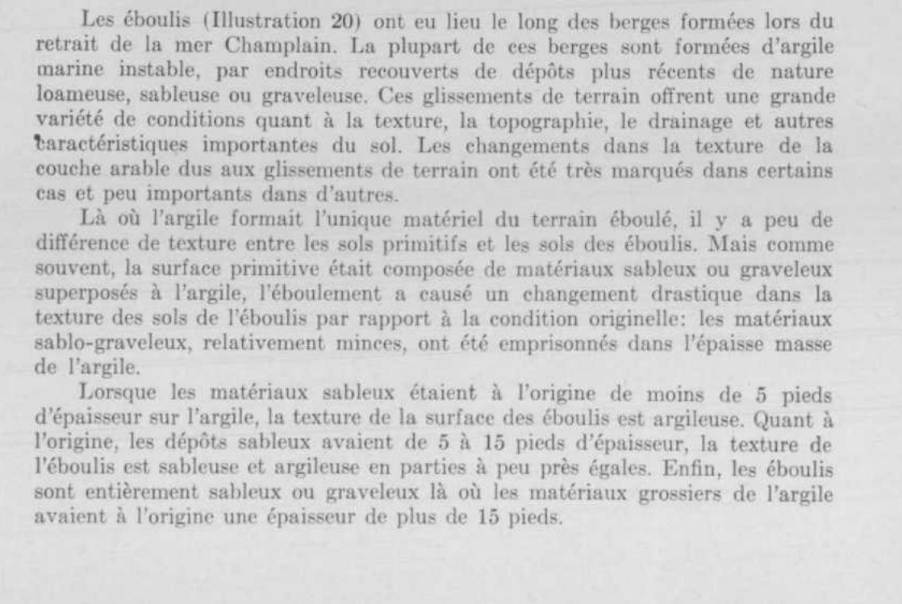
ILLUSTRATION 20.—Culture sur les éboulis argileux, près de Quyon.
Les éboulis (Illustration 20) ont eu lieu le long des berges formées lors du retrait de la mer Champlain. La plupart de ces berges sont formées d'argile marine instable, par endroits recouverts de dépôts plus récents de nature loameuse, sableuse ou graveleuse. Ces glissements de terrain offrent une grande variété de conditions quant à la texture, la topographie, le drainage et autres caractéristiques importantes du sol. Les changements dans la texture de la couche arable dus aux glissements de terrain ont été très marqués dans certains cas et peu importants dans d'autres.
Là où l'argile formait l'unique matériel du terrain éboulé, il y a peu de différence de texture entre les sols primitifs et les sols des éboulis. Mais comme souvent, la surface primitive était composée de matériaux sableux ou graveleux superposés à l'argile, l'éboulement a causé un changement drastique dans la texture des sols de l'éboulis par rapport à la condition originelle: les matériaux sablo-graveleux, relativement minces, ont été emprisonnés dans l'épaisse masse de l'argile.
Lorsque les matériaux sableux étaient à l'origine de moins de 5 pieds d'épaisseur sur l'argile, la texture de la surface des éboulis est argileuse. Quant à l'origine, les dépôts sableux avaient de 5 à 15 pieds d'épaisseur, la texture de l'éboulis est sableuse et argileuse en parties à peu près égales. Enfin, les éboulis sont entièrement sableux ou graveleux là où les matériaux grossiers de l'argile avaient à l'origine une épaisseur de plus de 15 pieds.
Le matériau originel de ces sols est de nature variable et souvent la texture du sous-sol diffère beaucoup de celle de la surface. Dans la plupart des cas, le drainage naturel varie d'imparfait à mauvais. Ces sols se trouvent généralement le long des cours d'eau et aux creux des dépressions de terrain.
La plupart de ces sols ont été laissés dans leur état naturel, couverts d'arbres, d'aunes et d'arbustes. Certaines alluvions feraient de la bonne terre en étendues assez considérables mais souvent elles ne forment que d'étroites bandes au milieu de terrains non arables. D'autres cas, les frais de drainage sont prohibitifs à cause des obstacles naturels ou de la superficie restreinte. Les terrains déboisés sont surtout utilisés pour les pâturages et les fourrages. Les céréales sont rarement cultivées, soit parce que le terrain est tardif, soit parce qu'il est difficilement accessible.
Terrains rocheux non différenciés (√)
Les petites superficies de terrain pierreux et d'affleurements rocheux parmi des sols minces ont été cartographiées comme terrains rocheux non différenciés et indiqués simplement par le symbole (√). Ces superficies incluent des dépressions marécageuses et supportent une végétation très inégale d'arbustes et d'arbres de faible valeur.
La superficie de ces sols a été incluse avec les sols de till avoisinants.
Sols organiques (Mk, Tt, Pt)
Les sols organiques cartographiés appartiennent à trois types différents : les terres noires (Mk), les terres noires tourbeuses (Tt) et les tourbes (Pt). Dans toute la région, les terres noires couvrent 3,123 acres et les tourbes 1,113 acres. Les terres noires tourbeuses couvrent 7,181 acres et ne se rencontrent que dans le comté de Gatineau.
La terre noire est formée de matériel organique noir et bien décomposé ayant une épaisseur d'environ 1½ à 4 pieds sur un substratum minéral.
La terre noire tourbeuse contient des résidus de bois semi-décomposés et de couleur brune parmi du matériel organique noir et bien décomposé. Le dépôt a généralement 2 pieds d'épaisseur mais peut parfois atteindre 3 ou 4 pieds.
La tourbe est formée de résidus de plantes peu décomposés et retenant encore leur nature fibreuse. Les dépôts de tourbe ont généralement plus de 4 pieds d'épaisseur et parfois dépassent 10 pieds. A la surface, le matériel est généralement brun mais devient brun jaunâtre pâle en profondeur.
Le substratum minéral des sols organiques est mal drainé, fortement marqué de gley et formé de till, d'argile, de sable ou même de roc. A certains endroits, on trouve de la marne entre le dépôt organique et le substratum minéral. Cette marne a été formée par l'accumulation des coquillages de petits organismes vivants dans l'eau des lacs. Un dépôt de ce genre se rencontre au sud du village de Blue Sea.
Les tourbes sont généralement très humides et rarement cultivées. Certaines portions des terres noires et des terres noires tourbeuses ont été mises en culture et sont utilisées pour les principales récoltes de grande culture.
La productivité naturelle des sols organiques est basse, car ils sont déficients en phosphore, en potassium et parfois en éléments mineurs. Sans fertilisation, les récoltes mûrissent lentement, produisent peu et les céréales sont sujettes à la verse. Le fumier employé seul, même à larges doses, ne peut
corriger le manque d'équilibre dans la proportion des éléments nutritifs. Les meilleurs rendements sont obtenus lorsqu'on utilise les engrais chimiques spécialement désignés pour les sols organiques. Ces engrais contiennent beaucoup de potassium et de phosphore mais peu ou pas d'azote. La plupart des sols organiques sont acides et doivent être chaulés pour obtenir les meilleurs rendements. La marne locale, dont certains lits contiennent 80 à 90 pour cent de carbonate de calcium, peut être utilisée comme amendement calcaire. Les sols organiques adéquatement fertilisés conviennent à une grande variété de cultures mais plus particulièrement aux cultures maraîchères.
Différant de la plupart des sols minéraux, les sols organiques sont extrêmement poreux et doivent être tassés pour assurer un bon contact entre la plante et le sol. Il convient donc d'utiliser des rouleaux et d'autres instruments de compaction au bon moment et d'éviter les travaux qui tendent à accentuer la porosité du sol.
Terrains marécageux (⺲)
Les terrains marécageux couvrent 63,322 acres dans les comtés de Gatineau et de Pontiac. Ils comprennent tous les sols qui, durant la saison de végétation, sont couverts d'eau pendant une période assez longue pour les rendre inexploitables comme terre agricole. Ces terrains se trouvent communément dans des sites ayant une drainage stagnant, au fond des dépressions ou le long de cours d'eau paresseux. Plusieurs petits marécages sont inclus avec les sols de till Lakefield. Le symbole de marécage (⺲), ajouté sur la carte aux symboles des séries, indique la présence de petites étendues marécageuses qui n'ont pu être cartographiées séparément.
Le matériel des terrains marécageux est de nature variable: sableux, loameux ou argileux, pierreux ou non pierreux. La matière organique à la surface du sol est souvent mal décomposée et en quantité qui n'excède que légèrement celle des sols minéraux environnants. Les terrains marécageux ne peuvent servir à l'agriculture à moins de subir d'importants et coûteux travaux de drainage. Ils diffèrent des sols organiques en ce qu'ils ne peuvent servir de source de matière organique.
UTILISATION DU SOL
Colonisation et premiers développements agricoles
Champlain et ses compagnons furent, en 1615, les premiers Blancs à explorer la rivière Outaouais. Pour sa part, Nicolas Gatineau visitait, en 1650, la rivière qui porte maintenant son nom. Après les explorations de Champlain, durant plus d'un siècle et demi, la « grande rivière » fut la route des canots des Indiens, des trappeurs, des explorateurs ou des coureurs de bois, alors que Portage-du-Fort et Fort-Coulonge servaient de principaux points d'atterrissage. Pendant tout ce temps, la rive nord de l'Outaouais maintenant divisée entre les comtés de Gatineau et Pontiac, aussi bien que la rive opposée, demeuraient absolument intactes. En 1800, un fermier de la Nouvelle-Angleterre, Philémon Wright, s'établissait sur le présent site de la ville de Hull avec 35 hommes, 5 familles et 8 bœufs.4
Bien que Wright s'occupa surtout d'exploiter la forêt, l'agriculture se développa rapidement comme complément nécessaire, si bien qu'en 1824, le fondateur de Hull possédait quatre grandes fermes formant une superficie déboisée de 3,000
4 The Storied Province of Quebec, Volume II, Bouchette, Toronto, 1931.
TABLEAU 7.—ÉTAT DE LA TERRE ET SUPERFICIES DE QUELQUES CULTURES
DANS LES COMTÉS DE GATINEAU ET PONTIAC, 1956.¹
Gatineau
Pontiac
Acres
Pourcentage du total
Acres
Pourcentage du total
Superficie totale des fermes.
379,301
100
298,554
100
Terre défréchée.
139,753
37
152,863
51
Terre non défréchée.
239,548
63
145,691
49
Forêt.
187,867
50
113,496
38
Pâturage amélioré.
44,060
12
60,499
20
Pâturage non amélioré.
27,708
7
14,983
5
En culture.
86,836
23
86,686
29
Foin cultivé.
59,480
16
53,998
18
Avoine.
20,081
5
24,754
8
Orge.
519
.1
802
.2
Grains mélangés.
1,697
.4
2,034
.6
Maïs pour ensilage.
1,126
.3
1,489
.5
Autres cultures fourragères.
1,240
.3
1,204
.5
Pommes de terre.
1,274
.3
955
.3
1 Recensement du Canada.
Le pourcentage des fermes de plus de 180 acres est de 52 dans Gatineau et de 49 dans Pontiac (tableau 8). Cependant, la superficie défrichée sur ces fermes est plutôt restreinte. Les parties non défréchées consistent surtout en terrain rocheux non cultivable ou en terrain sableux de très basse fertilité naturelle. Certaines fermes, surtout dans la vallée de la Gatineau, sont traversées par plusieurs collines rocheuses qui isolent les champs et rendent leur accès difficile. Pour obvier à cet inconvénient, certains bâtiments de ferme ont été construits loin du chemin public, dans le but de les rapprocher du centre des terrains cultivables.
TABLEAU 8.—GRANDEUR DES FERMES DANS LES COMTÉS DE GATINEAU
ET DE PONTIAC, 1956.¹
Grandeur des fermes Acres
Gatineau
Pontiac
Nombre
Pourcentage du total
Nombre
Pourcentage du total
10– 69.
121
7
79
5
70–129.
505
28
443
30
130–179.
217
12
216
15
180–239.
382
21
314
21
240–399.
365
20
281
19
400–559.
136
8
113
7
560–759.
38
2
19
1
760 et plus.
19
1
8
1
Total.
1,809
100
1,482
100
1 Recensement du Canada.
Dans les régions où la bonne terre agricole ne forme que d'étroites bandes parmi les terrains rocheux (Illustration 21), il est coûteux d'entretenir les services publics comme les routes, les écoles, et de faire la distribution de l'électricité, du téléphone, de l'aqueduc et la livraison ou la cueillette à domicile. Les
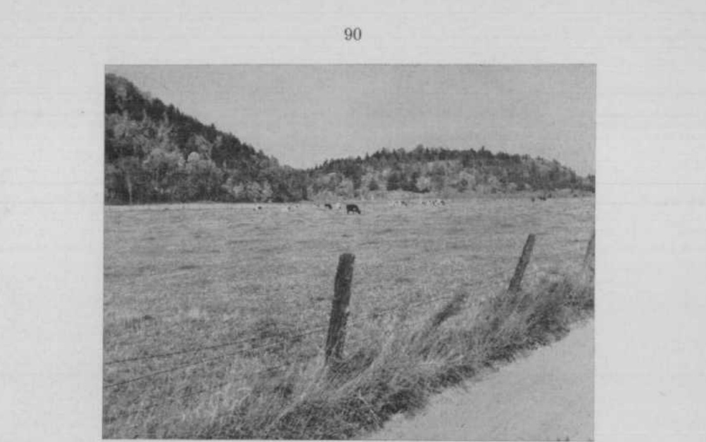
ILLUSTRATION 21. — Étroites bandes de terre arable parmi les collines rocheuses des Laurentides, vouées à l'industrie laitière.
caractères physiographiques de certaines régions demanderaient une division des fermes, différente de celle imposée par le cadastre du township. De plus, la combinaison de deux ou trois fermes en une seule permettrait une meilleure utilisation du terrain. Les problèmes économiques reliés à l'exploitation agricole des vallées étroites perssemées de collines rocheuses sont bien différents de ceux rencontrés sur les fermes des basses-terres où presque tout le terrain est cultivable.
Les plus importants cantons agricoles de Gatineau sont Eardly, Low et Wright, possédant chacun plus de 10,000 acres de terre défrichée. Le canton de Clarendon a plus de 36,000 acres de terrain défriché. De beaucoup la plus importante région agricole du comté de Pontiac, il est suivi par Bristol, Litchfield, et Onslow-Sud. L'île aux Allumettes compte plus de 13,000 acres de terrains agricoles et l'île du Grand-Calumet, environ la moitié de cette superficie.
CLASSEMENT DES SOLS
Selon leur adaptabilité à divers genres d'exploitation agricole, les sols de la région étudiée peuvent être divisés en cinq classes, telles qu'indiquées au tableau 9. Ce classement est basé en premier lieu sur le degré d'adaptabilité de chaque sol aux différentes récoltes et en second lieu sur sa fertilité dans les conditions moyennes d'exploitation. Conséquemment, les sols convenant à une large variété de productions y apparaissent les premiers, tandis que ceux ne convenant qu'à peu de productions ou ne convenant à aucune viennent les derniers. Ce classement repose sur les données fournies par les cultivateurs et les agronomes aussi bien que sur le potentiel du sol tel qu'estimé par les pédologues. Les prédictions des pédologues s'appliquent particulièrement au cas des cultures maraîchères dont la pratique a été peu répandue jusqu'à maintenant.
Classe I
Les sols de la classe I couvrent 8.7 pour cent de la superficie cartographiée dans Gatineau et 6.3 pour cent de celle de Pontiac. Tous ces sols sont loameux et bien drainés à l'état naturel. Leur fertilité naturelle n'est pas des plus hautes mais ils rendent bien sous l'effet du fumier et des engrais chimiques complets. On peut travailler ces sols facilement et sous des conditions d'humidité très variables sans en affecter la bonne structure. Pour ces raisons, ils conviennent très bien aux cultures maraîchères. La plupart demandent à être chaulés. A part le St-Bernard et le St-Jovite, tous sont exempts de pierres et ont une topographie unie facilitant l'usage des machines agricoles. L'érosion par l'eau offre un danger sur plusieurs de ces sols surtout si on y fait des cultures sarclées. Il convient donc de pratiquer des mesures prépreventives comme, par exemple, la disposition des rangs le long des contours de niveau et non de haut en bas des pentes.
Avec une fertilisation modérée et sous les conditions climatiques normales, les sols de la classe I devraient donner de bons rendements; en plus, ils sont moins affectés par des conditions extrêmes que les sols des autres classes. La teneur de ces sols en matière organique n'étant que modérée, elle doit être maintenue ou augmentée si possible.
Classe II
Les sols de la classe II occupent respectivement 8.9 et 4.8 pour cent des superficies cartographiées dans les comtés de Gatineau et de Pontiac. Ces sols n'ont pas de pierres et sont formés de matériaux très fins, ayant une topographie plane ou presque plane. Sauf quelques-uns, ces sols doivent être drainés artificiellement pour les productions agricoles. Plusieurs ont une bonne structure permettant l'aération, mais d'autres ont des sous-sols massifs, peu perméables à l'eau, à l'air et aux racines. La capacité de rétention d'eau est grande chez presque tous ces sols et les échanges d'humidité s'y font lentement. Il ne faut travailler ces terrains que dans les conditions d'humidité permettant le maintien de la structure du sol de surface. Les travaux de culture exigent beaucoup de puissance, mais l'usage des machines agricoles est facilité par l'absence de pierres et de relief. Les bons rendements dépendent plus des bonnes conditions climatiques que dans le cas des sols de la classe I.
Les sols de la classe II conviennent généralement mieux à la grande culture qu'à la culture maraîchère. Ils conviennent bien ou très bien aux pâturages, aux céréales et aux fourrages, mais plusieurs sont peu ou ne sont pas adaptés à la luzerne. Le succès du maïs à ensilage varie selon les conditions climatiques, la structure du sol de surface et l'efficacité du drainage artificiel. Quoique doués d'une plus haute fertilité naturelle, les sols de la classe II ne produisent pas de rendements moyens plus élevés que les sols bien administrés de la classe I.
La fertilisation est beaucoup moins efficace sur les sols de la classe II que sur tous les autres sols. L'usage du fumier maintient une structure favorable et retourne aux sols le plus possible d'éléments nutritifs. Excepté pour les séries Rideau, Montcerf et Chapeau, la matière organique est abondante et confère une haute fertilité et une bonne structure aux sols cultivés. Il faut maintenir élevé le niveau de la matière organique de ces sols à texture fine, car autrement la condition physique des sols se dégrade et les rendements déclinent rapidement.
Classe
Série ou type de terrain
Améliorations requises
Grandes cultures
Cultures maraîchères
Foin de fléole et de trèfle
Luzerne
Maïs pour ensilage et racines
Avoine et orge
Pâturage
Maïs sucré
Pommes de terre
Laitue et choux
Tomates
Fèves (vertes, jaunes)
Petits fruits
I. Sols convenant bien aux grandes cultures et aux récoltes maraîchères.
Brébeuf
L, Fm, Fc
2²
2
1-2
2
2
1
2
2-3
2
2-3
1
Brébeuf
L, Fm, Fc
2
2
1-2
2
2-3
1
1
2-3
2
2-3
1
Châteauguay
2-1
1
1
2
2-1
1
2
2-1
1
1
1
Chicot
Fm, Fc
2-3
2-1
1
2
2
1
1
2-1
1
1
1
Coteau
L, Fm, Fc
2-3
2
2
2
2-3
1
2
2-3
2-3
2-3
1
Lachute
L, Fm, Fc
2
1
2
2
1-2
1
2
2-3
2-1
2-3
1
Oka
Fm, Fc
2-1
1
2-1
2
2-3
1
2-3
2-3
2
1
2
Pontiac
L, Fm, Fc
2-1
2
1-2
2-1
2
1
2-3
2-3
2
2
1
St-Bernard
P, Fm
2
1
1
2
2
1
3-2
2-3
2
1
1
St-Jovite
Pb, L, Fm, Fc
2
2
2-1
2
2-1
2-1
2-1
2
2
2-3
1
II. Sols convenant mieux aux grandes cultures qu'aux récoltes maraîchères.
Beaudette
D, L
2
3-2
2-1
1-2
2
2-3
3-2
3
2-3
3
2
Brandon
D, L, G
1
3-4
2-3
1-2
1-2
3
4
3
3
3
3
Chapeau
G, L
2
2-3
2-3
2
1-2
3
4
3
3
3
3
Dalhousie
1
2
2-1
1
1
2
2-4
2-3
3
2
2
Éboulis (avec surface argileuse ou limoneuse)
2
1-3
2
2-1
1
2-3
3-4
3
3-2
2-3
2-3
Laplaine
D, Fc
1-2
3-4
4-3
3-2
2-3
3-4
3
2
2-3
3
3
Maniwaki
D, Fc
2-3
3-4
4-3
3-4
3-4
3
3
2-3
3-2
2-3
2-3
Matilda
D
1
2-3
2-3
1-2
2-3
2-3
4
1-2
2-1
2-3
2-3
Montcerf
L, D, G
2
4
3
2-3
2-1
3
4
3
3
2-3
2-3
Rideau
G, L
1-2
3
2-3
2
2-3
3
4
3-4
3-4
2-3
2-3
Ste-Rosalie
D, L
1
3-4
2-3
1-2
1
3
4-3
3
3-2
2-3
2-3
III. Sols convenant mieux aux cultures maraîchères qu'aux grandes cultures.
Achigan
D, L, Fm, Fc
3
4
3
3-2
3
3
2-3
3
2-3
3-2
1-2
Allumette
D, L, Fm, Fc
3
4
3
3-2
3
3
2-3
3
2-3
3-2
1-2
Aumond
D, L, Fm, Fc
3-2
4-3
3
3-2
3
3
2-3
3
2-3
3-2
1-2
Bevin
D, L, Fm, Fc
4-3
4
3
4
4-3
4
3-4
2-3
3-4
3-4
2
Courval
D, L, Fc
3-2
4
4
3
3
3
3-4
3-2
3-2
3-2
3-2
Coulonge
L, Fm, Lc
3-2
3-2
3
3-4
3-2
2-1
3
3
3-2
3-2
2-1
Demers
D, L, Fc
2-3
4
3
3-2
3
3
3
3
3-2
3-2
3-2
Diable
L, Fm, Lc
3-4
4
3
3-2
3-2
2-1
3-2
3-2
3-2
3-2
4-3
TABLEAU 9. — CLASSEMENT DES SOLS POUR LES GRANDES CULTURES ET LES RÉCOLTES MARAÎCHÈRES
Séries et types de sols
Texture
Profondeur en pouces
93
0-3
3-6
6-9
9-12
12-15
15-18
18-21
21-24
24-27
27-30
30-36
Guindon
L, Fm, Lc
4-3
3-2
4-3
3-4
4-3
4-3
2
3-4
3-4
3
1-2
Hull
D, L, Fc
3-2
3-4
3
3
3-2
3-2
3
3
3
3
2-1
Lesage
L, Fm, Lc
3-2
3-2
4-3
3-2
3-2
3
2-3
3-4
3-2
3
1-2
Terre noire
D, Fc
3
4-3
3
3
3
3-2
2-1
1
2
2
2
Terre noire tourbeuse
D, Fc
3-4
4-3
3
3
3
3-2
2-1
2-1
2-3
2-3
2-3
Piedmont
L, Fm, Fc
3
3-2
3-2
3
3
2
2-1
3
3
2-3
1-2
Ripon
L, Fm, Fc
3
3-2
3
3-4
3
3-2
1-2
3-4
3-4
2-3
2-3
St-Damase
L, Fm, Fc
3
3-2
3
3
3-4
2
2-3
3-4
3
3
2
St-Jude
D, L, Fc
3
4
3-4
3
3
3
2-3
3
3
3
2
Ste-Sophie
L, Fm, Fc
3
3
3
3
3
3
3
2-1
3
3
2
Soulanges
D, L, Fc
3-2
3-4
3
3-2
3-2
3
2-3
3-2
3-2
2-3
3-2
Vaudreuil
D, L, Fc
3
4
4
4
3
4
3
2-1
3-2
3-2
3-2
IV. Sols convenant peu aux récoltes générales de la ferme.
Note: Pour usage possible de ces sols veuillez référer à la discussion générale de la classe ou aux descriptions individuelles des sols.
1Symboles: D, amélioration du drainage requise; E, l'érosion par le vent doit être empêchée; Fc, fertilisation aux engrais chimiques requise; Fm, fumier de ferme ou fumier vert requis; G, la structure granulaire doit être maintenue; I, irrigation nécessaire; L, doit être chaulé; P, les pierres doivent être enlevées; Pb, énormes blocs erratiques, affleurements et pentes raides. 2Symboles: 1, très bon; 2, bon; 3, passable; 4, mauvais.
Les sols de cette classe, riches en humus, ne requièrent qu'une faible fertilisation azotée pour les récoltes de grande culture comme les céréales, le foin et les pâturages, surtout si les légumineuses font partie de la rotation. L'azote doit être en doses légères si on veut éviter la verse des céréales. Les fertilisations azotées devraient par ailleurs être profitables pour les cultures sarclées car ces dernières ont besoin d'une abondance d'éléments nutritifs. A l'exception des séries Laplaine et Maniwaki, les sols de la classe II sont passablement riches en potassium et exigent une fertilisation potassique moindre que pour les autres sols. Les sols Laplaine et Maniwaki doivent, à l'instar des terres noires, recevoir de généreuses applications de potassium, à moins que leur surface organique n'ait été brûlée ou autrement détruite.
Le phosphore est généralement l'élément nutritif le plus déficient dans les sols de la classe II. La fertilisation phosphatée produit les augmentations de rendements les plus significatives sur les fermes où tout le fumier produit est retourné à la terre. La chaux doit être appliquée sur tous les sols acides de cette classe si l'on veut obtenir le maximum d'effet du fumier, des fertilisants et des amendements organiques.
Classe III
Les sols de la classe III couvrent respectivement 6.2 et 9.0 pour cent des superficies cartographiées dans les comtés de Gatineau et de Pontiac. Ces sols sont formés de sable loameux ou de loam sableux fin, reposant généralement sur un substratum de matériaux fins et imperméables. Les terres noires et les terres noires tourbeuses sont également incluses dans cette classe.
La plupart de ces sols sont exempts de pierres, plats ou en pente douce et imparfaitement mal drainés. Ils sont faciles à travailler, mais supportent mal la machinerie lourde lorsqu'ils sont saturés d'eau. Bien drainés, et chaulés au besoin, ils peuvent servir à la grande culture, mais ils conviennent mieux aux cultures-argent ou aux cultures maraîchères fortement fertilisées. Les légumineuses, et en particulier la luzerne, ne viennent pas bien sur les sols dont le drainage est imparfait ou mauvais, mais poussent assez bien sur les terrains bien drainés naturellement ou artificiellement.
Les sols de la classe III ont une basse fertilité naturelle et les rendements normaux ne sont obtenus que grâce à la fertilisation artificielle. Beaucoup d'endroits où cette fertilisation a été négligée sont rapidement retournés à la végétation sauvage après avoir été abandonnés. Le besoin d'une fertilisation généreuse rend l'exploitation de ces sols plus dispendieuse que celle des sols des deux premières classes. L'industrie laitière et la grande culture ne sont pas très profitables sur les fermes constituées uniquement de ces sols et il convient d'y pratiquer également quelques récoltes-argent. La fertilisation ne sera pleinement profitable que si le terrain est bien drainé et chaulé. Le fumier, agent important dans l'augmentation des rendements, doit être complété par des engrais commerciaux.
Classe IV
Les sols de la classe IV couvrent 14.4 pour cent de la superficie cartographiée dans Gatineau et 26.1 pour cent, dans Pontiac. En général, ces sols ne conviennent pas à la grande culture, mais quelques-uns sont plus ou moins adaptés aux productions suivantes: pâturages hâtifs, luzerne, petits fruits, cultures maraîchères hâtives, pommes, pomme de terre et tabac à cigarette. La fertilité naturelle est basse ou très basse. La fertilisation au fumier et aux engrais
commerciaux produit des effets marqués mais de courte durée, d'où la nécessité d'applications fréquentes. La teneur naturelle en matière organique est basse. Il est possible de doubler les rendements en augmentant considérablement le contenu du sol en humus, car on augmente par le fait même la capacité de rétention du sol pour l'eau et les éléments nutritifs. Cet état de sur-fertilité ne peut être maintenue que par une administration très judicieuse, car le sol tend à revenir à une basse teneur en humus. Le chaulage est nécessaire sur la plupart des sols. Quelques terrains sont sujets à l'érosion par le vent.
Classe V
Les sols de la classe V couvrent respectivement 61.8 à 53.8 pour cent des parties cartographiées dans les comtés de Gatineau et de Pontiac. La plupart de ces sols ont beaucoup de pierres et un rude relief. En général, ces terrains ne conviennent pas à l'agriculture. Beaucoup d'entre eux, autrefois cultivés, sont maintenant abandonnés et retournent à la forêt. Cependant, quelques petites superficies peu pierreuses et de relief assez uni sont encore en culture. Ces sols servent surtout au pâturage et à la production des fourrages, mais, à cause de l'acidité et de la basse fertilité, les rendements ne sont que médiocres ou pauvres. A peu d'exceptions près, ces sols devraient demeurer boisés ou retourner à la forêt.
APPENDICE
TABLEAU 10. — SUPERFICIES DES TYPES DE SOLS ET DE TERRAINS ET POURCENTAGES DE LA SUPERFICIE TOTALE CARTOGRAPHIÉE
Symboles (de la carte)
Types de sols ou de terrain
Gatineau
Pontiac
Acres
Pourcentage de la total
Acres
Pourcentage du total
Ac
Achigan, sable très fin
250
0.0
7,776
0.9
Acf
Achigan, sable loameux très fin
262
0.0
45
0.0
Ag
Ste-Agathe, loam sableux fin
121,683
11.6
217,532
24.8
Ao
Aumond, loam sableux
3,334
0.3
—
—
At
Allumette, loam sableux très fin
6,688
0.6
6,150
0.7
Atl
Allumette, loam à loam limoneux
—
—
550
0.1
Au
Alluvions non différenciées, surface sableuse à graveleuse
19,725
1.9
23,078
2.7
Auh
Alluvions non différenciées, surface argileuse
4,678
0.4
7,974
1.0
Aul
Alluvions non différenciées, surface limoneuse à loameuse
390
0.0
698
0.1
B
Brandon, argile
1,741
0.2
2,221
0.2
Bc
Bouchette, loam limono-argileux
19,597
1.9
—
—
Bcl
Bouchette, loam
1,766
0.2
—
—
Bd
Baudette, loam limono-argileux à loam limoneux
171
0.0
1,626
0.2
Be
Bevin, sable fin loameux
5,549
0.5
4,973
0.6
Bel
Bevin, loam sableux
3,091
0.3
813
0.1
Bf
Brébeuf, loam limoneux
3,219
0.3
7,405
0.9
Bfs
Brébeuf, loam sableux très fin
17,594
1.7
13,926
1.7
Bn
St-Bernard, loam
4,493
0.4
896
0.1
Bt
St-Benoît, sable loameux
576
0.1
179
0.0
C
Chicot, loam sableux fin
378
0.0
—
—
Ca
Calumet, loam sableux
691
0.1
525
0.1
Cb
St-Colomban, terrain
12,755
1.2
5,050
0.6
Ch
Châteauguay, loam argileux
262
0.0
—
—
Cl
Coulonge, loam sableux fin
1,370
0.1
6,003
0.7
Cp
Chapeau, argile
373
0.1
365
0.1
Ct
Coteau, loam sableux très fin
787
0.1
1,408
0.2
Cv
Courval, loam sableux
493
0.1
1,056
0.1
D
Dalhousie, loam argileux
18,458
1.8
18,573
2.2
Dh
Dalhousie, argile
1,274
0.1
—
—
De
Déligny, sable
128
0.0
2,400
0.3
Di
Diable, sable fin
1,766
0.2
2,099
0.3
Dm
St-Damase, sable loameux
1,907
0.2
621
0.1
Dr
Demers, loam limoneux
1,056
0.1
2,886
0.4
F
Farmington, terrain
6,611
0.6
17,901
2.1
Ft
St-Faustin, loam sableux
24,986
2.4
15,341
1.8
G
St-Gabriel, loam sableux
8,435
0.8
19,878
2.3
Gt
Gatineau, loam sableux
382,877
36.3
113,677
13.4
Gu
Guindon, sable loameux à loam sableux
8,262
0.8
8,294
1.0
H
Hull, loam sableux
890
0.1
160
0.0
I
Ivry, sable fin
31,855
3.1
37,574
4.5
Ie
Ivry, phase d'érosion éolienne
64
0.0
3,027
0.4
If
Ivry, sable loameux très fin à loam sableux
6,438
0.6
864
0.1
J
St-Jude, sable
858
0.1
4,992
0.6
Jl
St-Jude, loam sableux
—
—
685
0.1
Jv
St-Jovite, loam sableux très fin
960
0.1
6,086
0.7
La
Larose, terrain
39,949
3.8
10,688
1.3
Lc
Lachute, loam limoneux
4,358
0.4
—
—
Lcs
Lachute, loam sableux très fin
2,842
0.3
—
—
Le
Lesage, loam sablo-graveleux
4,134
0.4
1,349
0.2
Lk
Lakefield, terrain
56,467
5.4
66,342
7.7
Lp
Laplaine, argile à loam argileux
998
0.1
—
—
Md
Matilda, loam
1,878
0.2
—
—
Mf
Montcerf, loam limono-argileux
18,675
1.8
—
—
Mk
Terre noire
1,696
0.2
1,427
0.2
Mo
Morin, sable
32,903
3.1
57,544
6.8
Moc
Morin, sable grossier
3,757
0.4
6,022
0.7
Mol
Morin, sable loameux
4,051
0.4
1,376
0.2
Mt
Mont-Rolland, loam sableux
5,984
0.6
17,440
2.1
Mw
Maniwaki, loam limono-argileux
4,518
0.4
—
—
O
Oka, loam à loam sablo-graveleux
986
0.1
—
—
Ot
Ottawa, sable
—
—
7,808
0.9
Pc
Pontiac, loam limoneux à loam limono-argileux
23,053
2.2
21,267
2.5
Pch
Pontiac, loam argileux
6,955
0.7
358
0.1
Pcl
Pontiac, loam
3,309
0.3
960
0.1
Pm
Piedmont, loam sableux
6,925
0.7
15,130
1.8
TABLEAU 10.—SUPERFICIES DES TYPES DE SOLS ET DE TERRAINS ET POURCENTAGES DE LA SUPERFICIE TOTALE CARTOGRAPHIÉE—*(Fin)*
Superficie totale...........................................................
1,047,188
100.0
851,488
100.0
Lacs et cours d'eau (à l'exclusion de la rivière Outaouais)............................................
87,622
35,686
Superficie totale cartographiée..........................................
1,134,810
887,174
LEXIQUE
Aération—Renouvellement de l'air et des autres gaz dans le sol. La rapidité des échanges gazeux est directement proportionnelle au nombre et à la dimension des pores et inversement proportionnelle à la saturation des pores par l'eau.
Agrégat—Agglomérat de sol dont les conditions de formation ou de stabilité sont définies.
Alluvion—Sable, limon et argile, seuls ou en mélanges, déposés par une eau.
Altération—Transformation des minéraux primitifs en minéraux secondaires.
Caténa (chaîne de sols)—Ensemble des sols formés sur un même matériau originel mais variant selon le relief et le drainage.
Consistance—Résistance du sol à la séparation ou à la déformation, due à la cohésion des particules ou des agrégats. La consistance peut être lâche, meuble, friable, ferme, dure, collante, plastique ou cimentée.
Éléments nutritifs—Corps qui sont ou peuvent rapidement devenir sous forme assimilable par les racines des plantes.
Éluvié, Horizon—Horizon qui, au cours de sa formation, a perdu une partie de ses constituants primitifs.
Éolien, dépôt—Matériaux sableux, limoneux ou argileux, transportés et déposés par le vent.
Fluvio-glaciaire, dépôt—Matériaux transportés, assortis et déposés par les eaux issues des glaciers en fusion. Ces dépôts comprennent les plaines de délavage, les deltas, les kames, les eskers et les terrasses de kame.
Gley—Colorations grisâtres (et jaunâtres) produites dans le sol par la réduction partielle des composés ferriques sous l'influence des conditions d'anaérobiose créées par la présence intermittente de l'eau.
Gravier—Fragment minéral de diamètre compris entre 2mm et (3 pouces) 75mm.
Groupe de sols, grand—Groupe taxonomique de sols comprenant une ou plusieurs familles correspondant à un même processus d'évolution.
Horizon—Couche organique et/ou minérale, presque parallèle à la surface du sol, d'une relative homogénéité physique et chimique, résultant du processus naturel de formation du sol. Les horizons minéraux (ou minéralisés) se mesurent (positivement) de haut en bas; les horizons organiques de surface se mesurent (négativement) de bas en haut à partir d'un point zéro qui est le contact entre les horizons organiques et les horizons minéraux ou minéralisés. Dans la présente étude, les horizons et les symboles qui les représentent sont les suivants:
A0—Horizon de surface comprenant, dans sa partie supérieure, des matières (feuilles, brindilles, etc.) récemment accumulées et en état de décomposition, puis, à la partie inférieure, des produits organiques partiellement décomposés et de l'humus brut.
A1—Horizon minéral de surface, de couleur foncé, et ayant une haute teneur en matière organique.
A2—Horizon minéral de sous-surface (ou de surface) appauvri par l'lémigration de minéraux argileux, de fer et d'aluminium et exhibant généralement une couleur plus pâle que l'horizon sous-jacent.
Ac—Couche créée artificiellement par les travaux culturaux qui opèrent le mélange des horizons A0, A1 et A2, avec parfois une partie de l'horizon B.
B2—Horizon minéral comportant soit (1) un enrichissement en minéraux argileux, fer, aluminium et humus, soit (2) une structure cuboïde, ou soit encore (3) toutes ces caractéristiques. Cet horizon est souvent subdivisé en B21 et B22.
B3—Horizon minéral de transition entre B et C ressemblant plus à B.
B—Le symbole B employé sans autres indications réfère à l'horizon entier et comprend tous les sous-horizons. La limite inférieure de l'horizon B correspond à la limite inférieure du solum.
C—Matériaux non consolidés, peu affectés par le processus de formation du sol et ayant conservé les caractéristiques existantes avant le développement du profil sus-jacent.
D—Matériaux sous-jacents à l'horizon C ou à l'horizon B mais de nature différente des matériaux dont le solum s'est formé.
g—La lettre g adjointe aux symboles A2, B, B2, B3 ou C indique que l'horizon est affecté par le gley.
Infiltration—Pénétration de l'eau dans le sol et son déplacement dans le solum, sous l'action de la pesanteur, de façon verticale, à travers des matériaux perméables ou de façon oblique, le long des pentes, au-dessus de matériaux peu perméables.
Lacustre, dépôt—Sédiment de lac exposé après le retrait des eaux. Les variations annuelles ou autres dans la nature des matériaux et leur vitesse de sédimentation sont reflétées dans la nature varvée ou lamellée des dépôts.
Marin, dépôt—Sédiment effectué dans l'eau de mer et exposé après le retrait des eaux. La parfaite homogénéité du dépôt marin résulte de l'uniformité du mode de sédimentation.
Loam (prononcer lôme)—Sol composé de parties à peu près égales de particules grossières (sable) et de particules fines (limon et argile).
Loameux (prononcer lômeux)—Qui tient du loam.
Marbrures—Raies ou taches de couleur variant du brun rouille au gris, au gris verdâtre et au gris brunâtre. Ces colorations, causées par des phénomènes d'oxydation et de réduction, indiquent une mauvaise aération et un manque de drainage.
Matériau originel—Voir roche-mère.
Ortstein—Irréversible cimentation ferrugineuse et humifère dans l'horizon B.
Pénéplaine—Ancienne région montagneuse aplanie ou étendue relativement plate, résultat du cycle d'érosion.
pH—Intensité de l'acidité ou de l'alcalinité (exprimée par le logarithme de 1/concentration d'ions hydrogène). Au-dessous de 7,0, point neutre, la diminution des valeurs pH correspond à une augmentation de l'acidité. L'augmentation des valeurs pH au-delà de 7,0 indique une alcalinité de plus en plus grande.
Phréatique, nappe—Nappe d'eau remplissant tous les interstices du sol au-dessous d'une certaine profondeur.
Profil du sol
Section verticale à travers tous les horizons d'un sol jusqu'au matériau originel (roche-mère).
Réaction
Acidité ou alcalinité du sol exprimée selon les termes ou les pH suivants :
AlkalinepH 7.4 et plus
NeutrepH 6.6 à 7.3
Faiblement acidepH 6.1 à 6.5
Moyennement acidepH 5.6 à 6.0
Fortement acidepH 5.1 à 5.5
Très fortement acidepH 4.5 à 5.1
Extrêmement acidepH 4.5 et moins
Relief
Ensemble des élévations, dénivellations et dépressions du terrain. Pour décrire les inégalités sur une surface très restreinte on se sert du mot micro-relief.
Roche-mère
(matériau originel) — Matériau à partir duquel se forme le sol; l'horizon C.
Ruissellement
Écoulement rapide des eaux de précipitations à la surface du sol.
Saison de végétation
Période durant laquelle la température moyenne de chaque jour est de 42°F. ou plus.
Série
Groupe de sols de même drainage, issus d'une même roche-mère, et ayant un développement pédogénétique semblable. La série se subdivise en types lorsqu'il y a variations dans la texture du sol de surface.
Solum
Toute la partie du sol au-dessus du matériau originel (roche-mère), ayant subi des transformations pédologiques et comprenant les horizons A et B.
Sous-sol
Partie du solum sous la couche arable.
Structure
Disposition des particules minérales et/ou organiques du sol en agglomérations de formes plus ou moins définies et distinctes, séparées les unes des autres par des plans de faible cohésion inter-particulaire. Ces agglomérations, appelées généralement agrégats, peuvent être peu distinctes, modérément distinctes ou très distinctes, de dimentions très fines, fines, moyennes, grossières et très grossières. Le terme structure massive réfère à l'absence d'arrangement de matériaux cohérents ( comme les argiles). Le terme structure monogranulaire réfère à l'absence d'arrangement dans des matériaux incohérents (comme les sables grossiers). Selon la forme des agrégats qui la compose, la structure est :
grumeleuse — lorsque constituée d'agrégats poreux et de forme régulière plutôt arrondie;
granuleuse — lorsque constituée d'agrégats arrondis, non poreux; feuilletée ou lamellaire — lorsque constituée d'agrégats aplatis en minces plaques horizontales;
cuboïde ou polyédrique — lorsque constituée d'agrégats à plusieurs faces, à peu près en forme de cubes. Cette structure est dite anguleuse si les arêtes du polyèdre sont géométriques et sub-anguleuses si les angles sont arrondis.
lamellée — lorsque constituée de pseudo-agrégats en forme de lamelles, varves et stratifications d'origine non pédologique.
Texture—Proportion des particules de différentes grosseurs dans le sol. Les particules de sable varient entre 2 et .05 mm, celle du limon entre .05 et .002 mm. L'argile est formée de particules plus petites que .002 mm. Les classes texturales et leurs limites sont indiquées sur le graphique de l'illustration 22 et comprennent: (A)—l'argile, (A-L)—l'argile limoneuse, (A-S)—l'argile sableuse, (L)—le loam, (L-Li-A)—le loam limono-argileux, (L-A)—le loam argileux, (L-S-A)—le loam sablo-argileux, (L-Li)—le loam limoneux, (L-S)—le loam sableux, (Li)—le limon, (S)—le sable et (S-L)—le sable loameux.
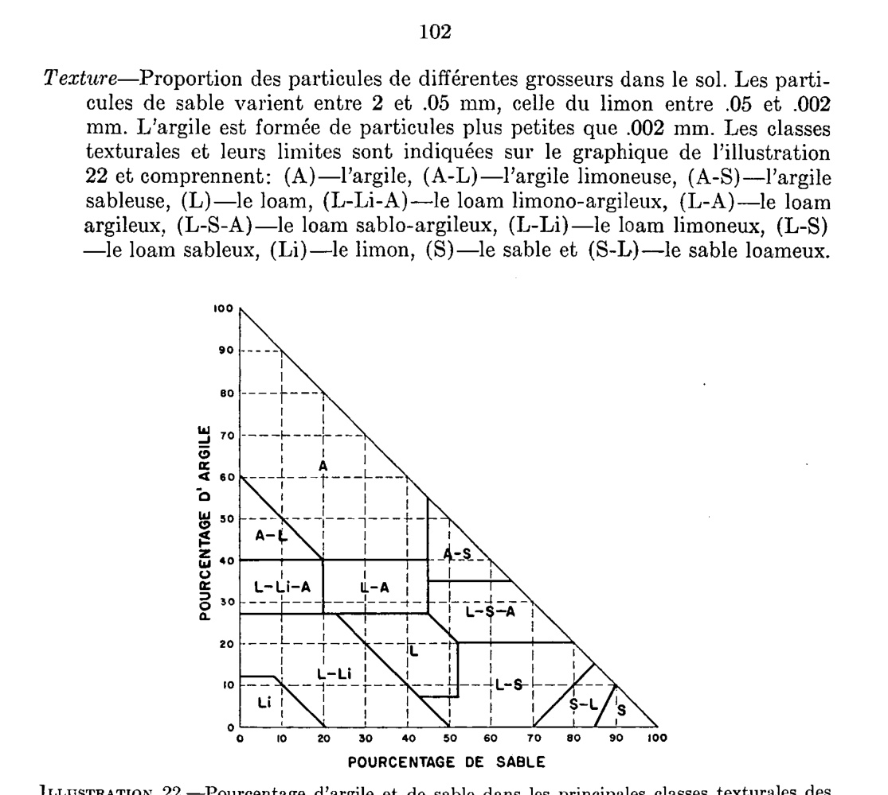
ILLUSTRATION 22.—Pourcentage d'argile et de sable dans les principales classes texturales des sols; le limon, qui n'apparaît pas ici, doit être ajouté pour compléter le pourcentage. Voir Toogod, J. A., Can. J. Soil Sci. 38: 54–55, 1958. Les limites entre les classes des sols sont celles qui apparaissent dans Soil Survey Manual, U.S.D.A. Handbook 18, 1951.
Till (argile à blocs,—dépôt morainique)—Dépôt glaciaire non stratifié et non homogène de pierres, de sable, de limon et d'argile.
Topographie, phase
Les phases topographiques utilisées dans cette étude comprennent les terrains suivants:
Terrain plat—Pentes de moins de 0.5 pour-cent.
Terrain plat avec micro-relief—Plaine avec élévations et dépressions de très faible amplitude.
Terrain ondulé—Pentes irrégulières de 2 à 5 pour-cent et petites dépressions.
Terrain légèrement vallonné—Pentes irrégulières de 6 à 15 pour-cent et petites dépressions.
Terrain vallonné—Pentes irrégulières de 16 à 30 pour-cent et petites dépressions.
Kames—Basses collines fluvio-glaciaires avec pentes de 10 à 30 pour-cent du côté le plus raide et de 6 à 9 pour-cent du côté le moins raide.
Terrain montueux—Courtes pentes irrégulières de plus de 30 pour-cent.
Terrain montagneux.—Longues pentes irrégulières de plus de 30 pour-cent.
Éboulis.—Courtes pentes régulières de 6 à 15 pour-cent avec plusieurs petites dépressions et pentes régulières de 2 à 5 pour-cent dans les parties modifiées par l'érosion.
Type de sol.—Sol membre d'une série et ayant une texture de surface bien définie. Le type est la plus basse unité de classification des sols.
Type de terrain.—Terrain comprenant des sols groupés non selon leur nature intrinsèque mais selon certaines caractéristiques naturelles, externes comme le relief et la végétation.